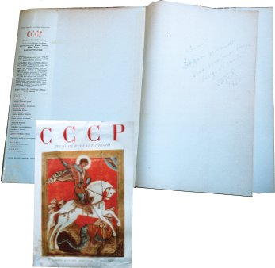
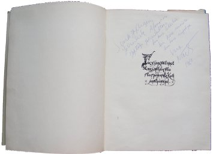
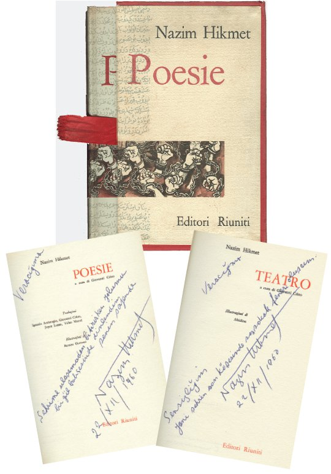
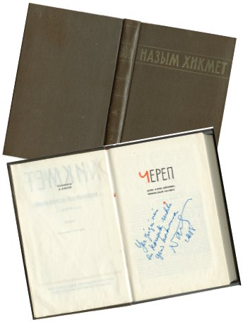

“Hayır, öyle değil. Bıkmıştım artık! Batı’da sümüklü çocuklar bile soruyordu, hoş burada da durum farklı değildi, herkes soruyordu: ‘Moskova’da yaşayıp kendinizi Moskovalı sayıyorsunuz, ama neden Sovyet vatandaşı değilsiniz,’ diye. Batı’da tüm toplantılarda gazetecilerin bana sorduğu iki değişmez soru var. Biri, oyunum ‘İvan İvanoviç’in neden yasaklandığı, ikincisi neden Sovyet yurttaşı olmadığım. ‘Her yerde Sovyetler Birliği propagandası yaparken neden Sovyet pasaportu almak istemiyorsunuz?’ diye soruyorlardı. Her seferinde Yoldaş Stalin’in bana pasaport vermediğini açıklayacak halim yoktu ya! Politik nedenlerin dışında bir de yaşamsal olanlar var. Burada Merkez Komite’nin konuğu olarak yaşıyordum. Yabancıydım yani. Dünyada hiçbir yerde evim yok, açıkça söylemek gerekirse, çocukluğumu bir tarafa bırakacak olursak, hiç olmadı da. Şimdi ise evim burada, Moskova’da. Ve ne yazıktır ki nikâhlı karımı bu eve kaydettiremiyorum. Vera’nın ikametgâhını aldırmak için polise gittim. Yabancı olmam nedeniyle, geçici kayıt yapabileceklerini, bunun da altı ayla sınırlı olduğunu söylediler! Nikâhla ilgili resmi işlemleri yaptırmış olmamıza, Sovyet yasalarına uygun olarak nikâhlanmamıza rağmen! Böyle bir düzen. Biliyor musun, burada birisinin evine çakılı kalır, kurtulamazsınız! Yasa öyle bir işliyor ki, Vera halen ilk kocasının yanında yaşıyormuş gibi görünüyor. Burada yüz binlerce ayrılmış çift, kalan ömürlerini aynı odada geçirmek zorunda. Tamam, o iyi ve dürüst bir insan, ama bu durumdan kurtulmak gerek. Ben hasta bir insanım. Yarın bana bir şey olduğunda, Vera nereye gidecek? Ne olacak ona? Buna verilecek bir yanıt var mı? Çıldıracak durumdaydım. Genelde insanlar karşısında sorumluluk duygusunu yoğun yaşıyorum, hele bir de konu karım olunca, anlıyor musunuz? Bu duruma daha fazla dayanamazdım!”
Hruşçev’in telefonundan önceki gece senin, “Vatan sadece dedelerinin mezarları, selvi ve kayın ağaçları değildir. Bunların hasretini çekmek zor iştir, ama dayanılır. Vatan kavramını gerçek kılan, en basit hayalinden en yüksek amacına kadar, halkının ruhudur! Eğer halkından uzak düştüysen ve eğer basit hayallerden en yüksek amaca uzanan yolda, süreci kısaltacak bir katkın olamıyorsa ona, bahtsız bir insansın demektir” sözlerini ilk kez tam anlamıyla algılamıştım. Şimdi, sensiz kaldığım bu günlerde halkımı düşünüyorum. Nerede o? Moskova’da yok. Hayali ne? Mutluluk, her zamanki gibi...
Geçenlerde başkentin yüz kilometre kadar uzağındaki Klin yakınlarında bir köydeydim. Halkın alışveriş ettiği yegâne dükkânda votka ve ekmekten başka bir şey yoktu. Karşılaştığım nineler, devrimin yıldönümü kutlamaları için onlara Moskova’dan ucuz şekerlemeler göndermemi rica ettiler gözyaşları içinde. Yarım kiloluk üç paketti istedikleri... Gönderdim.
Beni Polonya’ya götürdüğünde bahar yeni geliyordu. Şeremetyevo havaalanında uçuş işlemlerimizi yaptırırken yaşlı bir Ermeni çiftle karşılaşmıştık. Küçüklüklerinde aileleri Avrupa’ya göç etmiş, uzun süre orada yaşadıktan sonra Ermenistan’a dönmeye karar vermişlerdi. Ancak, yeni yaşamlarında eski köklerini bulamadıklarından tekrar geri dönüyorlardı o gün. Sen durumu tam anlayamamıştın, “Neden?” diye sordun onlara. O sırada, gözlerimizin önünde bagajlar, uçağa yüklenmek üzere taşıma arabasına konuyordu. “Bakın, görüyor musunuz?” diye söze başladı yaşlı Ermeni. “Şu sarılar bizim valizlerimiz, gerçek deriden olanlar. Hallerini görüyor musunuz, kayışlarla bağladık...” Daha sözünü bitirememişti ki hamallardan biri adamın gösterdiği bavullardan birini kaptığı gibi diğerlerinin üstüne doğru fırlattı ve ağır bavul öylece yayılıverdi. Ermeni arkasını döndü: “Daha fazla bakamayacağım. SSCB’ye döndüğümüzde bavullarımızın hiçbirinin sağlam kilidi kalmamıştı. Moskova’da da, Erivan’da da fırlatıp attılar hep. Burada kolay bir yaşam var. İnsanlar hiçbir şeyin değerini bilmiyorlar. Biz her şeyin çok zorlukla elde edildiği bir ülkeden geliyoruz. Buraya alışmamız için artık çok geç. Bu nedenle tekrar geri dönmeye karar verdik.”
Polonya’da vaktinin çoğunu çevirmenlerle çalışarak geçirmiştin. Bulduğun her fırsatta, yanındakilerden, çeşitli ziyaretçilerinden kurtulmanın bir yolunu bulup bana şehri gezdirmek istiyordun. Özellikle de gündüzleri. Baş başa dolaşıyor, şehri bir baştan bir başa geziyorduk. Sokaklar renk renk ince çorap giymiş güzel kadınlarla doluydu. Ünlü besteci Frederic Chopin’in kalbi ile süslenmifl parklarda su birikintileri ve karanfiller göze çarpıyordu. Polonyalıların çiçekleri sevdiği belliydi. Güneş henüz ısıtmıyor, rüzgâr soğuk esiyordu. Akşamları vaktimizi daha çok dost ziyaretlerinde, sinema ve tiyatroda geçirmiş, nedense sıkıcı komedi gösterilerine gitmiştik.
Kaldığımız “Bristol” oteli birbirinden güzel aynalarla dekore edilmişti ve o sırada, soyut ressamların sergisine ev sahipliği yapıyordu. Otelin şirin restoranını cumartesi günleri işletmeler kiralıyordu. İşçilerin bu özel gecelerine gelişlerini keyifle izlemiştik. Kadınlar parlak kumaştan uzun, şık elbiseler giymişler, omuzlarını ve saçlarını yapma çiçeklerle süslemişlerdi. Kadınların açık renkli, birbirinden ışıltılı elbiselerinin saten yerine astardan dikilmiş olduğunu anladığımızda: “Bravo, şu işe bak. Fakirliği alt etmek diye buna denir işte!” demiştin.
Rüzgâr bir türlü baharı hissetmemize izin vermemişti. Şehirde yıkılmış, terk edilmiş evler de karşımıza çıkıyordu, ama savaşın izleri yok olmaya yüz tutmuştu. Özellikle bakmaya gittiğimiz gettoda her yer yemyeşildi, taze çimenler bitmişti her yerde. Yıkıntıların yanı başında, camları ışıl ışıl modern bir bina vardı.
“İnsan, penceresinden getto görmeye alışabilir mi acaba?” diye aklından geçenleri yüksek sesle söylemiştin. “Çocuklar... bu evde doğanlar, diğerlerinin hikâyesini öğrenecekler...”
Krakov şehrine gittiğimizde ikimiz de çok etkilenmiştik. Başka bir zaman boyutuna düşmüştük sanki. Taşların seninle konuştuğunu işitmiştim. Usulca bana faşistlerin Krakov’u ele geçirmek için çırpınışlarını, bombalamalarını anlatmış, Avrupa’yı Almanlaştırma planlarından söz etmiştin.
“Ama hiçbir şey elde edemediler!”
Sanki özel bir dekorasyonun içinden geçiyormuşuz gibi gezmiştik Krakov’da. Pek çok rahibe vardı etrafta. Kara kostümleri, başlarındaki kar beyazı örtülerle kuşlara benziyorlardı. Krakov Üniversitesi’nin öğrenci kafeteryası Moskova’da Gorki Sokak’taki bir gençlik kafesini andırıyor gibi gelmişti bize. Orada tanıştığımız hem filozof, hem öğrenci, hem de cerrah birisiyle ateşli bir tartışmaya girmiştim. Biz konuştuk, sen suskun kaldın.
“Eğitiminiz Tanrı’ya inanmanıza engel değil mi? Filozof olarak, maddenin her şeyin önünde geldiğini bilmeniz gerek. Ayrıca, tıp eğitimi almışsınız, doktor olarak insanın ölümlü olduğunu, cerrah olarak da ruh diye bir şey olmadığını biliyor olmalısınız.”
“Orada, Tanrı’nın başladığı yerde düşünce yoktur. Ben her şeye inanıyorum, o kadar. İnsanlara her olgudan şüphe etmeyi Marksizm öğretir. Yadsımanın yadsınması kuramı ile Lenin uğraşır. Biz ise Tanrı’dan söz ediyoruz. Orada her şey tartışmasız ve mutlaktır. İnanç! En güçlüsü sizde olmalı. Adınız böyle olduğuna göre.[119] Adınıza ve sorulara bakılırsa zor bir yaşamınız olmalı...”
Sonra Krakov’un yüz kilometre kadar uzağındaki Zakopanı’ ya gitmiştik. Dağlar karla kaplıydı. Ayaz havada güneş parlıyordu. Etraf kayak yapmaya gelmiş Almanlarla doluydu. Yüksek sesle konuşup gülüşüyorlardı sürekli ve çoğunluğu şişmandı. “Duvarın arkasında sarhoş Almanlar dolaşıyor,” diye aptal bir cümle kafamda dönüp duruyordu. Onlara ne kadar zor tahammül ettiğimin ayrımına varmak şaşırmıştı seni. Her gördüğüm Alman’ın bizimkilere ateş ettiğini sanmış, diğerinin topraklarımızı çiğnediği kanısına kapılmıştım... Bir türlü bu düşüncelerden kendimi kurtaramamış, sürekli olarak bilinçaltımda onlara askeri ceket giydirmiştim. Özellikle de kahkahaları ve pembe tombul yanakları beni çileden çıkartmıştı. Bu, savaştan sonra Almanlarla ilk karşılaşmamdı ve gerçekten ağır gelmişti bana. Sonunda, onları güneşlendikleri dağ zirvesinde bırakıp füniküler ile yaptığımız geziye son vermiş, faytonla etrafı dolaşmaya karar vermiştik. Tarlalarda, otantik kıyafetli köylüler çalışıyordu. Hepsi de nazik ama az konuşan insanlardı.
Sonra Varşova’ya dönmüştük. Bir keresinde şehrin eski kısımlarında gezerken girdiğimiz bir tatlıcı dükkânının sahibi ile tanıştık. Adı Brenkler’di. Dükkânı oldukça tanınmıştı. Pek çok ünlünün duvarlarda imzası vardı. Boşluklar şiir, dörtlükler, el yazılarıyla kaplıydı. Ortam seni çok etkilemişti. Brenkler masamıza oturup Türkiye, Polonya ve Fransa şerefine kadeh kaldırmamızı önerdiğinde “Fransa nereden çıktı?” diye sormuştun. “İletişimimizi Fransızcaya borçluyuz da ondan,” demişti ünlü tatlıcı.
Brenkler ile tanışmamızın ertesi sabahı uzun boylu yaşlı bir adam geldi otel odamıza. Senin Polonyalı kuzenin Borze˛ cki olduğunu söyledi. Sabahın kör bir vaktiydi geldiği. Yüksek sesle laf kalabalığı yapmış, uyandırmıştı bizi. Henüz kalktığın yatağa kendini atıverdi. Kalktıktan sonra da devam etti tuhaf hareketleri. Belli ki kendini zinde göstermekti amacı. Ne var ki tam bir deli gibi hareket etmişti. Yaşamöyküsü davranışlarından da tutarsızdı. Yapmadığı kalmamıştı Kuzen Borze˛ cki’nin. Aktif olarak savaşa katılmış, ne kadar cephe varsa hepsinde bulunmuştu. Bombardıman uçaklarında uçmuş, gerektiğinde yumruk yumruğa dövüşmüştü. Parşömene çizilmiş bir ayı resmi göstermişti sana. Damgaya benzeyen çizimde, ayının başının üstünde kocaman boynuzları olan bir keçi vardı. Bunun aile armanız olduğunu söylemişti.
“Ne biçim bir arma bu böyle?” diye sordun. Pek hoşlanmamıştın bundan.
Oysa yaşlı kuzen gurur duyuyordu bu armayla. Sonra senden sinema artisti olmasına yardımcı olmanı rica etti. “Ya savaşırım ya da aktör olurum,” dedi.
Acıma ve iğrenme duygularıyla burkulmuştu yüreğin. Gönülsüzce yapılan bu akraba buluşması birkaç saat sürmüştü. Kuzenin odamızda kaldığı süre boyunca bir otel görevlisi bize Brenkler’in gönderdiği kutuları getirmişti. Birbiri ardına geliyordu türlü türlü pasta, kurabiye çeşitleri. Gün boyu gelenlere ikram etmiş, kendin de durmaksızın yemiştin. Yedikçe yiyesin gelmişti. Akşam Prag’a hareket edecektik. İki kutuyu trende yemek üzere ayırmamı istedin. Bir tane bile bırakmak istemiyordun. İçindeki çocuk ortaya çıkmıştı. Ve bu benim onu ilk görüşüm değildi.
Moskova’da konuklarımız gittiğinde: “Çabuk kaldır şu pastayı gözümün önünden. Yoksa şimdi silip süpüreceğim hepsini. Pasta da ben de biteriz o zaman. Biliyorsun kilo alırsam öldüm demektir...” derdin. Ertesi sabah kalktığımda buzdolabında pastanın yerinde yeller eserdi. Pastadan kalanlar, sadece etrafa dökülmüş kırıntılar ve yerdeki krema lekeleri olurdu. Gece yarısı kalkar, çatal bıçağa gerek duymadan girişirdin kurbanına.
Evden çıkarken girişteki ışığı açık bırakıyorum. Çıkarken açıyorum. Gündüz bir yere gitsem bile, yarım saat için çıksam, dönerken dostlarla beraber gelecek olsam bile açık bırakıyorum.
Tozlu camlarımızın ardında yeşil bahar hissediliyor. Gecikti bu yıl bahar, güneşsiz ve öylesine soğuktu ki, sanki hasta gibiydi.
“Sensiz” diye adlandırabileceğim bölümün sonuna geldim. Sensiz ilkleri tamamladım artık: Gözyaşlarıma karşın kuru bir yaz, sonbahar yağmurları ve öksüz bir kış. Ve işte şimdi de bahar. Geçeceğim son kilometresi korkunun. Sakın yanaklarımdan sürekli yaşlar süzüldüğünü düşünme. Ben senin karınım Nâzım. Gözyaşlarımı kimse görmemeli. Senden başka...
Usulca okuyorsun bana:
Kahire’nin Özbekiye Bahçesi’ni hatırladın mı?
Oturduğumuz sırayı gidip buldum.
Topal ayağını onarmamışlar.[120]
Elbette anımsıyorum Nâzım. Hem de nasıl! Önünden geçtiğimiz, oturduğumuz bankları arıyorum. Her şeyi, hepsini arıyorum. Sonsuz bir arayış bu. Nedenini biliyor musun? Bu uykusuz gecelerin, sohbetlerimizin nedenini? Doğrulamıyorum bir türlü. Yüreğimdeki ağırlık azalmıyor. Bu kadar Nâzım! Bu kadar. Bir daha asla çalışma odasına girmeyeceğim ve daktilonun başına oturmayacağım.
Nasıl olmuştu Kahire’ye gidişimiz? Ansızın gelişmişti olaylar. Merkez Komite’nin uluslararası ilişkiler bölümünden seni aramışlar ve Asya Afrika Yazarlar Konferansı’na gitmeni önemle rica etmişlerdi. Böyle davranmalarının nedeni, kısa bir süre önce Stockholm’de Dünya Barış Konferansı sırasında yaşanan politik skandaldı. O sıralar, erkek nüfusumuzun çoğu, artık görmekten usandığımız Çin malı aynı tip mavi poplin gömlekten giyiyordu. Kadınlar ise gene Çin malı ve iki rengi olan yünlü eşarp kullanıyordu. Gömlek de, eşarp da “Drujba”[121] etiketi taşıyordu. Mao, kültürel devrime çevirmişti rotasını. Bizim politikacılarımız bunu göz ardı etmekte ya da alışıldığı üzere bildikleri halde, gizli tutmaktaydılar. Ve tamamen sosyal amaçla Stockholm’de bulunan heyetimiz, Çinli delegenin kürsüden ülkesi adına yaptığı konuşmada, SSCB’nin silahsızlanma çağrısının, aslında, askeri güce dayalı devletleri değil, sömürge ve ezilen ülkeleri hedef aldığını söylediğinde donup kalmıştı. Seyahat öncesi, olası bir duruma karşı, SBKP Merkez Komitesi tarafından herhangi bir yönlendirme almadıklarından, bizim delegeler hiç beklemedikleri bu yalan ifadeler karşısında suskun kalmışlar, karşı tarafın uydurmalarını dinlemişlerdi. Sen ise Nâzım, her zamanki gibi anında göstermiştin tepkini. Kürsüye çıkıp provokatörlere gereken yanıtı vermenin ardından herkesin gözü önünde toplantı salonunu terk etmiştin.
Bu olaylardan sonra geldi işte Mısır’a gitme teklifi. Oysa sen o sıralarda seyahate çıkmak istemiyordun. 1961-62 kışında çok formundaydın. Pek çok çalışma vardı elinde. Kafan kâğıtlara dökmeye fırsat bulamadığın yeni tasarılarla doluydu. Şiirler dökülüyordu ağzından. Sürekli yazıyor ve: “Ellerim kaşınıyor,” diyordun. “Parmaklarımın pası gitti, makinenin başından kalkmak istemiyorum.”
Moskova’nın kültürel yaşamı kıpır kıpırdı. Baskı ortamından kurtulan sanatçılar, verimli bir dönem geçiriyordu. Düşünen her insan bu tarihsel süreçte yerini alma çabası içindeydi. Tiyatrolardaki sıkıcı oyunlar gitmiş, gazetelerdeki klasik yorumlar yerini ses getiren şiir gecelerine, gece yarılarına dek süren tartışmalara bırakmıştı. Moskova dünya entelektüellerinin çekim merkezi haline gelmişti. Tabii başkente gelen bu ünlü aydınların çoğu evde konuğumuz oluyordu. Elbette, bu ortamdan ayrılmak istemiyordun. Ama Çinlilerin, konferansı fırsat bilerek, yine Sovyetler Birliği’ne karşı politik atakta bulunacaklarını öğrendiğinde gitmeyi kabul ettin. Tek şartın benim de seninle gelmemdi.
Seninle gurur duyuyorum Nâzım! Korkusuzluğunun en yakın tanığı olmak benim için çok değerli. İnsan sevgisi yaşamın temelini oluşturduğu sürece; dünyanın tek ve bölünmez olduğunu, geçmiş ve şimdiki zaman dilimlerine ayrılmadığını, ölümle yaşamın iç içe geçtiğini, yerle göğün bütün olarak güzel olduğunu gösterdin bana her gün.
Kahire seyahati için Yazarlar Birliği ödenek çıkartmıştı. Bu ilk ve son kez olan bir durumdu. Mısır’da alacak telif bedelin olmadığı için görevliler, ihtiyacımızı “fazlasıyla” karşılayacağını söyleyerek, anımsadığım kadarıyla, on sekiz gün için 16 Mısır paundu vermişlerdi. Miktar sana garip geldiğinden ısrarla sormuş, verilen paranın yeterli olduğundan emin olmak istemiştin. Ödeneğin fazlasıyla çıkartıldığı söylenmişti. Kahire’ye vardığımızda, ilk kez kullandığın Sovyet pasaportun sayesinde, büyükelçilik tarafından karşılandık. Görevliler bizi Amerikalıların inşa ettiği “Hilton” oteline götürdüler.
Son derece sevimli, abartısız bir oda vermişlerdi bize. Ancak, sabah kalkıp da duvarda asılı fiyat listesi gözüme çarptığında neye uğradığımı şaşırdım. Elimizdeki para sadece üç gece kalmamıza yetiyordu. Tabii ki yemeyecek ve bir şey içmeyecektik. O anda nasıl dehşete kapıldığını anımsıyorum. Sinirle telefona sarılıp Sovyet büyükelçisini aradın ve derhal bizi başka bir otele yerleştirmelerini ve borç para vermelerini istedin. Tanrım, ne kötü bir tecrübeydi yaşadıklarımız... Büyükelçi yardımcı olmaları için iki diplomat gönderdi yanımıza hemen. Geldikleri gibi, halimize acımaya başladılar: “Bu kadarcık parayla nasıl gönderdiler sizi, hem de on sekiz gün için,” demişlerdi birbirlerinin sözünü keserek. Ne var ki acımaları bir işe yaramıyordu. Dediklerine göre büyükelçinin de parası yoktu. Akşama doğru bütçemize uygun, yıkık dökük bir otel buldular. Ne elektriği, ne asansörü vardı. Çatısı ilkel yöntemlerle onarılmış, berbat kokan bir yerdi.
Sabah olduğunda, şaşkınlıktan gözleri yuvasından fırlamış bir erkek çocuk geldi odamıza. “Çok sayıda gazetecinin bu odadaki büyük insanı beklediğini,” söyledi, nefes nefese. Gazetecilerin hole –oraya hol demek ne kadar doğruysa– sığmadıklarını da ekledi. Gayet iyi anımsıyorum. Şöyle haykırmıştın:
“Bu sefil, pis otelde yaşama hakkına sahip değilim!”
Tekrar aradın Sovyet büyükelçisini ve bizi derhal Moskova’ ya geri göndermesini istedin. Sovyet pasaportuyla yaptığın ilk yurtdışı seyahatinde karşılaştığın bu sıkıntıya anlam veremediğini anlattın büyükelçiye. Fakat büyükelçi serzenişlerin karşısında sanki sağırmış gibi davranıyor; yeterli bütçesi olmadığını, her kuruş için Moskova’ya hesap vermesi gerektiğini anlatıyor da anlatıyordu.
Senin kararlı telefonların karşında bir şeyler yapma çabasına giren Büyükelçi’nin girişimleri, özel birimler sayesinde, Mısır Devlet Başkanı’nın kulağına gitmiş olacak ki eşyaları topladığım sırada, otele saygın bir devlet görevlisi geldi. Başkan Abdül Nasır’ın özel davetlisi olarak beklendiğimizi ve bizim için bir otelde özel bir daire hazırlandığını söyledi. Bizi götürmek üzere araba aşağıda beklemekteydi. Bizimle son derece nazik konuşan görevli, geceyi geçirdiğimiz odaya şaşkın bakışlar atmaktan kendini alıkoyamıyordu. Üzüntü ve şaşkınlık içerisinde nasıl olup da buraya düştüğümüzü sordu. Sen, her zamanki kıvrak zekânla yanıtladın adamı. Mavi gözlerini açıp, “Fakir kesime yakın olmayı istediğini,” söyledin.
İki eskort grubu eşliğinde terk ettik oteli. Biri polisler, diğeri gazetecilerdi.
Kurye, sabahleyin “Gizira Palas” otelindeki odamıza Sovyet büyükelçisinden bir zarf getirdi. Para yoktu, ama “Aşk Masalı” adlı baleni sergilemek üzere Kahire’ye gelen Novosibirsk Tiyatrosu’nun gösterisine iki davetiye göndermişti büyükelçi.
Gösteri saati tiyatroya gittiğimizde, salon çoktan dolmuştu. Biletleri oldukça pahalı satılan baleyi izlemeye gelenler, Kahire sokaklarında arabalarıyla dolaşabilenlerdi. Arada, birkaç Arap erkeğin yanında bir de kadın yaklaştı yanına. Tepeden tırnağa karalar içindeydi. Hüzünlü yüzü sanki hiç gülümsememişti. Seni bir kenara çekip hep bir ağızdan Fransızca konuşmaya başladılar. Ardından fotoğrafçıyı çağırıp seninle birlikte fotoğraf çektirdiler.
Şimdi o fotoğrafa baktım da kadının gülümsediğini fark ettim. Ama tebessüm gözlerini biraz daha hüzünlendirmiş sanki.
Kederli kadından konuştuktu hatırladın mı?
Kıraliçe Nefertiti’ye benziyordu yüzü.
Komünist kocası beş yıldır can çekişiyor
çölün orta yerinde, toplama kampında.[122]
Hatırlıyorum, elbette. Bale bitip de tiyatrodan çıktığımızda köşede, farları yakmış arabada bizi bekliyorlardı. İçlerinden ikisi yazar, biri ünlü avukat Şahota idi. Kahire’nin gece halini göstermeyi önerdiler bize. Şehrin kenar mahallelerine gittik, taşmış kanalizasyonları, koca bir kaleye benzeyen hapishaneyi, fakir bölgeleri gördük. Kısa sürede kaynaştığımız insanların, yaşadıkları şehre gönülden bağlı olduklarını ve onun dünyanın en güzel şehirlerinden birisi olmasını arzuladıklarını gözlemledik. Şehrin merkezini de gösterdiler bize. Gayet iyi aydınlatılmıştı. Yüzlerce insan yürüyordu sokaklarda. Ne geziyorlardı ne de gruplar halinde duruyorlardı. Belirli bir hedefe yönelmiş, sessizce yürüyorlardı.
Gizemliydi Kahire geceleri. Özbek Sokağı’nda durduk ve uzun bir banka oturup derin bir sohbete daldık. Yeni dostlarımızın ilgi alanı Moskova’ydı. Akla gelmeyecek sorular sormuşlardı, birbirlerinin ağzından lafı alarak. Sovyetler Birliği’ndeki yaşamı hayallerinde canlandırmaya çalışıyorlardı. Oturduğumuz bankın bir ayağı kırıktı. Altına taş koymuştuk. Sonunda taş yerinden kaydı ve sohbetimiz böylelikle sonlandı.
Daha sonraki gecelerde de gittik o banka. Nice sohbetlerimizi dinledi topal tahta bank... Parkın hemen girişindeydi. Meydana açılan üç sokağa dağılan insanları izlemek için çok uygun bir yerdi. Bizi takip edenleri de zorlamıyordu. O ikisini anımsıyor musun? Her yerde peşimizdeydiler. Sen arada onlara dönüp parmağını salladığında saklanıyorlardı. İzlenmemize gerek duyulması seni şaşırtmıştı. Gece gündüz demeden çalışmıştı, ikili.
Tiyatroda tanıştığımız gazetecilerin birisinden sana bir Arap köyü göstermesini rica etmiştin. Ve bir sabah otelden çıktığımızda hurdası çıkmış, her tarafı vurulmuş, ezilmiş bir Volkswagen araba yanaştı yanımıza. Direksiyonun başında bir Japon, yanında da tanıştığın o gazeteci oturuyordu. Nasıl becerdik bilmiyorum, ama biz de bindik arabaya ve Japon rallici edasıyla bastı gaza. Söylediklerine göre bir hafta önce almıştı ehliyetini ve ısmarladığı araba gelene kadar bu döküntüde tecrübe kazanmaya niyetlenmişti. Tüm yeni başlayanlar gibi sadece ileri gitmeyi becerebiliyordu, ama bu delice hız yapmasına engel değildi. Direksiyonda da bir problem vardı. Bu nedenle, bir tarafa dönmemiz gerektiğinde Japon arabayı durduruyor, biz inip hep birlikte gereken yöne doğru itiyorduk.
“İşte Verusya, gördün mü bak,” dedin, “Uçakta parçalanmadık. Hatta Akdeniz üzerinde fırtınaya yakalandığımızda ya da Orly’de ‘Karavela’nın motoru çalışmadığında da bir şey olmadı. Hatırlarsan, Aflkabat’ta uçak tam inişe geçtiğinde tekerleklerden biri koptuğunda da sağ salim indik uçaktan. Ama bana öyle geliyor ki bugün canlı kalmak için çok fazla şansımız yok! Öyleyse, bırak bu bizim en mutlu gezimiz olsun!”
Gezimizi kazasız belasız tamamladık, ama mutlu olduğunu söylemek ne kadar doğru olur bilmiyorum. Not defterine şu notu almıştın: “Kahire yakınlarında Senteris adında bir köy vardır. On bin kadar esmer, neredeyse kara derili, sıska, uzun boylu köylü yaşar burada. Uzun entarili, çoğu çıplak ayaktır. Toprağı karasabanla işlerler... Senteris halkı, tıpkı diğer Mısırlılar gibi, konuksever, cana yakın insanlardır. Ve yoksuldurlar.”
Kahire’nin otuz kilometre kadar uzağında bir yerlerden geçerken uzunca boylu, zayıf bir köylü gördük tarlanın birinde. Tahta sabanla toprağı sürüyordu. Japon’dan durmasını rica ettin. Sabanın toprakta bıraktığı izlere basarak adamın yanına gittik. Güneşin altında kavrulmuş esmer suratı, ayaklarının altındaki çatlamış toprağın bire bir örneğiydi. Bizi görünce durdu. Hepimiz elini sıkıp selamlaştık onunla. Bir tek sen, parmaklarını dudaklarına değdirip alnına götürdün, sonra da yüreğine bastırdın. Köylü tüm sadeliğiyle duruyordu karşımızda. Ağır başlılıkla yanıtladı sorularımızı. Onu ilgilendiren konular toprak, hasat ve kuraklıktı. Bu konularda konuşmaya hevesliydi.
“Gazete okur, radyo dinler misiz?” diye sordun.
“Okumam yok, öğretmenle uğraşacak zamanım da olmadı. Gün doğumundan batımına dek çalışıyorum. Kalabalık bir ailem var. Çocuklar büyüdükçe daha çok yiyorlar...”
Vedalaşırken köylü senin elini sıkıca tutup şöyle dedi:
“Bu akşam çocuklarıma tarla sürerken iyi bir adamla karşılaştığımı anlatacağım. Kim olduğunu, nereden geldiğini soracaklar bana. Anladığıma göre sen Müslüman’sın, karın gibi gâvur[123] değilsin.”
“Ben yazarım. Nâzım Hikmet adım. Türkiye’de doğdum.” Sen bunları söylediğinde kara bir bulut kapladı köylünün yüzünü ve şöyle dedi:
“Yazık, iyi bir adam olduğunu sanmıştım. Oysa Türk’ müşsün.”
“Neden?” diye çığlık attın. “Türkler neden kötüler?
“İsrail’le dostlar da ondan. Yahudilerle beraberseniz bize karşınız demektir. Çok yazık.”
Bunları dedikten sonra sıska atını kamçıladı. Kürekkemikleri rengi solmuş mintanının altında sivrilmişti. Elleriyle sabanın kolunu kavradı ve göz ucuyla bile bakmadan, bizi toz içinde bırakarak önümüzden geçip gitti.
“Buyurun bakalım,” dedin şaşkınlık içinde. “Bir kez olsun şehre gitmemiş, bir tek Yahudi bile görmemiş cahil adam nasıl da nefret ediyor bizden!”
Kahire’de Avukat Şahota ve ailesi ile dostluğumuzu ilerletmiştik. Her şey kendiliğinden gelişmişti. Mısır hükümetinin masraflarını karşıladığı otelin restoranı yerine çoğunlukla onlarda yiyorduk yemeklerimizi. Konferansta oturumlar arasında süre olduğu zaman onlara gidiyor, bir iki saat dinleniyordun. Çok fazla tanımasan da, cana yakın bulduğun, güvendiğin insanların yanında kendini iyi ve rahat hissetmek gibi az rastlanır mükemmel bir özelliğin vardı.
Sen konferansa gittiğinde karısı Mari arabayla beni almaya geliyordu. Bu Arap başkentinin sokaklarında bir sarışın olarak tek başıma dolaşmam pek kolay değildi. Çocuklar sürü halinde peşime takılıyorlardı. Sen beni saçlarımdan yakalamalarından korkuyordun. “İşte o zaman saçlarından oluruz,” diye yarı şaka yarı ciddi söyleniyordun.
Senteris köyünden dönerken yolda karşılaştığımız köylü ile yaşadıklarımızı Şahota ve karısına da anlatmıştın. Hiç sözünü kesmeden dinlemişlerdi seni. Sonra:
“Siz ne dersiniz bu işe?” diye sordun.
“Ne diyebiliriz ki,” dedi Şahota hüzünle. Sonra yaşlı annesine seslenip yanımıza gelmesini istedi. Ufak tefek, sevimli bir kadın girdi içeri. Aydınlık gözlerle bakıyordu oğluna.
“Anne, Nâzım’a ailemizin kaç yıldır Mısır’da yaşadığını söylesene.”
“Aşağı yukarı dört yüz yıldır.”
“Neredeyse dört yüz yıl ya! Ve atalarımızın hiçbiri gitmek istememiş buradan. Kendilerini Arap olarak hissetmişler. Bizim farklı geleneklerimiz, alışkanlıklarımız yok. Onlarla tıpatıp aynıyız, ama şimdi buradan gitmemiz gerekiyor. Oysa benim toprağım, vatanım burası. Mısır’ı seviyorum, onun bir parçasıyım! Bu durumda ne yapmalıyım, Nâzım Hikmet? Çok güç bir durumdayım. Ben Yahudi’yim ve şimdi bu yüzden insanlar kaçıyorlar benden. Artık bana güvenmiyorlar. Okulda kızlarımıza sataşıyorlar. Onlara nasıl açıklayacağımı, tüm bu olanların şimdi komşumuz olan İsrail’den kaynaklandığını nasıl söyleyeceğimi bilmiyorum... İşte böyle Nâzım.”
“Neden Yahudi kanı yok bende?” diye içtenlikle dertlendiğini anımsıyorum. “Türk, Polonya, Fransız, belki biraz Alman ve hatta Gürcü kanı var, ama Yahudi yok. Onların kaderini paylaşmak isterdim. Ne kadar çileli bir halk!” Onlardan tek bir konuda şikâyetçiydin, derdin ki:
“Şu bizim Yahudi kardeşlerimiz, bu adamlar ne istiyorlar senden?” Ve şakacıktan bir tehdit savururdun: “Beni Yahudi karşıtı yapacak tek unsur budur.”
Kahire’ye kongre başlamadan on gün önce gitmiştik. Tüm dünya halkları için yazdığın dizelerin Mısır gazetelerinde basılmıştı hemen:
Kardeşlerim
bakmayın sarı saçlı olduğuma
ben Asyalıyım
bakmayın mavi gözlü olduğuma
ben Afrikalıyım[124]
Dizelerin dilden dile dolaşırken onlarca gazeteci de peşini bırakmıyor, çeşitli ülkelerden gelen delegeler seninle görüşmek istiyorlardı. Gece yarılarına dek, tutkuyla, dur durak bilmeden çalışıyordun. Bu durum beni kaygılandırmıştı. Diğer yandan pek çok insanın sana gereksinim duymasından duyduğun hazzı görüyor, bunun senin için esin kaynağı olduğunu algılıyordum. O günlerde iyilik ve barış bilgesi olarak ışık saçıyordun çevrene. Ve bu durum beni mutlu ediyor, endişelerimden uzaklaştırıyordu.
Kongre 12 Şubat 1962 sabahı açıldı. Faruk Sarayı’nın salonu delegelerle doluydu. Kara ve sarı derili insanlar deniziydi sanki ortalık. İlk kez böyle olağanüstü bir toplantıya katılıyordum, o da yarı resmi olarak. Önümde, benden epeyce uzak bir yerde geniş sırtını ve enseni görüyordum. Başkanlık divanı seçileceği sırada, Çinli delege ansızın kalktı ve şunları söyledi:
“Şimdi aramızda bulunan bir yazarın oy kullanmasının önlenmesini talep ediyoruz. Burada Türk edebiyatının temsilcisi olarak bulunmakta. Sözünü ettiğim kişi Nâzım Hikmet’tir. Soruyorum sizlere, Türk pasaportu taşımayan ve Moskova’dan aldığı belgelerle buraya gelen bir kişi Türk yazınının temsilcisi olabilir mi? Kendisinin delegelikten çıkarılmasını talep ediyoruz.”
Salonda herkes donup kalmıştı. Sessizlikle geçen birkaç dakikanın ardından ön sıraların ortasından usulca kalkıp, telaşsızca kürsüye doğru yürüdün. Mikrofonun önüne geldiğinde, kendinden emin, onurlu bir şekilde durdun. Çıt çıkmayan salonda oturan katılımcıların gözlerinin içine bakıyordun. Yüzünde endişeden eser yoktu.
“Öyle sanıyorum ki,” diye başladın söze. “Asya-Afrika Yazarlar Kongresi’nde ülkem Türkiye’yi temsil etme hakkına sahibim. Çünkü halkının dilinde yazan bir yazar, ülkesinin edebiyatını temsil etme hakkına sahiptir. Burada toplananların polis değil, yazar olduğunu düşünüyorum. Ne yazık ki yurdumda, Türkiye’de bugün benden daha iyi bir şair yok. Bundan da öte, salonda bulunanlar arasında da en iyi şairin kendim olduğunu düşünüyorum.”
Salonda kopan alkış hızını kesmedi:
“Eğer söylediklerimde bir abartı varsa birilerini kırdıysam, hemen yanıma gelsin. Sevinçle elini sıkmaya hazırım.”
Herkes nefesini tutmuş, bekliyordu. Kimse kımıldamadı yerinden.
“Öyleyse saygıdeğer yazar yoldaşlarım, benim oy hakkımı almak yerine beni başkanlık divanına seçmenizi istiyorum sizden. Kabul edenler elini kaldırsın lütfen.”
Ve tüm salondakiler tek yürek olmuşçasına kaldırdılar ellerini! Başkanlık divanına geçip oturduğunda delegelerin elleri hâlâ yukarıdaydı.
Dışarıdan sakin görünüyordun. Ama bu zaferin, içinde nelere mal olduğunu tahmin edebiliyordum. Sen ki, Moskova’da evimize gelip kendini “Ben şair bilmem kim” diye tanıtan insanlara şaşar, gizlemeye gerek duymadığın ironiyle: “Tüm yaşamım boyunca kendimi tanıtırken ‘Şiir yazarım’ dedim. Kendi kendimi şair diye tanımlamayı doğru bulmadım,” derdin. Sana göre bir insanın kendi için “şair” demesi, “iyi insanım” diyerek böbürlenmesi ile aynıydı.
Kahire’de böyle davranmanın nedeni, gergin bir politik savaşın dayatmasıydı. Ayrıca, kimsenin ne o zaman ne de daha sonra Türkiye’nin söz hakkını elinden almasına asla izin veremezdin. Kazanmak zorundaydın ve kazanmıştın da. Gün boyu soruları yanıtladın. Oturum aralarında yazarlarla tartıştın, insanları ikna ettin, daha sonra yapacağın konuşma için notlar aldın ve sayısız demeç verdin. O gün gece yarısı gelebilmiştin otele. Gerginliğin o zaman meydana çıkmıştı... Sabah olduğunda ağzında sigara, söylenmiştin bana:
“Yatamam Vera, ne diyorsun sen? Gerçek bir saldırı hazırlanıyor bize karşı. Dostlarımın yanında olmalıyım.”
Peki, kahvaltı için “Gizira Palas”ın restoranına indiğimizde olanları anımsıyor musun? Bizi Çinlilerle aynı otele yerleştirmişlerdi hani. Kahvaltı salonunda hiçbiri selamlaşmadı bizimle. On üç yazardan oluşan heyetin başkanı devrin Kültür Bakanı Mao Dun’du. Ünlü bir düzyazı ustası olan bakan, aynı zamanda senin eski bir dostundu. Tıpkı bizim gibi, Çinliler de konferans başlamadan çok önce gelmişlerdi Mısır’a. Ve Bakan, tüm bu zaman zarfında konferansta Çinlilerin tarafında olman için sana dil döküp durmuştu. Çin Halk Cumhuriyeti’nde kültür devrimi yeni başlamıştı ve henüz pek az insan onun yıkıcı gücünün farkındaydı. İşte bu nedenle, özellikle Stockholm’de yaşananlardan sonra Çinliler senden korkuyorlar, Mısır’da olası çıkışlarından çekiniyorlardı. Mao Dun, göstermelik olarak Çin’e taşınmanı teklif etmişti. Gerçekte ise gönlünün çektiği herhangi bir yerde –Paris, Roma ya da İsviçre olabilirdi– sıkıntı çekmeden yaşamanı sana vaat ediyordu. Tek isteği seni Sovyetler Birliği’nden kopartmaktı.
Böyle bir şey olamayacağını sabırla açıklamaya çalıştın önce. Ama bir türlü seni anlamadıklarından tüm ilişkilerini kestin Çin heyetiyle. İşte bu nedenle de konferansta oy hakkının elinden alınmasını talep ettiler. Sen, Mao Dun’un görevi gereği böyle davranmak zorunda olduğunu düşünüyor ve insanca bir yaklaşımla, acıyordun onun bu haline. Başka bir şeyden şüphelenmek aklına bile gelmiyordu. Oysa kültür devriminin kazanlarında ilk yananlar senin kitapların oldu. Aradan bir süre geçip de bakan tüm sorumluluklarından uzaklaştırılıp, kitapları basılmaz, adı anılmaz olduğunda şaşırmadın.
“Hayır,” dedin o sabah bana. Sesin çok ciddiydi. “Delegeleri kendi amaçları doğrultusunda kullanmamaları için Çinli yoldaşlara engel olmalıyız. Sen de gördün katılımcıları. İçlerinde çok genç olanlar var. Kimi siyasi arenadaki çekişmeler konusunda deneyimsiz, kimi ‘yazarın’ ise doğru düzgün yazdığı bir satırı bile yok, ama aylarca Çin’de konuk olarak ağırlanmışlar. Durum çetin anlayacağın.”
Sarayın girişine, delegasyon başkanları hakkında kısa bilgilerin yazılı olduğu afişler asılmıştı. Senin için şöyle yazılıydı: “Nâzım Hikmet – Dünyaca ünlü şair, 56 dile çevrilen pek çok kitabın yazarı, Dünya Barış Örgütü üyesi.”
Konferansın kapanışından önce Devlet Başkanı Nasır, konuk yazarlar şerefine bir davet verdi. Faruk Sarayı’na bizi götürmek üzere söylenen saatte genç bir adam geldi otele. Son derece eğitimli birisiydi. Rusça bilmediği için özür dilemişti bizden. İngilizcesi ise benimkinden de kötüydü. Bu yüzden çok iyi anlaşmıştık onunla.
Sarayın bulunduğu meydanda arabadan indiğimizde, sayıları neredeyse bini bulan yoksul insan kalabalığının beklediğini gördük. Polis kordonu altındaydılar. Kemikleri çıkmış sıska, uzun ellerini bize doğru uzatmışlardı. Trahomdan gözleri kan çanağına dönmüştü. Üzerlerindeki bez parçaları bedenlerini güçlükle kapatıyordu.
“Bileş, bileş!” diye bağırdı bize eşlik eden genç. “Çekilin, çekilin!” demek istiyordu belli ki.
Kalabalık ise artan bir uğultuyla Tanrı-insan Abdül Nasır’ın geçeceği yola doğru çemberi daraltıyordu.
Fakat Başkan Nasır, sadece onları, kendine kul olmuş insanları değil, dünyanın dört bir köşesinden gelmiş yazarları da bekletti sarayın salonunda.
Eski salona girdiğimizde, duvarların ihtişamı ve pırıl pırıl parke yerler şaşırtmıştı bizi. Öyle ki insan yürürken buzun üstünde olduğu izlenimine kapılıyor ve düşmekten korkuyordu. Salon tamamen boştu. İhtişamlı tablolarla bezenmiş duvarlar boyunca ne yaslanacak ne de oturulacak bir mobilya vardı. Tören yöneticisi, elinde mikrofon, heyetlerdeki yazarları Arap alfabesine uygun olarak sıraya koymaya çalışıyor, salonun ortasında da Mısırlı yazarlardan bir kare oluşturma çabasıyla çırpınıyordu. Ama kimse diğerinin arkasında durmak istemediğinden tartışma çıkıyor, yazarlar ön sıraya geçmek için itişip kakışıyordu. Neredeyse bir saat böyle geçti. Herhangi bir düzen olacağa da benzemiyordu. Sen öfkelenmiş, yorulmuştun. Daha fazla ayakta durmak istemiyordun.
Sonunda bazı delegasyonların dediği oldu ve yeni bir karar alındı. Latin alfabesine göre sıraya girilecekti. Yeni bir karışıklık baş gösterdi. Rehberimiz cebinden çıkardığı “Türkiye” yazılı yaka kartını senin ceketine iğneledi. Üç duvar boyunca dizilen yazar sıralarının hemen hemen en sonunda, devlet başkanının duracağı varsayılan yerin yakınına düştük.
Ama Nasır, hâlâ ortalarda yoktu. Öfkeden çılgına dönmüştün. Çıkıp gitmekten bahsediyordun.
“Yerin dibine batsın böyle davetler!” dedin.
O sırada orta karede bekleyen Mısırlı yazarlardan bir hanım düşüp bayıldı. Salonun dışına taşıdılar onu. Rehberimiz: “Nasır’a olan sevgisinden,” diye açıkladı durumu.
“Hayır!” diye bağırdın. “Aşktan olmaz böyle şey! Daha fazla dayanamadı bu barbarlığa, ayakta durmaktan yoruldu! Ben de o zavallı gibi yere kapaklanmak istemiyorum!” dedin ve Türk usulü bağdaş kurup yere oturuverdin.
Rehberimizin şaşkınlıktan dili tutulmuştu. Korku ve ümitsizlik içinde kalkman için sana yalvarmaya başladı. Sen yanıt bile vermeye gerek görmeden başını iki yana salladın ve cehennemin dibine yolladın genç adamı.
Seni yerde bağdaş kurmuş oturur gören tören yöneticisi ise gözlerini kapadı ve açamadı bir süre. Herkes sana çevirmişti bakışlarını. Ve bence özenerek bakıyorlardı.
Rehberimize senin çok yorulduğun için böyle bir davranışta bulunduğunu ve kalkman için ısrarcı davranılırsa, sinirlenip çıkıp gidebileceğini, yapılabilecek en iyi şeyin seni rahat bırakmak olduğunu söyledim kıs kıs gülerek. O zaman genç adam Rusça konuşmaya başlayarak hayretler içinde bıraktı bizi.
“Madem öyle, o zaman Türk heyetinin başkanı kocanız değil, siz olacaksınız,” dedi ve senin ceketinden çıkarttığı yaka kartını bana taktı.
Rehberimizin Rusça konuştuğunu ve yaptığını görünce kahkahalarla öyle bir güldün ki genç adam gerçekten aklını kaçıracak hale geldi. Ve işte tam o sırada, Devlet Başkanı salondan içeri girdi. Etrafı görevliler ile çevriliydi. Gri bir takım vardı üstünde. Son derece sade ve yakışıklı görünüyordu. Etkileyici bir tebessümle bekleyenleri selamlayarak sıranın en başına yürüdü ve konukların elini teker teker sıkmaya başladı. Çin heyeti ile tokalaşması biraz daha uzun sürdü. Mao Dun ile bir şeyler konuştu. Sonra hızlı tempoda el sıkarak, hiç durmadan Sovyet heyetinin yanına geldi. Bizim yazarlarla birkaç dakika konuştu. Aynı duvarın diğer ucunda beklediğimiz için tam görememiştim, ama net olarak izlediğim başka bir şey vardı. Başkan Sovyet heyeti ile konuşurken tüm Çin heyeti protesto olarak yüzlerini duvara dönmüştü. İçlerinden bir kadın dönüp dönüp arkasına bakıyor, başkanın Sovyet heyetinin yanından uzaklaşıp uzaklaşmadığını kontrol ediyordu.
Nasır’ın salona girişiyle kalkmıştın yerden. Çinli yazarlara kederle bakarak başını salladın ve: “Allah kahretsin, bu insanlar bir de onurdan ve mücadeleden bahsederek Çin’in politikasını belirliyorlar. Zavallı Çin halkı, binlerce yıl özgürlük için çırpınan olağanüstü halk. Mücadeleleri bu oportünistler gelip de tepelerine otursun diyeymiş meğer.”
Başkan bize doğru ilerlerken Rusça bildiğini sonradan anımsayan rehberimiz Arapların geleneksel selamlamasını öğretti bana. Uzunca bir sözcüktü bu. Böylece Başkan Nasır’ı kendi dilinde selamladım. Son derece nazik bir şekilde gülümsedi ve karının Arapçayı nerede öğrendiğini sorarak başladı seninle konuşmaya. Seninle uzun süre, tahminimce herkesten uzun, konuştu. Önce geldiğin için teşekkür etti. Ardından yolculukta zorlanıp zorlanmadığını, Mısır ikliminde kendini nasıl hissettiğini ve burada canının sıkılıp sıkılmadığını sordu. Otele gönderdiği hediyeleri benim beğenip beğenmediğimle de ilgilendi.
Başkan Nasır’la böyle tanıştık. Davetin resmi kısmının bitmesinin ardından seninle özel olarak konuşmak istediğini söyledi ve gerçekten de ülkesi hakkında uzun bir söyleşi yaptınız.
“Yoksulluğumuzu gördünüz, biliyorum, ama mücadeleye yeni başladık. Yine gelin ülkemize, ama bir aydan daha uzun bir süre için. Size her şeyi gösteririz ve belki de yeni Mısır, şiirlerinizde yansımasını bulur. Dünyadaki her yeni olgu gibi, biz de sizin gibi büyük bir şair tarafından kutsanmaya gereksinim duyuyoruz.”
Sohbet sırasında Başkan Nasır’ın “Bir Aşk Masalı” balesini çok beğendiğini öğrendik. Başkan senden onların tiyatrolarına özel bir bale librettosu yazmanı rica etti. Kısaca Başkan, Birleşik Arap Cumhuriyeti’nde kültürün yeniden yapılandırılmasına yardımcı olman için zaman ayırmanı rica ediyordu. O sırada Devlet Başkanı’nın yanında duran görevlilerden biri, ülkelerinin konuğu olarak bizi davet ettiklerini ve herhangi bir konuda endişelenmemize gerek olmadığını söyledi.
“Teşekkür ederim,” dedin sen. “Ama ben şairim ve özgürlüğümü her değerin üstünde tutarım. Gezmeyi, konuk olmayı severim; fakat sadece kendi emeğimle kazandığım para ile yaşarım. Kitaplarım ülkenizde basılmıyor, dolayısıyla alacağım telif yok. Bu nedenle, davetinizi kabul edemem.”
Birkaç dakika sonra sana kitaplarının yayımlanacağını ve iki ciltlik şiir kitabının yakında piyasaya çıkacağını söylediler. Alacağın telif bedelini ve bu parayla Mısır’da ne kadar süre yaşayabileceğinin hesabını da yaptılar.
Mısır’da keyifle gezmiştik. Konuştuğumuz sıradan insanların bir çırpıda senin Müslüman benim “gâvur” olduğumu anlamaları beni hayrete düşürüyor; Mısır’da İstanbul’un çizgilerini ve kendi halkının özelliklerini görmek seni mutlu ediyordu. Sürekli olarak şu sözler dökülüyordu ağzından:
“Bak, bu tam bizdeki gibi. Bizde de böyledir. Kadınlar böyle giyinirler. Yiyecekler, yüzler, minareler, hatta Hilton Oteli bile tıpkı Türkiye’deki gibi.”
Ve orada, Kahire’de, her yerde olduğundan daha çok Türkiye’yi anımsatan özellikler bulmuştun. Halkın yoksulluğunu gördükçe de: “Seni öfkelendirmiyor mu ha, öfkelendirmiyor mu?” diye sormuştun sürekli olarak.
Kahire’de tesadüfen tanıştığımız Çek, sokak satıcılarının sattıkları Doğu’ya özgü tatlıları gördüğünde gözlerinin nasıl parladığını fark edince, korku içinde feryat etmiş: “Buralardan alınmaz böyle şeyler!” demişti. “Yiyecek maddeleri sadece dükkânlardan alınır. Bu tezgâhlarda baklava ile beraber öyle çok bulaşıcı mikrop satılıyor ki aklınız almaz. Tüberküloz basilleri, her çeşit trahom, daha neler neler... Üç yıldır buradayım. Bu işporta tezgâhlarının korkunç bir şekilde mikrop saçtığını iyi biliyorum.”
Sonra bizi bildiği bir tatlıcı dükkânına götürdü. Çocukluğundan bildiğin çeşit çeşit tatların sergilendiği cam vitrinin önünde durdun bir süre. Sonra şöyle dedin:
“Verusya, tut beni. Burada ne varsa hepsini satın alabilirim şimdi. Öyle lezzetliler ki! Hepsi Türkiye’deki gibi. Şu baklavaya bak, şerbeti nasıl da sızmış. Ah, bence hiç bu kadar güzel şeyler yememişsindir. İnan, ağzımın suyu aktı. Komik olduğunu biliyorum, ama elimden başka bir şey gelmiyor. Doğu’nun tüm bu hazinesini silip süpürmek arzusuyla yanıyorum.”
Çek, güçlükle bir masaya oturttu seni. Tezgâhın önünden ayrılırsa istediklerini vermeyeceklerinden korkan bir çocuk gibiydin. Neyse ki Çek dostumuz düzeni sağlamayı biliyordu. Çeşit çeşit hamur tatlılarıyla dolu koca bir tabağı masaya getirtti.
“Canınızın çektiklerini yiyin. Kalanları geri veririz. Yediklerimizin parasını sonra ödeyeceğim.”
“Neden sonra?” dedin yalvarırcasına. “Ben şimdi hepsini öderim,” deyip kasaya koştun.
“İşte şölen diye buna denir,” diye bağırdın masaya tekrar otururken. “Bu tatlı işinden anlıyorum, ama içmekten anlamıyorum. Sarhoş olamıyorum. Ah, ne yazık, Ekber babam benim, babasının neler yediğinden haberi yok! Bakû’de, Kirovobad’da doğru düzgün baklava yapamadıklarını söylüyorum ona. Kalın yapıyorlar. İnsanın ağzında dağılmıyor, şeker deniz kumu gibi gıcırdıyor. Bak burada, öyle değil. Bizdeki gibi, ağızda eriyor,” diyordun ağzına attığın her lokmanın arasında. “Yok, böyle olmaz, bir kerecik olsun gerçek Türk baklavası yedirmeli ona! Azerbaycanlıların baklavanın tarifini bizden aldıklarını biliyorsunuz değil mi? Ne de olsa, Türkler çok daha önce başlamışlardı baklava yapmaya.”
“Tıpkı radyoyu, elektriği, buhar makinesini aldıkları gibi mi?” diye takıldım sana.
“Hayır, onları değil ama baklavayı aldılar! Bırakın bir şeyi de biz başkalarından önce bulmuş olalım!
Kahire’den ayrılmadan önce tekrar uğradın aynı tatlıcıya. Uzun yola dayanacak şekilde baklava paket etmelerini istedin. şerbetinin dışarı sızmaması ve baklavaların ezilmemesi için özel tedbirler alarak kutuya yerleştirdiler tatlıyı. Küçücük bir delikten uçup gidebilecek bir mücevher tozu gibi paketlediler. Kutuyu renkli fiyongundan tutup kaldırdın. Tatlıcıyla vedalaşırken, bu leziz şeyleri Moskova’da yaşayan ve hayatı boyunca gerçek baklava yememiş Müslüman bir dostuna hediye olarak götüreceğini törensel bir tavırla açıkladın.
Uçakta kutuyu kucağında tutuyor ve rafyanın fiyongunu çözüp bağlıyordun.
“Ver de yukarıya koyayım,” dedim.
“Gerekmez, bana bir zararı yok,” dedin.
Nil’in üzerinden uçuyorduk. Çocukluğumuzun “mavi” Nil’i, koyu sarı bir renkte görünüyordu yukarıdan. Gözlerimi ayırmaksızın bakıyordum pencereden. Bir süre sonra sana döndüm. Fiyongu çözmüş, kutunun içindeki kâğıdı hışırdatıyordun.
“Ne yapıyorsun?” diye sordum hayretle.
“Aktı mı? diye bir bakayım dedim.”
Kutuya bir göz attım ve bir dilim baklava yeri boştu.
“Kutuyu Ekber’e hediye götürüyorsun ama...”
“Daha çok var. 10 parça. Kocaman dilimler, biftek gibi. Hepsini birden yiyecek hali yok. Eh, uzun süre durmaz da. Kurur, lezzetini kaybeder, Kirovobad baklavasından beter olur.”
Kutuyu tekrar bağladım. Biraz sakinleşir gibi olmuştun.
“Uyumuyor musun?” diye birkaç kez sordun bana.
Bir ara dalmışım. Gözlerimi açtığımda ne göreyim? Ağzın dolu, avurtların şişmişti. Kutuyu doğru düzgün açmaya bile sabrın yetmemiş, paketi paralamıştın. Selefon kâğıtları yırtılmış, baklavanın yarısından daha azı kalmıştı.
“Ne yaptın, Nâzım?” dedim sitemle. “Neredeyse hepsini bitirmişsin!”
“İstemeden oldu, kendimi tutamadım. Biraz kaldı, ama şimdi onu da yemek gerek. Bu kadar vermek ayıp olur. Daha cümlenin sonunu getirmeden kalan baklavaları birbiri ardına attın ağzına.
“Tanrım! Şimdi Ekber’e ne diyeceksin? Ne kadar üzülecek.”
“Neden üzülecekmiş? Ona baklava getirdiğimi bilmiyor ki!”
Şeremetyevo havaalanında uçaktan inip de Babayev’i gördüğümüzde kucakladın onu ve hemen şöyle dedin:
“Oy, Babayev, oy paşam benim. Baban size baklava getiriyordu. Kahire’den gerçek baklava! Ama yolda, kendini tutamayıp hepsini yedi.”

Anlamıştım, bugün temizlik yapmaya başladığımda bir şey olacağını duyumsamıştım. Senin “selamlarını” ajan sezgisiyle hissediyorum. Meğerse sırların varmış, hem de sehpa büyüklüğündeki bu kitap kadar kocaman sırların! Bravo, teşekkürler, Nâzım! Az bulunur, mükemmel bir kitap. Herhalde şimdi evimizdeki en güzel kitap. Senin kendi yazdıklarını saymıyoruz tabii. UNESCO yayını “Eski Rus İkonaları.” Nereden bulmuştun acaba bunu? Ama en güzeli içine senin yazdığın not: “45inci doğum gününde Vera Vladimirovna’ya sevgiyle. Nâzım 1960.”
Demek ki dört yıl önce onu getirip divanın altına sakladın ve bir şey söylemedin! Senin şakalarından korkmam, aklımı yitirmem gerek, ama ben mutlu oluyorum. Sanki senin elinden almışım kitabı gibi hiç şaşırmıyorum. Şimdi kaç yaşımdayım biliyor musun? Otuz ikiyi geçtim biraz... Kırk beşe daha epey var... belki de ellerimiz kavuşur o zamana dek...
Yap bakalım şakalarını, yeter ki unutma. İki kişi seni geçenlerde “Beloruskaya” metrosunda gördüğünü söyledi bana. Yok, inanmadım. Toprağın altından niye çıkacaksın ki... Ama o istasyonda inmiyorum.
Fransa’ya birlikte ilk gidişimiz beş yıl önce, bahardaydı. Beni Paris’e nasıl hazırladığını anımsa. Stockholm’den açık bej rengi güderi bir ceket, kahverengi bir etek ve gene kahverengi ayakkabı ve çanta getirmiştin. Hepsi de “Paris’te sevdikleri gibi,” uyumluydu.
Havaalanında Abidin karşıladı bizi. Tepkisini hemen almak istedin:
“E, nasıl buldun Vera’yı?” Ardından gururla ekledin: “Giysilerini ben seçtim!”
“Harika! Zevkin mükemmel. Üstündekiler bu kadar yeni olmasaydı, Vera tam bir Fransız gibi görünürdü. Halledilebilecek bir mesele. Ben ona yardım ederim.”
Eski, küçük ve darmadağınık arabasına güçlükle bindik. Uzun bacaklarını zorlukla sokabildin arabaya. Oturduğunda dizlerin başının hizasına çıkmıştı. Bu halde hareket ettik. Arabayı Abidin’in karısı Güzin kullanıyordu. Ama sağa sola dönmek gerektiğinde direksiyonu döndürmeye gücü yetmediğinden Abidin’den yardım rica ediyordu. İkisi var güçleriyle direksiyona asılıyorlar, araba gönülsüzce istedikleri yöne dönüyordu. Bu halleri hoşuna gitmiş, neşelenmiştin.
“D’Albe” adlı küçük otele böyle vardık. Otelimiz Saint Michel Bulvarı’na oldukça yakındı. Bu oteli Abidin iki nedenden ötürü seçmişti. Birincisi evlerine çok yakındı. İkincisi de, Abidin Paris’te yaşayan bir insanın, istediği her an Sen Nehri’ni camından görebilmesi gerektiğine inanıyordu ve odamızın banyo camından iyice sarkıp baktığımızda Sen Nehri’ni ve Notre Dame Kilisesi’ni görebiliyorduk.
Abidin “Paris’te vakit kaybetmeye gelmez. Hadi çıkıp gezelim,” dediğinde eşyalarımızı otele ancak bırakmıştık.
Şehirde iki üç saat gezdik. Hayran olmamıza yetti bu süre. Sürekli mimiklerimi izliyordun. Paris’i beğenip beğenmediğimi anlamaya çalışıyor, Notre Dame’ın, Elysee’nin, Place de l’Etoile, Montmarte, Bulon Ormanı ve Louvre’un bende bıraktığı etkiyi görmek istiyordun. Geziyi tamamlayıp “grand” otelimizin önünde arabadan indiğimizde Abidin kendinden gayet memnun baktı bana ve:
“Hah, şimdi tam Parisli oldun,” dedi.
Yüzünün ifadesinden bana bir şey olduğunu anladım. Üstüme şöyle bir baktığımda açık renk ceketimin kirlendiğini sadece kollarında, dirsek kıvrımlarında kendi renginde izler kaldığını gördüm.
Odada süet ceketi kurum lekelerinden arındırmak için uğraşırken homurdanmış ve Abidin’in gereksiz züppeliğinin ceketi değil benim imajımı bozduğunu söylemiştin...
“Kirli, özensiz giysiler sana yakışmıyor. Sen başka bir ülkenin, kültürün temsilcisisin. Yaşamda başkasının rolünü oynamaya gerek yok! Aslında rol yapmaya gerek yok. İnsan kendisi olmalı...”
Bir keresinde Abidin’e şöyle dedin:
“Vera’nın resmini yap benim için.”
Oysa o portre çizmiyordu. Ama sen istemiştin. Paris’ten ayrılırken Abidin havaalanına bir paket getirdi ve: “Al bakalım. Vera’nın üç portresi,” dedi.
Moskova’da açtın paketi. Abidin espri yapmıştı. Paketten çıkan tablo üçleme şeklindeydi. Deniz manzaralarıydı bunlar. Dingin dalgaların ortasında mavi, yeşil ve kahverengi imgelenmiş üç ada vardı. Bir ressamın, kişinin karakterini renkler ile vermesinden müthiş etkilenmiştin.
“Gerçekten de böyle Vera!” dedin ve “portreyi” duvarın ortasına astın.
Madam Lecompte’u anımsıyor musun Nâzım? Büyülemişti seni: iki yüz erkek kadar akıllı, profesör kadar eğitimli, Brigitte Bardot kadar çağdaş, Rockefeller kadar aktif ve Paris kadar büyüleyici.
“Milyonere benzer bir yanım var mı benim?! Hayatım boyunca kadırgalarda köle gibi çalıştım çünkü! Savaştan önce Paris’in Christian Dior’uydum. Şimdi 73 yaşımdayım. Bir yığın işin üstesinden geliyorum. Sizse Vera 28 yaşındasınız ve araba kullanmayı bilmiyorsunuz?! Olabilecek bir şey değil bu!”
Ehliyetimi ona borçluyum. Ama önemli değil. Altı ay sonra onun Mersedes’inde Paris yakınlarındaki Chartres’e giderek “nakavt” ettim onu. Nasıl da ateş topu gibi araba kullanıyordu anımsıyor musun, Nâzım? Sağından solundan geçen tüm şoförlere yetişir, camdan bağırdığı yetmiyormuş gibi bir de direksiyonu bırakıp yumruğunu sallardı onlara. Her birinin “aptal” olduğunu yüzüne vururdu. Gerçek Fransız karakteri vardı onda!
Madam Lecompte Rus kadın ressam Gonçarova’nın seninle tanışmak istediğini söylediğinde kulak asmadım. Rusya’dan gelmiş o kadar çok döküntüyle tanışmıştık ki... Ama sonra onun Dyagilev[125] ile çalışmış olduğunu öğrendiğimde irkildim. Gonçarova... Gonçarova... yüzyılın başları... “Karo Valesi.”[126] Mümkün değil! Bunlar çok zaman önceydi. Bizim zamanımızdaki sanat derslerimizde göçmen sanatçılar görmezlikten gelinirdi. Neydi isimleri bir hatırlayabilsem: Benua, Dobujinski, Nikolay Rerih, Sapunov, Natalya Gonçarova[127]... Acaba adı Natalya mı? Madam Lecompte soyadıyla bahsetti, adını söylemedi ki...
Ertesi gün kendimi Sorbonne’un kütüphanesine attım. Kısa bir süre önce ajansım için üniversite hakkında bir makale yazdığımdan orada tanıdığım birkaç kişi vardı.
Kısa bir araştırmadan sonra Rus bezeme sanatıyla ilgili yüzyılın başında ve daha sonraki dönemlerde Berlin ve Paris’te basılmış pek çok kitap önüme yığılmıştı. Seninle tanışmak isteyen kişinin, “Altın Horoz”, “Çar Saltan” ve “Simurg Kuşu”nu Dyagilev ile beraber yaratan Natalya Gonçarova’nın kendisi olduğunu anlamam kısa sürdü... Üstelik “Simurg Kuşu”nu kısa bir süre önce Moskova’ya turneye gelen İngiliz Kraliyet Balesi’nden izlemiştik... Sen beğendiğini, “Ne şiirsellik! Gözlerimiz bayram etti!” diyerek anlatmıştın. Dekorlar Gonçarova’nındı. Ne harika bir durum!
Anladığımıza göre, daha 1915 yılında Dyagilev’in “Rus Mevsimleri” çalışmasından etkilenmiş ve o tarihten sonra Paris’ te yaşamaya başlamıştı Gonçarova. Gene yüzyıl başlarının tanınmış ressamlarından olan kocası Larionov, resim sanatında ışıncılık kuramının öncüsüydü... Heyecan verici başka bir olay da Puşkin’in karısı Natalya Nikolayevna Gonçarova ile uzaktan akraba oluşuydu. Birkaç kez evlerine konuk olmuştu. İnanılmaz bir şeydi bu! Bir an önce tanışmak için sabırsızlanıyorduk!
Madam Lecompte küçük bir restorana götürdü bizi. Restoranın sakin ortamında Natalya Gonçarova ve kocası Mihail Larionov ile tanıştık. Seksenli yaşlarındaydılar ikisi de. Konu Doğu kültüründen açıldı. Natalya Gonçarova çocukluğundan beri tam bir Doğu meraklısıymış, meğerse. Senin şiirlerinle de bu vesileyle tanışmış ve hayran olmuş. Parisliler senin hapisten kurtulman için dayanışma başlattıklarında yazgın ilgisini çekmiş ve senin için üzülmüş.
Tüm bu dinlediklerin seni çok duygulandırdı. Sen de içten sözlerle onun baleye katkılarını övdün. Yaşamının son yıllarında görme yetisini iyice kaybettiği için parlak renkler kullanan ressam annenden bahsettin...
“Tüm yaşamım boyunca hep cıvıl cıvıl renklerin ahengini sevdim. Ama son yıllarda başka renklere gidiyor ellerim,” dedi Gonçarova.
Puşkin’den konuşmak istiyordum onunla. Ama nasıl başlayacağımı bilemiyordum, bir türlü. Bir süre sonra Natalya Gonçarova kendisi açtı konuyu. Gençlik yıllarını, “Rus köylü yaşamı ressamı” olarak ruhunun geliştiği kırlarda geçirdiği günleri, ağaçları, gölleri anımsadı önce. Anlattıkça laf lafı açtı... Tsvetayeva’nın Natalya Puşkin’e, akrabasına, karşı düşmanca tavrını affedemediğini söyledi.
“‘Puşkin cansız bir cisim olarak Gonçarova’yı seviyordu,’ diyen bir yargıyı duymak kolay mıydı sanıyorsunuz?” dedi.
Bu tanışmanın ardından kısmen boş atölyelerinde ziyarete gittiğimiz seferlerin birinde Tsvetayeva’nın bir kitabını aldı eline. Arasına kâğıt koyduğu sayfayı açtı ve tekrar kırgın bir sesle anlatmaya başladı:
“Gerçekten de Tsvetayeva Puşkin’le derde düşmüş. Okuyun bakın: ‘... Nataşa Rostova – Siz buraya gelmediniz mi? Balo prensesim benim! Neden sanki sonra herhangi bir zamanda Puşkin’le karşılaşmadınız? Adaşsınız da! Edebiyat tarihçileri abartmak zorunda kalmazdı bari... Düşünsenize,” diyerek güldü Natalya Gonçarova. “Tsvetayeva’nın Puşkin’e yaklaşımı tam devrimci gibi!”
Atölyelerinde lambalar o kadar solgun ışık veriyordu ki etraftaki çalışmalar zorlukla seçiliyordu. Oysa hepsine iyice bakmak istiyorduk. Pek çok sahnelenmemiş oyunlara ait eskizler, detayların iri betimlendiği tuhaf natürmortlar... hayali manzaraları tam olarak göremiyorduk.
O gün renkli güller ve unutmabeni çiçekleri ile bezeli siyah Rus şalı vardı omuzlarımda. Resimlerin kimisinde benimkine çok benzeyen şallar çekti dikkatimizi.
“Şalı ona hediye et,” dedin kulağıma usulca. “Ben sana yenisini alırım Moskova’ya dönünce.”
Ayrılmak üzere vedalaştığımızda şalı Natalya Gonçarova’nın omuzlarına koydum. Bu beklenmedik durum karşısında ne diyeceğini bilemedi. Şaşkınlıktan dili tutuldu neredeyse.
Ertesi gün Madam Lecompte, Gonçarova’dan koca bir paket getirdi bize. İçinde Natalya Gonçarova’nın birkaç tablosu ve 1922 Paris baskısı Simurg Kuşu kitapçığı vardı.
Altı ay sonra tekrar Paris’e gittiğimizde Natalya Gonçarova yaşamıyordu artık. Cenazesinde bulunanlar, Natalya’nın tabutta, pembe güller ve unutmabeni çiçekleri desenli siyah Rus şalı ile yattığını anlattılar bize...
Ya Aragonlar, onları anımsıyor musun? Gonçarova ve kocası ile tanıştığımız günün ertesinde gitmiştik onlara. Ne dersen de, Paris’teki en güzel ev onlarınkiydi.
XV. yüzyıla özgü, son derece sade ama bakmaya doyulmayan bir ön cephesi vardı evin. Saray basamaklarını andıran mermer merdiven Louvre tarzı pencereler ve katlar arasında altın yaldızlı çerçeveli eski zaman boy aynaları... Ve sonra birdenbire insanın karşısına çıkan erguvan rengi kadife yollukla kaplı siyah dar bir merdiven. Etkileyici, Vatikan tarzı bir dekor. Sanki yüce kişilerin mekânına giriliyormuş etkisi bırakıyor insanda. O-yyy... İnsan psikolojinin temel yasaları iyi biliniyor burada. Kapı açıldığında, iç içe engin genişliğe sahip çok iyi aydınlatılmış odalar gözlerinizin önüne seriliyor.
“Madam Elsa sizi koltuğunda karşılayacak, çünkü ayakta durması tehlikeli,” dedi dudağının ucuyla bizi karşılayan hizmetçi kız.
Biliyorduk bunu. Parisli sevgili dostumuz besteci Philipe Gérard söylemişti. “Kötü bir hastalık nedeniyle bacaklarını kesmek istiyorlar,” demiş ve Elsa’nın huysuzluklarından bahsetmişti biraz. Dediğine göre, son zamanlarda Aragon’un adının geçtiği her yerde kendi adının da anılmasını istiyormuş. Philipe geçenlerde Elsa’dan yergi ve suçlama dolu bir mektup almış. Nedeni de pazar günleri yaptığı televizyon programlarından birinde, Aragon’un bestelenen şiirlerini anlatırken Elsa’dan bahsetmemiş olmasıymış. Biraz şaşkın, biraz kırgındı. “Bestelerin Elsa ile ne ilgisi var?” demişti.
Elsa Triolet’nin içten sesi duyuldu: “Vera! Nâzım!” diye seslendi bize.
Yaşlı, zarif ve anında bir şeyleri alaya alacak haliyle oturuyordu. Hoppaca uzatmıştı ince bacaklarını... Uzun, kır saçları başının etrafında çember yapılmış ve ağın içine toplanmıştı. Direniş günlerinin saç modeliydi bu. Siyah giysisi fazlaca hışırdıyor, elbisenin yakasından, kol bağlarından ametist taşları dizili iri altın zincirler sarkıyordu. (İlk kocası kuyumcuydu galiba.) Karşılaşmamızın neredeyse ilk dakikasında kocaman pırlanta taşlı elini bana uzattı ve şöyle dedi:
“Beğendiniz mi? Muazzam bir taş öyle değil mi? Lili’nin hediyesi. Yanılmıyorsam, Moskova’da kız kardeşimle dostluk kurdunuz değil mi?”
Daha ben bu sorusuna yanıt vermeye fırsat bulamadan o devam etti:
“Volodya, anlıyorsunuz tabii Mayakovski’den bahsediyorum, bana ince ithaflarda bulunduğu şiir kitapları hediye etmeyi severdi. Bu arada yeri gelmişken söyleyeyim, kız kardeşime hediye etmeye başlamadan çok önce bana hediyeler veriyordu.”
“Bu da ne şimdi? Edebiyat tarihi kıskançlığı mı?” diye geçti aklımdan.
“Görmek ister misiniz?”
Koltuğunun arkasındaki raftan birtakım kitaplar indirmeye başladık. Ürkekçe elliyordum ciltleri.
“Ne korkuyorsunuz? İndirin hepsini. Seçilmiş Yazılar kitabını da. Hepsini Volodyacığım imzaladı bana.”
Gene de özenle aldık kitapları. Kimi yumuşacık sözleri, kimi komik, kimi dokunaklı ithafları okudum sana. Çoğu kurşunkalemle yazılmış ve neredeyse silinmişti. Okudukça hepimiz heyecanlandık. Eve canlılık geldi...
Sonra koşarak Aragon girdi içeri. Söğüt dalı gibi esnekti. Picasso’nun sayısız resminde ölümsüzleştirdiği saçları erken ağarmış delikanlı profiline benziyordu. Üç saat bahçe kazdığı şehir dışındaki evlerinden, değirmenden geliyordu. Yaşlılığa karşı giriştiği günlük mücadele şekliydi bu. O kadar acıkmıştı ki Mayakovski’nin kitaplarını ite kaka soktu rafa ve hepimizi yemek masasına itti. XV. yüzyıl tarzı döşenmiş aşağıdaki salona inerken Elsa’nın aslında yürüyebildiğini gördük. Salondaki meşe ağacından uzun masa, zamanın etkisiyle kararmıştı. Üstüne Rus örtüsü serilmiş ve mantar, havyar, Rus yemişleri konmuştu. Her şey eski Rus alışkanlıklarına uygundu.
Aragon Moskova ile ilgili haberler almak istiyordu. Ülkemizin kültür yaşamındaki gelişmeler yakından ilgilendiriyordu onu. Moskova’da gerçek bir lirizm patlaması yaşanmasından dolayı çok mutluydu. Tvardovski’den ve onun yönetiminde çıkan Novıy Mir dergisinden bahsetti uzunca bir süre. Derginin düzyazı ve bilgilendirme açısından oldukça başarılı olduğunu söyledi. Ancak, şiir bölümünü yetersiz bulmuştu.
Sen de çoktandır dostun olan Tvardovski ile olan anılarını anlattın. Beraber gittiğiniz İtalya ve Floransa’da yaşadıklarınızı ve onun henüz yayımlanmamış yeni yapıtlarından söz ettin.
“Evet, Moskova’da insanların uzunca bir süredir özlemini çektiği harikulade bir ortam var şimdi. Buraya gelmeden önce Manej’de çok ilginç bir sergiye gittik. Moskovalı ressamların son otuz yıllık çalışmalarından düzenlenmişti. Falk, Tışler, Petrov–Vodkin... Hepsinin eserleri oradaydı. Çok şükür hepsi de çok yetenekli. Unutulmuş ne kadar çok isim su yüzüne çıkmıştı bilseniz! Demokratik yaşam ne kadar güzel bir şey! XX. Kongre meyvelerini vermeye başladı. Kardeşim, senin acilen Moskova’ya gelmen gerek. Baharın gelmesiyle canlanmış ırmak gibi coşkun bir yaşam var şimdi orada.”
Elsa sohbete katılmadan homurdanıyor, arada hoşnutsuzluğunu belli edecek yorumlarda bulunuyordu. Ona göre, tüm yetenekler çoktan yok edilmişti ve kalanların iyi bir şeyler yapmasını beklemek boşunaydı. Sanat ancak Paris’te yeni bir boyut kazanabilirdi. Hiçbirimizin bilmediği bir dolu ismi sıralamış, sen tartışmaya girmemek için kendini güçlükle tutmuştun. Duyduğu her isimle Aragon’un yüzü daha da asılmıştı.
Anımsarsan bu buluşmadan bir süre sonra Erenburg, Pablo, Aragon ve bizi Moskova yakınlarındaki kır evine davet etmişti. Başlangıçta ortam oldukça sakindi. Pablo, Paris’ten yeni aldığı pantolonunu gururla gösterip duruyordu. Yemeğe oturduğumuzda birkaç köpek keyifle nöbet tutmaya başlamıştı masanın başında. Sonra nasıl olduysa Elsa ile Neruda ateşli bir tartışmaya tutuştular. Fransa’da gelişen yeni akım şiirlerle ilgili bir şeyler konuşuyorlardı. Gürültülerinden köpekler bile kaçışıp bir yerlere gizlenmişlerdi. Pablo bağırıp çağırıyor, elini kolunu sallayarak ateşli bir söylev çekiyordu. Çok kolay olmasa da sonunda sakinleştirdik onları. Yemeğimizi tamamladık. Masadan kalktığımızda beğeniyle pantolonuna bir göz atan Pablo, gördüğü manzara karşısında konuşma yeteneğini kaybetti neredeyse. Erenburg’un ödlek itlerinin parçaladığı kumaş parçaları, püskül püskül dizkapaklarından aşağı sarkıyordu.
Pablo kendine geldiğinde: “Bir daha Moskova’ya da, Paris’e de adımımı atmayacağım. Şeytan Karı!” diye haykırdı. Öfkeden kendini kaybetmişti.
Aynı gün gece yarısı sana telefon etmiş ve “Bağışla beni Nâzım,” demişti. “Huyum böyle. Damarıma bastılar mı atom bombası gibi patlıyorum. Şiirin böyle uluorta tartışılmasına dayanamıyorum... Hem sen de görmüştün, pantolonum çok güzeldi, haksız mıyım?”
Sonunda Elsa asıl konuşmak istediği konuya geldi ve son zamanlarda onu asıl heyecanlandıran olayın Aragon ve Elsa Triolet’nin toplu yapıtları olduğunu söyledi.
“Böylesi ne Fransa’da ne de başka bir yerde görülmedi şimdiye dek!”
Neden bahsettiğini anlamadığımızı görerek açıkladı: “Aragon’ la kendimize kitaplardan bir anıt yapmaya karar verdik. Tam otuz üç cilt! Aragon’un ve benim yapıtlarım karışık olacak. İki cilt Aragon’unkiler, sonra benimki, üç cilt gene Aragon’un, iki cilt benim ve böyle tamamlanacak! Anlıyorsunuz değil mi, aşk yaşamdan siliniyor. Ruhlarını kaybedip canavarlaşan insanlara gerçek ve yüce bir aşkın örneğini göstermek istiyoruz. Tanrı’ya şükürler olsun ki biz onu yaşamımızın sonuna dek ışıltılıyla ve yükseklerde koruduk. Ölmeye niyetimiz yok daha; ama gelecekte nasıl var olacağımızı şimdiden düşünmemiz gerekiyor. Zaman sonsuz ve biz onun deviniminde soyut varlıklar değiliz, öyle değil mi Nâzım?”
Söz Aragon’un şiirlerine geldi. O günlerde oldukça formda olduğunu ve çok yazdığını öğrendik.
“Bir an önce bitir yemeği Nâzım, uzun bir şiir bitirdim yeni. Sana okumak istiyorum,” dedi ve ilk fırsatta da seni çalışma odasına götürdü.
Biz Elsa ile yukarı çıktık yeniden. Mayakovski’ye olan ilgimi anlamıştı. Onunla olan gönül maceralarını anlattı biraz. Sonra yatak odasını göstermeyi önerdi. Duvarları alacalı bulacalı basma ile kaplanmış büyük, çok güzel bir odaydı. Üzerinde duvarla aynı desenli örtünün bulunduğu koca yatağı gösterip şöyle dedi:
“Her sabah dört saat burada, yatakta yazarım.”
Yatağın yanı başında yumuşak gri halının üstünde oldukça büyük, dövme Rus işi bir sandık kapağı açık duruyordu. İçi kırmızı kadife kaplıydı ve Rusya’nın çeşitli yörelerine özgü çeşit çeşit şallar sarkıyordu dışarı. “Tüm bunlar Simonov’un karısı Larisa’nın hediyesi. Çok şımartıyor beni...”
Sonra banyoyu gösterdi bana. Yeni tamir ettirmişlerdi. Tüm ayrıntıları titizlikle gösterdi. Gri çinili pembe küvet, çengele asılı pembe bornoz, pembe havlular, terlikler ve daha neler neler...
Sen ve Aragon hâlâ ortada görünmüyordunuz. Sıkılmaya başlamıştım. Elsa başkalarının yaptığı Mayakovski ve Çehov çevirilerine ver yansın ediyor, onun katkısı olmadan Paris’te sahnelenen tüm Çehov yorumlarına, Fransız yazarlara, Sovyet yazarlara, Sorbonne’a, yazarların kitaplarını imzaladıkları “Globus” kitapevine sövüp sayıyordu. Moskova’da kitaplarına ödenen telif ücretlerinin az olmasına kızıyor ve daha söylenip homurdanacak pek çok konu buluyordu. Ve sen bir türlü gelmiyordun.
Elsa da durumdan memnun değildi ve: “Bu kadar uzun süre ne yapıyorlar böyle? Herhalde, küçük çocuklar gibi oturmuş Moskova’da olan bitenden konuşuyorlar hâlâ,” dedi sitemle.
Sanki Elsa’nın sesini duymuşsunuz gibi çıktınız ortaya. Biraz bozulmuşsun gibi gelmişti bana. Aragon’un gözleri kızarmıştı... Vakit epeyce geç olmuştu. Çabucak vedalaşıp ayrıldık.
“Biliyor musun, dün gece yazdığı şiiri okudu bana. Elsa’ya yazmış. Şiirde Elsa’ya âşık Mecnun[128] yerine koymuş kendini. Yürek parçalayan bir aşk ve kıskançlık öyküsü. Tüm bu yazdığı duyguları dün gece Elsa’ya duyuyormuş, yazarken, anlıyor musun? Şimdi de kıskançlıktan aklını kaçıracak gibiydi! Ve sen gördün onu, Elsa’yı. Şiiri okurken ağladı... Dayanılır şey değil!”
“İşte aşk bu!”
“Ne diyorsun Vera! Tiyatro bu! Onların oynadıkları bir tiyatro! Ölmekten korkuyorlar, korkuyorlar çünkü ölünce unutulacaklarını düşünüyorlar. Bunu anlamayacak kadar saf mısın? Çevrelerinde gürültü kopartacak bir şeyler yapmak istiyorlar! Evet, evet, Elsa sansasyon istiyor. Aragon da onun düşüncelerini oynuyor. Dünya her şeyi görmüştü, ama altmışlık Romeo ve Juliette’yi görmemişti. Zavallı Aragon! Nasıl yardım etmeli ona bilmem ki! Gerçekten çok büyük bir şair, bu aptalca şeylere hiç gereksinimi yok! Yarın gidip yayınevinde göreyim onu. Evet, her gün uğrayacağım yanına. Bu kadınla çok yalnız, sen de duydun ya, kadının sevdiği kimse yok...”
Kısa bir süre sonra Pablo ile bir araya geldiğinizde ona Aragon’dan ve Elsa’nın projelerinden bahsettin. Pablo seninle aynı kanıdaydı. Birkaç ilginç örnek de o ekledi ve şöyle dedi: “Peki o lüks evin masrafını, onların giderlerini kim karşılıyor biliyor musun? Fransız Komünist Partisi. Hepsi Elsa’nın kaprisleri. ‘Aragon, partinin övüncüdür... Bırakın yapsınlar,’ diyor. Ee, Nâzım, ne yaparsın? Senle ben partilerimizin övüncü değil, sıradan şairleriyiz...”
Acele etmeden usul usul yürüyoruz gece Paris sokaklarında. Taksi bulamıyoruz, ama umurumuzda değil, yürüyoruz, yürüyoruz. Kısa süren bir sessizlikten sonra soruyorsun:
“Yaşamının nasıl olmasını isterdin Verusya? Örneğin, kim olmak isterdin?”
Düşünmeye başlıyorum.
“Şairlerin, tüm klasiklerin yazgıları çok karmaşık... Size, yenilere bakacak olursak, eskilerden daha iyi olduğunu söyleyemeyiz. Pablo’yu Ahmadova’yı, Nezval’i, Aragon’u ele alalım örneğin. Pasternak’ı, seni de katabiliriz... Ben dün beraber olduğumuz yaşlılar gibi, Gonçarova ve Larionov gibi olmak isterdim. Gönül birliği ve huzur içerisinde altmış yıl birlikte yaşamak, karşılıklı yetenekleri geliştirmek isterdim.”
“Sen ne diyorsun Vera? Bahtsız o insanlar, kimsenin umurunda değiller... Hasta ve yalnızlar.”
“Bahtsızlar, ama yalnız değiller. Unutma, ikisi bir aradalar, birlikteler. Yanlış olan, gurbette geçen bir ömrün bedelini şimdi ödüyor olmaları. Ama konumuz bu değil, değil mi?”
“Hayır, Verusya, üzdü beni halleri.”
“Günlük yaşamla ilgileri kalmamış çoktandır... Bence, çoktandır sanata olan aşkları ve Rusya’ya özlemleri dışında başka bir şeyleri yok.”
“Sorbonne’a gidip onlar hakkında bilgi edinmeyi çok iyi akıl ettin. Moskovalı genç aydınların onları bildiklerini sandılar. Oysa gerçek böyle mi? Ah, Vera insanın ülkesinde unutulmaması ne kadar önemlidir bir bilsen, hem de ölüm yakınken...”
Ah Nâzım, ne yapıyorsun?
Aklımı yitirmemi mi istiyorsun? Delirmiş bir eş mi lazım sana? Şimdi senden hediyeler almanın beni sevindireceğini mi sanıyorsun? Hayır. Acı veriyor! Senin yokluğunun ağır ve acımasız bedeli bu. “İki yıl daha yaşayacağım, iki yıl daha. Sonra beni tutma artık!” Kandırdın beni Nâzım. Korkutma beni böyle. Eski şapkaların durduğu kutuda en sevdiğim Fransız parfümü ve bir not buldum: “Verusyam benim, sana otuz dört yaş hediyesi. Kocan.” Otuz yedi ve kırk yaş hediyelerimi buldum... Görüyor musun? Daha bulmadıklarım var. Bütün evi ortalığa dökmeye acelem yok. Henüz tüm çekmeceler açılmadı, tüm kitapların arasına bakılmadı, tüm dosyalar çözülmedi. Daha bulacak pek çok sürprizim olduğunu biliyorum. Bazen kokuyu ya da saç tokasını sanki dün oralara koymuşsun gibi geliyor bana. Bu çok ağır bir yük. Nâzım Hikmet ölümsüzlüğe inanırdı, benim Nâzım’ım ise unutulmaktan korkardı... Senden hediyeler almak bana acı veriyor Nâzım, acı anlıyor musun, korkunç bir şey bu ve bir o kadar da güzel ve tatlı! Sık sık bana “sevincim benim” derdin. Şimdi ben diyorum ki kaygılanma, her şey yolunda sevincim benim.
Paris’te sıkça gittiğimiz küçük kafelerden biri de “La Bucherie”ydi. Notre Dame’nin yakınında çok merkezi bir yerdeydi. Yukarı katında aktör Mitchell Marco kalıyordu. Sartre, Simone de Beauvoir, Lurçat’ın kadın ahbapları sık sık uğrarlardı buraya. Sahibi Elizabette, küçük yaşta Rusya’dan gelmiş harika bir kadındı. Kafenin orta yerinde üstünde elmalı çöreklerin durduğu, etrafında tembel Sibirya kedilerinin dolaştığı kocaman bir Rus sobası duruyordu. Bir keresinde sanki yılbaşını kutluyormuş gibi yapmış, koca bir çuvaldan hediyeler çekmiştik.
Romanya’ya giderken kendimizi Kiev havaalanında buluşumuzu anımsıyor musun? Dostumuz Yuri Zavadski her zamanki şık haliyle uçaktan inmiş, elinde taşıdığı tuhaf filedeki pideleri yolda yemesi için Vasena’nın hazırladığını söylemişti. Vasena’yı hem seviyor hem de korkuyordu ondan. Bize de ikram etti. Yedik, lezzetliymiş...
Geçenlerde Zavadski çağırdı beni. Yanında kaldığım sürece, Vera Maretskaya ve Galina Ulanova belli aralıklarla telefon ettiler. Maretskaya aradığında, telefonu açan Zavadski’ye orada olmamın ne kadar iyi olduğunu söyleyip sonra beni istiyor ve bana da: “Otur, otur, adam yalnızlık çekiyor,” diyordu. Ulanova ise Zavadski ile konuşmakla yetiniyor ve her on beş dakikada bir hâlâ orada olup olmadığımı öğrenmek için telefon ediyordu.
Sonunda kalkma vaktim geldi. Zavadski biraz daha oturmam için ısrar etti.
“Nereye ayaklandınız böyle? Sovyetler Birliği halk sanatçısının ziyaretine geldiniz, daha durun bakalım konuşacaklarımız var...”
Güldürdü beni bu dediği. Neden dersen, halk sanatçısı bunları söylerken ayakta durmakta zorlanıyor, zayıflıktan dizleri titriyordu.
Çoğunlukla senden konuştuk. Seninle ilgili bu kadar çok şeyi, tüm ayrıntılarıyla belleğime kazımış olmam şaşırttı Zavadski’yi. Bunu nasıl yapabildiğimi sordu. Şakayla yanıtladım onu ve tüm suçun gençliğimde olduğunu söyledim. Öyle ya, bilim insanlarına göre, bireyin entelektüel zekâsının en üst düzeyde olduğu dönem 23 ile 30 yaş arasıydı. Ve ben 23 ile 31 yaş arası dönemimi, kaderin cilvesiyle seninle geçirmiştim.
Yurtdışında olduğumuz zamanlarda gecelerimizi sinemalarda geçirdiğimiz olurdu. İnsanların nasıl eğlendiklerini, neşelendikleri izlemekten çok hoşlanırdın. Sinemaya gitmek senin için bir zevkti. Ustasından caz dinlemeyi severdin. Yeni olan her şeye ilgin vardı. Her şeyi görmek konusundaki açlığını bastırmak asla mümkün değildi.
Bizdeki gazetelerde tviste karşı kampanya başladığı, bu dansın rezillik ve zevksizlikten başka bir şey olmadığının yazılıp çizildiği günlerden birinde: “Bu kadar sövdüklerine göre gidip görmeli,” dedin bana. Ve arabaya atladığımız gibi bir işçi kulübüne gittik. İçeride iğne atsan yere düşmezdi, ama sen kendini çok iyi hissetmiştin. Sırtını duvara yaslayıp keyifle gençleri izlemiştin.
“Baksana şunlara, aferin, ne kadar güzel dans ediyorlar. Ama şu zavallıcıklar ritim tutturamadılar bir türlü. Gördün mü tvist de diğer danslar gibi, beceri istiyor, öyle sallanmakla olmuyor.”
Bir yolculuğumuzda bir gece kaldığımız Paris’te görmek istedin tvist yapanları. “Hadi uyumayalım, bir yerlere gidip Fransız gençliğinin nasıl eğlendiğine bakalım. Sabaha karşı yatıp biraz uyusak yeter,” dedin.
Sorbonne’dan gençlerin takıldığı bir öğrenci kafesi bulduk. Neşeyle izledin onları. Moskova’ya döndüğümüzde genç dostlarımızı çağırdın bize ve sonra: “Vera Paris’te nasıl tvist yaptıklarını göstersene,” dedin.
Gücüm tükendi... Oysa asıl zorluk daha yaşanmadı, yeni başlıyor... Yazgını bir kez daha kaldırabilmem olanaksız... Bağışla beni. Susuyorum.
Gazete okuma isteği adeta bir tutkuydu sende. Her yeni güne gazetelerle başlardın. Genellikle, aşırı miktardaki postayı içine doldurmaya çalıştıkları zaman posta kutumuzun kapağı sabah yedi buçukta gıcırdamaya başladığında kalkardın. Hapis yılları uyku düzenini bozmuştu. Beş saat uykudan sonra yataktan fırlar ve ilk iş olarak haberlere koşardın. Posta kutusundaki gazete, dergi, mektupları aldığın gibi okumaya başlardın. Öncelik Pravda’nındı. Dikkatle okurdun gazeteyi. Mektuplar için benim kalkmamı beklerdin. Çünkü en düzgün yazılmış el yazısını bile okuyamazdın. Gazeteyi eline aldığında sinirlenir, neden dört veya altı değil de sadece iki gözümüz var diye söylenirdin.
Moskova’da bu gazete bağımlılığın ile baş etmek kolaydı. Gazetelerin hem sabah, hem akşam baskılarına; Moskova gazetelerine, diğer bölge baskılarına, yabancı gazetelere abone olmuştuk. Sadece gazeteler mi, ansiklopediler, broşürler, elkitapları da abone olduğumuz yayınlardı... Ama yurtdışındayken gazete bayilerine bağımlıydın. Bu nedenle, sabahların berbat başlardı. Günün ilk ışıklarıyla kalkar, üstünü giyerdin. Giysilerini tersten giyersen işlerin yolunda gideceğine dair bir inancın vardı. Bu nedenle, mümkün olduğu kadar tersyüz edip giyerdin giysilerini. Haberleri bir an önce okuma uğruna asık suratlı, mutsuz bir halde sokağa atardın kendini. Çok geçmeden dönerdin. Giydiklerini çabucak çıkarıp atar, yeniden yatağa girerdin. Koca gözlüklerini takıp daha mürekkebi kurumamış sayfaları çabuk çabuk çevirir, haberlere hızla göz atardın. Yabancı ülke gazeteleri bizdekilerden daha kalın, çok sayfalıydı. Okuduklarını yere bırakırdın. Bir keresinde senin böyle gören Avni Arbaş bu halinin resmini çizmişti. Hemen günün önemli haberini bulmak ister ve bunun da mutlaka iyi olması gerektiğini düşünürdün. Her zaman iyi bir haber beklentisi içindeydin.
Kat görevlisinin yüzündeki şaşkınlığı anımsıyorum. Paris’ teki ilk sabahımızda odayı temizlemeye gelmişti. Yerdeki gazete yığınına doğal bir afete bakıyormuş gibi gözlerini dikmiş, şöyle demişti sonra: “Madam, kocanızın büyük bir âlim olduğunu anladım. Herhalde bir reklam ajansı patronu.”
İlk Paris seyahatimizde, sabah dışarı çıktığımızda birden ortadan kayboldun. Şaşakalmıştım. Ne yapacağıma karar veremeden etrafa bakınmaya başladım. Sonra aşağılarda bir yerde gelip geçenlerin bacaklarının arasında sırtını gördüm. Oraya doğru yürüdüm. Katlanır bez bir sandalyenin üstünde yığılı gazetelere dalmış, bakıyordun. Gazetelerin arkasında taburede yaşlı bir kadın oturuyordu. Renk renk eski iplerden yapılmış yün yumağını andırıyordu kadın. Yuvarlak yüzlü, küt burunluydu. Mavi gözlerinin ışıltısı sönmüştü. Başına taktığı rengi atmış eski çoraba benzeyen şeyin kenarlarından ağarmış saçları tel tel dışarı çıkmıştı. Sokakta olan bitene de, müşteriye karşı da tepkisizdi. Bu şehirde herhangi bir şeyin satılacağına, satılsa da kendisinden alınacağına inancı yok gibiydi. Az ilerisindeki albenili büfelerden dolayı böyle düşünüyordu belli ki. Yağmur çiseliyor, gazeteleri ıslatıyordu. Yaşlı kadın ellerini ateşte ısıtıyormuş gibi gazetelerin üstüne uzatmış, ıslanmalarına engel olmaya çalışıyordu. Elleri üşüdükçe dizlerinin arasına sokup biraz ısıtıyor, sonra tekrar uzatıyordu.
Humanité, Letter Françaises, Monde, Libération ve bir de kadın dergisi aldın yaşlı kadından. Cüzdanını açtığında kocakarının gözlerine canlılık geldi birden. Kaç para tutuğunu sordun ve sonra Rusça: “Allah kahretsin, amma da pahalı,” dedin.
O gün geç saatte dönmüştük otele. Yaşlı kadın aynı yerdeydi. Sokak lambasına olabildiğince yaklaşmış, uyukluyordu. Başındaki çorap kaymış, pembe kelliği ortaya çıkmıştı.
“Ne korkunç bir yaşlılık,” diyerek durdun. Akşam gazetelerinden alacaklarını seçtin ve bir de uçakta okuduğun eski tarihli İzvestiya gazetesi aldın. Kocakarının kucağına usulca para bıraktın. Gözünü aralayıp parayı görünce bayram etti kadın.
Böylece birkaç gün sonra, yaşlı kadın bizi uzaktan gördüğünde gülümsemeye başlar olmufltu ve sen bir şey almadan önünden geçip gidersen kendini suçlu hissediyordun. Bu yeni ahbabımız, yaşına rağmen kadınca bir önseziyle senin zayıf noktanı keşfetmişti. Hatta bir keresinde sana Paris manzaralı kartlar gösterdi ve sen de satın aldın. Ondan sonra her önünden geçişimizde, eline aldığı bir deste kartı başının üstünde sallayıp kırıtarak ince sesiyle: “Mösyö, mösyö,” diye bağırmaya başladı. Sen bu çağrıya kayıtsız kalamıyor, Frankları sökülüyordun. Sadece Paris mi; Marsilya, Venedik, Londra, Tokyo, Leningrad, Şikago manzaralı kartlar, araba, köpek resimleri ve daha neler neler sattı sana kocakarı. İki hafta sonra yağmurlu bir günde yaşlı kadının yeni bir şemsiye ile oturduğunu gördük.
Ve 12 Nisan! Yuri Gagarin’in uzaya uçuş haberi. Herkes çılgına dönmüştü! Bu alışık olmadıkları ismin doğru söylenişini öğrenmek için otel çalışanlarının biri gidip diğeri geliyordu yanımıza. Her taraftan “Yuri Gagarin! Yuri Gagarin!” adı yükseliyordu. Hemen kocakarıya koştuk ve yeni gelişmeleri öğrenmek ve mümkün olduğunca çok fotoğraf görmek için tüm gazeteleri satın aldık. Uzaya ilk çıkan insanı böyle öğrendik. Böyle zor bir işin üstesinden gelen kişinin komünist olmasından dolayı gurur duydun. Biz, Moskovalılar kahraman gibi duyumsuyorduk kendimizi. Hiçbir şeye şaşırmaz diye düşündüğümüz Paris, bu haberle çalkalanıyordu... Tüm gün Humanité’de yayımlanacak Yuri Gagarin’e adadığın şiirinle uğraştın. Akşamın geç saatinde gazetedeydik. Yazı kurulunun tüm üyeleri şiiri baskıya yetiştirebilmek için, elbirliğiyle şiiri Türkçeden Fransızcaya çevirmeye uğraştı.
Ertesi sabah yine koşarak gittik yaşlı kadına. Parlak sarı renkte bir masanın başına oturmuştu. Bizi bekler gibi bir hali vardı. Gagarin’in, karısı Valya’nın, kızlarının, annesinin, doğduğu evin fotoğraflarının olduğu tüm Moskova gazetelerini diğerleriyle beraber aldık...
Kırk gün kaldık Paris’te. Döneceğimiz gün sabah erkendi uçağımız. Otelden çıktığımızda her yer yoğun bir sisle kaplıydı. Bizim kocakarı köşesinde oturuyordu. Masasında mum yanıyordu. Henüz gazeteler ortada olmadığı için neden yanına geldiğimizi anlayamadı. Vedalaşmak istemiştik oysa. Aramızdaki sis yüzünden işitemedi dediklerimizi.
Bir zaman sonra yine gittik Paris’e ve yine aynı yaşlı kadından aldık gazeteleri. Paris’ten bu kez ayrılışımızda tezgâhın üzerinde bir tente vardı ve altında gaz lambası sallanıyordu. O günden sonra birkaç kez daha ziyaret ettik kocakarıyı. Geçen kış havaalanı yolunda son kez gördük ahbabımızı. Bu sefer bir büfede oturuyordu. Duvarları açık mavi boyalıydı. Üstüne iri iri laleler çizilmişti.
“Hayat böyle işte,” dedin sen yaşlı kadına.
“C’est la vie...” oldu kocakarının yanıtı.
Bizim yaşlının işleri şimdi nasıl gidiyor, bilmiyorum. “Mösyö”nün kara yas çerçeveli fotoğraflarının basıldığı gazeteleri satarken, her zamanki gibi yapmış ve bakmamıştır bile onlara. Belki hâlâ bekliyordur “mösyö”yü...
İtalyan dostlarımızdan biri, komünist Garritano Moskova’da Unita’nın muhabiri olarak birkaç yıl çalışmıştı. Seninle birlikte ilk kez İtalya’ya gittiğimizde bizi Roma’da Aziz Petrus Meydanı’na götürmüştü. Günlerden pazardı ve öğle saatleriydi. Binlerce insanın, yüzlerce otobüsün beklediği alanda dolaştık biraz. Vatikan binasının ikinci ya da üçüncü katının alana bakan pencerelerinden biri ardına kadar açıktı. Birden pencereden oldukça geniş ve uzun, alev kırmızısı bir kumaş sarkıttılar. Son model mikrofonlar yerleştirdiler. Pazar ayininin başlamak üzere olduğunu anladık böylece.
Az sonra camın önünde Papa XXIII. Giovanni göründü. Araçlarındaki sürücüler aynı anda kornalarına basmaya başladılar ve bir anda alanı kaplayan yüzlerce mekanik siren sesi uzun süre kesilmedi. Papanın görünmesi ile Garritano da dahil, alanı dolduran binlerce insan diz çökmüştü. Sadece sen ve ben ayaktaydık. Önce şaşkınlıkla bize bakan insanlar, hâlâ diz çökmediğimizi görünce nefretlerini saklamaya gerek duymadan bakmışlardı.
“Onun önünde diz çökmeyiz Vera. Aldırma sen, varsın nefret etsinler. Ben komünistim, sen Sovyet kadınısın. İlkelerimize sonuna kadar bağlı kalmalıyız.”
Papa oldukça dingin ve yavaş sesle konuşuyordu, ama oldukça uzun sürmüştü. Kuşkusuz, bir şey anlamıyorduk. Bu gösterinin seni sıkması uzun sürmedi ve etrafınla ilgilenmeye başladın.
“Verusya, ne olursa olsun İncil’i okuman gerek. Aydın kişi İncil’i, Kuran’ı bilmeli. Bak sizin Lev Tolstoy’a. Kutsal kitabı orijinalinden okuyabilmek için İbranice öğrenmiş. Orijinalinden! İncil okumak için de Yunanca öğrenmiş.”
Etraftan sesli protestolar yükselmeye başlamıştı bize karşı. Garritano başını yukarı kaldırmış korku içinde bize bakıyor, şakaklarından terler akıyordu. Sen üzüntüyle baktın kalabalığa.
“Buradaki herkesin Tanrı’ya inandığını mı sanıyorsun? Elbette inanmıyorlar. Birçoğu sadece Papa’yı görme merakından burada. Baksana buradakilerin çoğu İtalyan değil. Amerikalılar, Batı Almanyalılar, İsveçler ve kim bilir daha kimler... Turistler yani. Papa onlar için İtalyan egzotizminin örneği. Onlar Gina Lollobrigida’ya ya da Picasso’ya da aynı bu şekilde bakarlardı!.. Papa’nın şimdi ne düşündüğünü öğrenmek ilginç olurdu doğrusu. Gazeteler çok hasta olduğunu yazıyordu, midesi tamamen iflas etmiş, antikomünist, ama ilerici, çağdaş bir papa.
Papa zayıf kollarını öne uzatarak konuşuyor, ağır ağır ilerliyordu. Sen de aralıksız konuşuyordun. Papa’yı izliyor, bir yandan seni dinliyordum, etrafımızdaki insanların bize karşı öfke kustuklarını duyumsuyordum. Ayağının dibindeki diz çökmüş kadın, paltonun eteğine yapışarak hızla çekmişti.
Papa’nın yine de İtalya’nın en akıllı insanlarından biri olduğunu söylemiş, savaştan sonra Vatikan’la Fransa arasındaki ilişkilerin yumuşaması için büyük çaba gösterdiğini, biz komünistlerin Vatikan’dan çok şey öğrenmesi gerektiğini eklemiştin.
Sonunda Papa konuşmasını bitirdi. Onun gitmesiyle biz de aşağılayıcı bakışlar eşliğinde Garritano’nun küçük Fiat’ına doğru ilerlemeye başladık. Garritano diz çöktüğü için biraz utanmış, önümüzden yürüyordu. Dindarlıkla ilgisi olmayan İtalyan geleneklerinden bahsetmeye başladı. Dolaylı yoldan hareketinin açıklamasını yapıyordu: “Bizde pazar ayinlerine katılmanın, Papa’yı dinlemenin şans getirdiğine inanılır... Kilise nikâhı olmadan evlilik bile gerçek sayılmaz... Tüm komünistler de bu töreni yaparak evlenirler... Bunlar sadece gelenek, başka bir nedeni yok... İdeoloji ile her şeyi değiştirmek kolay değil...
Sen Nâzım kıyamadın ona ve hemen konuyu değiştiriverdin. Garritano belli ki alanda bizim için çok korkmuştu, normale dönmesi biraz sürdü. Arabaya bindiğimizde şehrin eski mahallerinde biraz gezelim istedik. Küçük, dar sokaklar taşıyabileceklerinden daha fazla arabayla doluydu. Garritano yolu kaybetti ve meydana çıkmak isterken trafiği ihlal edince fıçı gibi şişman bir trafik polisini buldu karşısında. Aracı durduran polis Garritano’yu yanına çağırdı. Garritano artık kontrolünü tamamen kaybetmiş, yüzü bembeyaz olmuştu. Tüm sokak korna seslerinden yıkılıyordu. Biz arabanın içinde büzülmüş, olan biteni izliyorduk. Konuşulanları duymuyor, anlamıyorduk, ama el kol hareketlerinden pek de neşeli bir olay yaşanmadığı belliydi. Meydanda trafik tamamen durmuştu. Polis geçişi düzenlemek için bir girişimde bulunmuyor, Garritano’yla tartışmayı sürdürüyordu. Arabalarında bekleyen insanlar sinirle korno çalmaya devam ediyor, kimileri araçlarının kapılarına, kaportalarına vurarak daha çok gürültü çıkartıyordu... Panik içerisinde ceplerini karıştıran Garritano’nun hareketlerinden, şişko polisin evraklarını istediğini anladık. Evrakları inceleyen polisin bir anda yüzü değişti ve Garritano’nun elini sıktı, neredeyse kucaklayacaktı. Sonra düdüğünü öyle bir çaldı ki tüm araçlar, Garritano’ya yol vermek üzere motorlarını çalıştırdı. Biz usulca ayrıldık meydandan. Sen hayretler içerisindeydin.
“Ne oldu kardeşim? Polise ne söyledin? Komünistti herhalde, ha?”
“Hayır, hayır ilgisi yok. Ehliyetime baktı, adımı okudu, sonra birden ‘Dostum! Covanni! Bugün senin doğum günün tebrik ederim!’ dedi. Sonrasını da kendiniz gördünüz işte.”
“Gerçekten bugün doğum günün mü?”
“Öyleymiş, tamamen unutmuşum. Polis demese...”
Birkaç gün sonra bir kitapçıdan San Francisco baskısı Rusça bir İncil aldın bana.
Aziz Petrus Katedrali’nin kubbesindeki olayımızı anımsıyor musun?
Resmi üniformalı görevli kubbenin fantastik bir akustiği olduğunu, kulağımızı duvara dayadığımızda uzaktaki en ufak bir fısıltıyı bile duyacağımızı söylemişti bize, kubbenin altında birbirimizden epeyce uzaklaştık. Kulağımı soğuk taşa dayadım ve yukarıdaki görevlinin fısıltılı sesini duydum. Birden İtalyanca sözcükleri bastıran: “Vera, beni hiçbir zaman terk etme! Ömrünün sonuna kadar beni unutma!” diyen sesin geldi kulağıma. Bu ses kubbeyi sarsmış gibi gelmişti bana. Yanımda olduğunu düşünerek başımı duvardan çektim, bir de ne göreyim! Sen uzak bir köşede alnını duvara dayamış duruyordun. Hemen yanına koştum, sel gibi yaşlar akıyordu gözlerimden. Arkadan seni kucakladım, sense dalgın dalgın, durmam gerektiği yere baktın ve: “Ah, ne yazık,” diye derin bir iç geçirdin. “Sana az önce çok önemli sözler söylemiştim oysa...”


İşte yine ilkbahar geldi. Kamu Hizmet Bürosu’ndan kadınlar evimizi temizlemeye geldiler. Tüm eşyaları yerlerinden kaldırıp döşemeleri yıkadılar. Karyolayı çekmek için üstündeki ağır yatağı kaldırmaları gerekti. O zaman buldum karyolanın en arkasına sakladığın kutuyu. Üç dilde Afanasi Nikiti’nin Deniz Aşırı Yolculukları kitabı vardı içinde. Kim koymuş olabilir diye düşündüm hayretle. Tek kişinin yapabileceği bir iş değildi çünkü. Kitabı açtığımda senin el yazını gördüm: “Sende yaptığım yolculuk Afanasi’nin yaptığı yolculuktan bin kere tehlikeli, bin kere sevinçli, bin kere rüyalıydı Vera.”
Başka kitaplara gitti elim. Raftan alıp sayfalarını karıştırmaya başladım.
Birinde Anyuta’ya selam yazmışsın: “Canım kızım Anuşkaya,” bir diğerinde anneme: “Vera’nın annesine sevgi ve saygıyla.”
Memleketimden İnsan Manzaraları’nın üstünde şunlar yazılı: “Bütün bu insanları tanıdığımda seni henüz tanımamış olmam yaşamımın en derin hüznüdür, Verusya. Kocan.” Paris’te yayımlanan şiir kitabında ise: “Sayende biraz daha iyi insan oldum. Sana inanıyorum. İnsanları biraz daha iyi etmek için onlarla konuşmalısın Vera, Verüsa.”
Yerde oturuyordum. Etrafım kitaplarla doluydu. Senin Paris’teki halini anımsamaya başladım. Otel d’Albe’yi, Latin mahallesini anımsıyorum. Abidin, Güzin, Charles, Dora, Harschel, Vurmser, Gérard, Claude Roi birer birer geçiyorlar gözümün önünden... Neden sanki, neden?
Kucağımda İtalya’da basılmış kocaman kitapların. Övüncün senin. En son okunanlar listesine girmişler, geleneklere uygun olarak kırmızı bant koymuş İtalyanlar. Komünist Eserler Yayınevi okurlarına hediyelik kitaplar olarak sunmuş onları. Şiirlerin bulunduğu cildin resimlerini Renato Guttuso, oyunlarınkini ise Abidin çizmiş. Birine şöyle yazmışsın:
“Veracığıma
Sensizliğim
yani şehrin son köşesinde son sokak feneri oluşum.
Nâzım Hikmet.”
Ve işte bir yazı daha. 21.X.61 tarihli.
“Harbe girmedim
sığınaklara da inmedim gece yarıları
yollara da düşmedim pike yapan uçakların altında
ama sevdalandım altmışıma yakın.”[129]
Artık geç oldu. Karşı evde sadece iki pencerede ışık var. Bense senden selamları topluyorum...
“Baharlar alır seni benden bir yerlere götürür Nâzım Hikmet, 9 Mayıs 1962.”

Bana ilk yazdığın notlardan birini buldum:
“Yeryüzünün en karışık ruhlu genç kadınına. Nâzım. 1956.”
İri iri damlalarıyla yağmur üzüm salkımıydı doğum gününde senin
şaşkın ve sırılsıklam durdum önünde senin
altın kubbeli bir ağaçtın denizin ortasında
ilk ergenlik düşümden geliyorum sana
bu şehrin bana verdiği en tatlı yemiş en akıllı söz en insan
sokaksın günlük güneşlik rüzgârım benim
saçları saman sarısı kirpikleri mavi karım benim[130]
Roma’dan Paris’e uçacaktık. Ama önce Milano’ya gitmeye karar verdik. Havaalanında biletimizi değiştirmek istedin.
“Olur elbette, ama öğle yemeği veremeyiz size,” dedi görevli. Neredeyse ağlamaklıydı sesi.
“Ne yemeği Allah aşkına? Ne diyorsunuz siz? Biz Milano’ya gitmek istiyoruz!”
“Bilet fiyatınıza dahil yemekten vazgeçmeyi kabul ediyorsunuz değil mi? Hem siz ve hem eşiniz öyle mi?”
“Evet! Evet!” diye bağırdın. Kabul ediyoruz.”
“O zaman lütfen eşinize çevirir misiniz, Roma ile Milano arasındaki uçuş mesafesi kısa olduğundan uçakta yemek servisimiz yok. Ayrıca, Milano ile Paris uçuşu da aynı şekilde kısa olduğundan gene yemek servisi olmayacak. Kendisi de kabul ediyorsa biletinizi değiştireceğim.”
Ve sustu gişe görevlisi, herhangi bir işlem de yapmadı. Sessizce senin bu uyarıyı bana çevirmeni bekledi.
“Biliyor musun, bazen bu yabancıları anlamak imkânsız. Her şey beklenir bunlardan. Yemek hakkımızdan vazgeçebileceğimizi kafası almıyor bir türlü, Allah kahretsin!”
Ertesi gün öğlen saatlerinde Milano’dan Paris’e uçuşumuzun yarısını neredeyse tamamladığımız sırada huysuzlanmaya başladın.
“Vera, neden sanki doğrudan Moskova’ya uçmadık? Restoran “Bega”ya gider dostlarımızı görürdük... Şu ıslak Milano sana pek mi lazımdı yani?!”
Sonra kapitalizme sövmeye başladın. Karnın acıkmıştı.
Sana anlatmayı unuttuğum bir olay geldi aklıma. Geçenlerde, akşamın geç bir saatinde çalışma odanda senin masanın başında oturuyordum. Kapı çaldı birden. Ürktüm. Sesinden gelenin kim olduğunu da anlayamadım, ama gene de açtım kapıyı. Eşikte Nikolay Nikolayeviç duruyordu. Tanıyordun onu. Hani bizim garaj sorumlusu. Yaşlı, nazik, efendi bir adam. Siyah bir arabası var hani. Sanki peşindeki birinden kaçarken, korunmak için bizim kapıya sığınmış gibi bir hali vardı. Heyecan içinde, altmış yaşında âşık olduğunu söylediğin şiirini istedi benden. Dediğine göre karısı çoktan ölmüş ve şimdi o hoş bir kadınla tanışmış. Kadın tıp profesörüymüş. Âşık olmuş bizim Nikolay Nikolayeviç, kadınla evlenecekmiş. Çocukları yaşlı adamın çıldırmış olduğunu düşünüyorlarmış.
Başta “Otobiyografi” olmak üzere durumuna uyan tüm şiirlerini verdim ona.
Kıskanıyorum seni Nâzım, eskisi gibi âşıkların yardımına koşuyorsun.
Başarılarla dolu yaşamın sanki bir yelkenlide gibi gelişiyordu. Şiirlerin, oyunların tüm dünyayı dolaşıyordu. Benim kalbimse her akşam takvimden kopardığım yeni bir yaprakla biraz daha burkuluyordu. Zaman hızla akıp giderken, bazen sadece günlerimizi kaldırıp çöp kovasına atıyormuşum gibi geliyordu bana...
Bir keresinde Arkadi Raykin şöyle sordu sana:
“Çoktandır yeryüzündesin Nâzım. Söylesene bana, yaşam denilen şey nedir?”
“Yoksa bu kadar basit bir şeyi bilmiyor musun Arkadi? Nasıl anlatayım ki sana? Bak, bir keresinde eve gidiyordum. Bir baktım ağacın dalında küçük bir kız çocuğu sallanıyordu. ‘Adın ne?’ dedim. ‘Ayşe,” dedi. ‘Ağacın canını acıtıyorsun Ayşe. Bak şurada salıncak var. Orada sallan,’ dedim. ‘Tamam,’ dedi küçük kız. Ertesi gün aynı yerden geçerken baktım, Ayşe gene dalda. ‘Dün bana verdiğin sözü unuttun mu Ayşe?’ diye sordum. ‘Ben Ayşe değilim,’ dedi küçük kız bana. ‘Benim adım Olga. Ayşe benim annem.’”
Ah, Nâzım, görüyor musun fırıldak gibi dönüyor beynimde anılar. Neler neler anımsıyorum. Bir de şu son ilk yazımızı çözersem... Tamam başlıyorum. Nereden mi? Pierre’den.
Üç yıl önceydi. Adının Pierre Courtade olduğunu söyleyen birisi telefon etti sana. O sabah gelmişti daha Moskova’ya. L’Humanite’de muhabir olarak çalışacaktı. Moskova’da aradığı ilk numaranın seninki olduğunu söyledi. Çünkü Fransız Komünist Partisi’nden tüm dostları –Aragon, Picasso, Jean Lurçak, Jean Gabin ve Nadya Léger– sözleşmiş gibi senin numaranı vermişlerdi, araması için.
Hemen kalkıp verdiği adrese gittik. Kısa sürede dost oldunuz. Gün akşam olurken birbirinizle ilgili pek çok şeyi biliyordunuz. Pierre senden on yaş kadar gençti, ama çoktan kalp krizi geçirmeyi başarmıştı. Onun da kendinden genç bir karısı vardı. Ve o da tıpkı senin gibi, küçük bir çocuk tutkusuyla bağlıydı, komünizm ülküsüne.
Pierre’in Moskova’ya alışması zor oldu. Uzun ve zorlu sonbahar ruhunu hüzünden kurtaramadı bir türlü.
“Ne biçim bir şehir burası...” diye homurdanıyordu sürekli. Çıplak ağaçlara bakıyor, sokaklardaki eski evlerden gözünü alamıyordu. “Salata yapacak doğru düzgün malzemeyi bırakın, bir demet ot bile bulunmuyor burada...”
Sürekli soğuktan donuyordu. Kendisi gibi arabası da soğukla barışamamıştı bir türlü, ayazlarda çalışmıyordu. Sen onun bu haline üzülmüş Bakû’deki dostlarını arayıp yeşillik göndermelerini rica etmiştin. Bu bile Pierre’in moralini düzeltmeye yetmemişti.
Peki, sen kendinin Moskova’da nasıl meyve sebze özlemi çektiğini anımsıyor musun? Bana sürekli olarak –her zaman ve her yerde– çiçekler hediye ettiğini? Otuzuncu yaş günüm için kuru çiçeklerden kocaman bir buket vermiştin bana. Son yıl içine taze çiçekler ve nedense 100 rublelik banknotlar koydun...
Sonra sen Avrupa’ya gittin ve bu nedenle Pierre ile uzun süre görüşemediniz. Altı ay sonra seninle Paris’te olduğumuz bir gün otele zafer kazanmış bir insan edasıyla geldin. Şapkanı ensene yatırıp paltonu çıkarmadan koltuğa oturdun ve: “Şimdi sokakta Pierre ile karşılaştım. Memleketine tatile gelmiş... Pierre boynuma sarıldı ve Moskova’dan uzaktayken sıkıntıdan patladığını söyledi! Paris’teki boş konuşmalardan canı sıkılıyormuş. Şunları da söyledi bana: ‘Moskova’dan sonra her yer sıkıcı gelir insana. Yaşam orada. Moskova’da insanlar endişeleniyorlar, bekliyorlar, tartışıyorlar, inanıyorlar, şüpheleniyorlar, bazı işler yavaş gittiğinde öfkeleniyorlar. İnsanlar orada ikiye ayrılmış durumda. Bir tarafta XX. Kongre’ye tam olarak inanlar, diğer tarafta asla kabul etmeyenler. Her iki taraftakiler de son derece ateşli. Hem sonra çok güzel bir şehir! Yaşam temposu çok hızlı! Rahat da bir şehir! Çabuk! Burada hareket etmek mümkün değil. Buradakilere Moskova’da çoktandır kondüktör yok diyorum, kimse inanmıyor.’ O bunları anlatırken salatasızlıktan yakınmasını anımsattım. ‘Şeytan götürsün salatayı,’ dedi ve ‘Ben çoktan alıştım lahanaya,’ diye ekledi. Güldük beraberce. ‘Orada optimist bir yaşam var. Tiyatrolar, spor aktiviteleri, sergiler mükemmel. Nicole ile programladığımızdan daha önce döneceğiz Moskova’ya. Orada o kadar mutluyuz ki!’ dedi ve ayrıldık.”
Daha sonra Moskova’da karşılaştığımızda Pierre bana ajansım için o günlerde ne yazdığımı sormuştu. O sırada Moskova ile ilgili bir makale üstünde çalışıyordum. “Moskova’nın sokaklarını, mimarını, mağazalarını, vitrinlerini kısacası Moskovalıların her gün gördükleri şeyleri yazıyorum,” dedim.
“Hepsini yücelteceksin tabii değil mi? Kuşkusuz eşi benzeri bulunmayan özelliklerini, yerlerini öne çıkartacaksın. Kızıl Meydan gibi, örneğin.”
“Elbette, sence nasıl olmalı ki?” dedim, sorusu şaşırtmıştı beni.
“Böyle yazman doğru değil ama. Bunu anlamalısın. Kötü numaralar bunlar. Sen yabancı turistlere hizmet veren devlet kuruluşunun siparişi üzerine hazırlamıyorsun ki makaleni! Ben âşığım Moskova’ya, belki de, bu çok kişisel bir his, ama burada mutluyum ben. Diğer taraftan düzeltilmesi gereken pek çok şey var burada.”
“Ne mesela?”
“Görmek mi istiyorsun? Hadi al üstüne bir şeyler, çıkalım sana göstereyim. Nâzım, Nicole hadi gidiyoruz, hemen döneriz.”
Hep birlikte bindik Pierre’in arabasına. Gergin bir hali vardı.
“Şimdi göreceksiniz... Hemen yakında bir doğumevi mi, hastane mi olduğunu anlayamadığım bir yer var. Nedense, sürekli asfalt kazılıyor sizin burada. İnsan elmas aradıklarını düşünüyor. Benzer bir durumu dünyanın başka hiçbir yerinde görmedim. Çünkü bu tip çalışmalar gece ve hızla yapılır... Tamam, diyelim ki böyle alışmışlar. Bari kazdığınız çukurları toprakla doldurun, her yeri böyle delik deşik bırakmayın! Bakın şimdi... İşte...”
Hastanenin önünde araba şiddetle sarsıldı, sonra bir kere daha ve bir daha...
“Pierre ne yapıyorsun bize böyle?” diye bağırdın.
“Sizi hastaneye götürüyorum! İsterse dünyanın en güzel şehrini yazıyor olsun, gene de işte bu detayları yazmalı gazeteci... Kimse de gocunmamalı. Tam tersine. Benim aksaklıkları özellikle bulup çıkardığımı, burayı karalamaya çalıştığımı düşünme Nâzım. Burada gördüğüm her kötü olay beni öfkelendiriyor, hasta ediyor. Kısacası, ‘sabotajcılardan’ nefret ediyorum. Hani burada özensiz denilenlerden yani. Sosyalizmin en tehlikeli düşmanları onlar.”
Pierre’in deyimiyle “Hamile kadınlara özel çukurlar” ile ilgili yazacağıma söz verdim. Hazırladığım yazıyı ajansa götürdüğümde aldığım tepki: “Çok zengin malzemesi olan konunuz vardı, ama ortaya uyduruk bir şey çıkmış,” oldu.
Belki de kötü yazmıştım, kim bilir...
Sizin yanınızda kendimi derin düşünceler içinde bulduğum oluyordu, ama her konuda sizin gibi ateşlenmem mümkün değildi. Şehir yaşamıyla ilgili konularda sizden daha tecrübeliydim, gerçekçi olarak düşünebiliyordum, ama çukurları yayımlamıyorlardı işte.
“Olsun, sen gene de yaz,” dediniz bana. “Korkma, seni suçlamazlar.”
Sizin bu halinize çok özenmiştim. Çukurlar yüzünden sinirleriniz harap oluyor, yüreğiniz burkuluyordu. Tamam, benim de hoşuma gitmiyorlardı, rahatsız olmuştum, ama sizinkiler kadar ölümcül değildi hislerim...
Bir gün Pierre akşam yemeğine gelmişti bize, kendi kendine sövüp duruyordu. O gün öğlen yemeğine gittikleri “Dinamo” restoranına, Nicole’un üzerinde pantolon olduğu için sokmamışlar, kayak yaptıktan sonra gelmişler meğer. Sporla ilgili bir restorana sırf kıyafet yüzünden alınmamalarına müthiş içerlemişti.
Dünyada gezip gördüğünüz yerlerden, dostlarınızdan konuşuyordunuz sık sık. Bir keresinde Gürcü şarabı ikram etmiştik onlara. Pierre çok beğenmiş, nereden olduğunu sormuştu. Gürcistan’daki dostlarının gönderdiğini söylediğinde Pierre merakla sordu:
“Tiflis’e gittin mi?”
“Elbette. Çok güzel bir şehir! Rahat bir yaşam sürüyorlar orada. Geçenlerde Vera’yla Kafkasya taraflarındaydık. Tatil yaptık orada. Pitsunda’da, Gürcülerin son derece başarılı oyuncusu Medea Caparidze’nin yazlığına gittik bir keresinde. Etrafı dolaştık, yemek yedik. Sonra birden Medea bana tiyatrolarını ziyarete gidişimi anımsattı. Oyundan sonra benim için bir yemek vermişlerdi. Muhteşem bir masaydı. Pek çok insan gelmişti. Herkes son derece memnundu halinden. Sürekli kadeh konuşmaları yapılıyor; bir şeylerin, birilerinin şerefine kadeh kaldırılıyordu. Neden sonra birisi Stalin şerefine içmeyi önerdi! Herkes kadehi elinde ayağa kalktı. Bir ben oturmaya devam ettim. Medea o gece pek çoklarının bana darıldığını söyledi. Ben de ona: ‘XX. Kongre’den sonra olmuştu bu,’ dedim. ‘Yapamam, cancağızım, kusura bakmayın. Kişinin yapamayacağı şeyler vardır yaşamında.’”
Genellikle dördümüz buluşuyorduk. Kimi zaman sizin politik konuşmalarınızdan sıkılıp Nicole ile içeri geçiyorduk. Sessizce oturup çay içiyor ve sizin konuştuklarınıza benzer konulardan söz ediyorduk. Farkımız bizim bağırıp çağırmadan sohbet etmemizdi.
Hatırlıyorum da bir keresinde Stalin’e olan inancından vazgeçmeyen Azerbaycanlı yazar Mehti Hüseyin’i bizim masanın başında acımasızca çapraz ateşe almıştınız. Ayrı köşelerden laf yetiştiriyordunuz. Sonunda kontrolünüzü tamamen kaybettiniz ve kimse kimseyi dinlemez oldu. Herkes çoktandır yüreğinde biriktirdiğini dışarı haykırıyordu. Hiç nefes almadan bağırıyordunuz birbirinize. Nicole ile ben gerçekten korkmuştuk. Mehdi Hüseyin ise çareyi kaçmakta bulmuştu.
Baş başa kaldığımızda hiçbir kötülük için, hatta Stalinizm için bile, ölmeye değmeyeceğini söyledim. Tarihsel olarak bu konu XX. Kongre’nin gündeminden bile çıkartılmıştı ve artık sadece çok az insanın içinde yaşıyordu.
“Açıkça söylemem gerekirse, Mehdi’ye kızmamın nedeni Stalin tapınmacılığına devam ettiği için değildi. O kartlar yüzünden...”
Nâzım, Mehdi’yi nasıl beklediğini anımsıyor musun? O gün Pierre’ i de çağırmıştın, “onun için...”
Mehdi’nin iki haftalığına gittiği Türkiye’den dönmesi gereken tarih olan 7 Şubat’ı takvimde işaretlemiştin.
Türkiye’ye gitmeden önce sana memleketinden ne istediğini sormuştu. Sen de: “Kartpostal,” demiştin. “Pahalı değildir, getir kardeşim de hiç değilse öyle göreyim Türkiye’mi.”
Ve işte Mehdi dönmüştü ve bizdeydi.
“Anlat kardeşim, nasıldı oralar? Ne gördün, nerelere gittin, kimlerle tanıştın?”
Mehdi gizemli bir şekilde gülümsedi ve:
“Çok güzel bir ülke!” dedi. Ardından bir demet parlak kâğıtlı kartpostalı çıkartıp masanın üstüne yaydı.
Sen heyecan içinde oturdun masanın başına. Birer birer aldın eline, okşar gibi baktın hepsine sırayla. Kendince düzene koydun. Sonra kalktın, gözlüklerini çıkartıp sıkıca sarıldın Mehdi’ye. “Sağ ol kardeşim, ricamı unutmadığın, yerine getirdiğin için teşekkür ederim,” dedin.
Mehdi masaya doğru gitti. Bir hamlede, iskambil kâğıdı toplar gibi tüm kartları topladı ve cebine koydu.
Sen donup kalmıştın. Şaşkınlıkla bakıyor, Mehdi’nin şaka yapıp yapmadığını anlamaya çalışıyordun.
“Kusura bakma, Nâzım,” dedi Mehdi. “Bunları sana bırakamam. Bakû’nün yarısı tanıdığım. Hepsine Türkiye’den bir şeyler vermem gerek. Onlara dağıtacağım kartları. İstersen birini seç.” Bunu söylerken desteyi cebinden geri çıkarmıştı.
“Hayır, Mehdi, teşekkür ederim, istemiyorum.”
Pierre’in ameliyattan sonra kışın bize nasıl geldiğini anımsıyor musun peki?
Çok mutluydu, genç operatörünü keyifle anlattı bize. Direkt teninin üstüne giydiği vişne rengi gömleğini sıyırıp ameliyat izini gösterdi.
“Gerçek usta! Şu çizgiye bakın, bence çok güzel. Kozmetik şov.
Karnının üstünden uzayıp giden ize baktık, gerçekten de ilginç bir resim gibiydi. O zaman öğrenmiştik, ameliyatının iki kısımdan oluştuğunu. İkincisini altı ay sonra olacaktı. Artık, eski endişelerinden kurtulmuş konuşuyordu ameliyat hakkında. Doktoruna güveniyordu.
“Ona söz verdim. İkinci ameliyatı da ona yaptıracağım. Başkasına giderim de iyi yapamazlar diye korkuyor. Meğerse ben ağır bir vakaymışım, Nâzım. E, tabii ben gene onun neşterinin altına yatacağım. Hiç sorun değil.”
Ayağımın altındaki buzlar ne zaman çözülmeye başladı?
1962 kışı. Roma... Milano’ya neşeyle inişimiz. Henüz her şey mükemmel. Paris’e gidişimiz, dostlarla buluşmamız, yeni yıl öncesi sevincimiz, Romantika’nın tamamlanmış el yazması. Başarının iç rahatlatan huzuru... Pek çok Türkçe kitap, çeşit çeşit, dediğine göre hepsi birbirinden güzel. Keyifle okuyorsun Aziz Nesin’in son hikâyelerini, genç şairlerin dizelerini. Pablo Neruda’nın son kitabı 12 Sone sırada bekliyor. Konuk olduğumuz bir evde bir Türk kadının, Ayşe’nin aşk mektuplarının basılı olduğu bir kitapçık geçiyor eline. Minik bir hazineyi elinde tutuyorsun sanki. XVIII. yüzyıl başlarında yazılmış mektupların asılları. Bir zamanlar İstanbul’da esir pazarından zengin ve mevki sahibi bir Fransız tarafından satın alınmış bir kadının Paris sosyetesine uzanan dramatik yazgısı. Ayşe’nin itiraflarını heyecanla çeviriyorsun bana, neredeyse ağlayacak kadar duygulanıyoruz birlikte...
Bu güzellikler içinde, birdenbire açık gökyüzünde çakan kara şimşek gibi, Le Monde gazetesinin attığı koca bir manşet. Kara puntolarla Moskova’dan bir haber. Hruşçev’in, senin çok beğendiğin Manej’deki resim sergisini ziyaretine ilişkin bir röportaj. Devletin en üst mevkideki yöneticisinin, ülkenin genç ve ünlü ressamlarıyla arasında geçen bir diyalogun magazinselleştirilmiş ayrıntıları. Hruşçev’in, Falke’nin “Çıplak” adlı tablosunun önünde, yanındakilere dönerek “Siz bu kadınla evlenebilir miydiniz?!” diye sorması ve bu düzeyde yazılmış başka ıvır zıvır olaylar.
Dehşet içinde, gerçek olabileceğine ihtimal vermeden okudun haberi. Burjuva gazetesinin alışılmış uydurmalarından biri olarak yorumladın. “XX. Kongre’nin ardından kültürel gelişimi tersine çevirmek kimin işine yarar ki?” sorusunu yineliyordun sürekli. Anlamadığın L’Humanite gazetesinin kayıtsız kalması, bir tepki vermemesiydi. Sadece birkaç cümleyle geçiştirmişlerdi konuyu.
O sabahı anımsıyor musun, Nâzım?
Bu gazete haberinin üzerinden iki hafta kadar geçmişti. St. Michael Bulvarı’ndan geçiyorduk. Cadde boylu boyunca, Hruşçev’in şair Andrey Voznesenski’nin başına yumruk vurur gibi gösterildiği kocaman afişlerle donatılmıştı. Bir anda moralin bozuldu. “Bu kadarı da sahtekârlık artık,” dedin. İçinde hâlâ bir ümit vardı. “Hemen Moskova’ya dönmeliyiz,” dedin.
1963 yılını karşılamamızın hemen sonrasında nasıl pes etmek zorunda kaldığını anımsıyorum da Nâzım, her şeyden ne kadar bezmiş, yorulmuştun. Koşuşturmayla geçmişti Noel haftası. Pek çok buluşma, gitmeler, gelmeler, Moskova’dan gelen haberlerin heyecanı ve telaşı...
Eski yılın son sabahı Champs Elysées’den geçerken küçük bir mağazaya girmeye zorladın beni. Belli ki milyonerler için bir dükkândı. Tezgâhtar kızı bir köşeye çekip komplocu tavrıyla bir şeyler fısıldadın kulağına. Kız bana bakarak seni dinliyor, sevgiyle başını sallıyordu. Aradan bir dakika geçmişti ki ayaklarımın dibinde altın yaldızlı iplerle örülmüş eşi benzeri olmayan güzellikte bir çift açık ayakkabı duruyordu. Çılgınlıktı bu! Paramız tükenmek üzereydi, ama sen nereden bulduğunu anlayamadığım gıcır gıcır frankları bu ayakkabıya yatırmaya hazırlanıyordun.
“Aragon bir dizi şiirimi aldı, yayımlayacak yakında ve ben de sonunda sana güzel bir hediye alabiliyorum. Bizim Pierre Courtade gerçekten doğru söylüyor! İnsan sevdiği kadınla Paris’teyken başka hiçbir yerde olmadığı kadar zengin olmak istiyor. Burada senin için yaratılmış o kadar çok şey var ki...”
Yok, o sabah her şey yolundaydı henüz.
Akşam bu altın yaldızlı iplerle örülmüş terlik tarzı ayakkabıları giymemi istedin. “İyi ama bunlar yazlık,” diyerek karşı çıkmaya çalıştım. “Bu mevsimde giyilmez, tuhaf olur, komik görünürüm,” dediysem de nafileydi. Sen isteğinden vazgeçmiyordun:
“Ben aptalın tekiymişim demek. Çabam boşunaydı demek, ha? Demek bu ayakkabıları senin ayağında göremeyeceğim... Gittiğimiz yer dostlarımızın yanı. Onlar beni anlarlar. Hem, rica ediyorum kırmızı elbiseni giy! Sen devrimin ülkesinden geliyorsun, Kızıl Meydan’dan. Kızıl bayrak gibi görünmelisin!”
“İyi ama Nâzım, bugün devrimin yıldönümü değil ki, yılbaşı,” diyecek oldum, ama dinleyen kim? Sen lafı çoktan başka tarafa çevirmiş, kırmızının bana ne kadar yakıştığını anlatmaya başlamıştın. Teslim oldum sonunda ve ne giymemi istediysen giydim.
1963’ü Paris’te Musevi asıllı konuksever şair Dora Teytelbaum ve kocası kardiyolog Herchel Mayer’in evlerinde karşıladık. Her ikisi de komünist, romantik insanlardı. Çoğunlukla büyük toplantı ve mitinglere katılan aktivistlerdi. Amerika’da nasıl izlendiklerini ve sonunda dayanamayıp Fransa’ya taşındıklarını anlattılar bize.
Evleri son derece sade ve sakindi. Biz vardığımızda diğer konukların çoktan gelmiş olduğunu gördük. Dora’nın misafir odasındaki uzun divanlara yerleşmişlerdi bile. Önce Miguel Astruis’in güzeller güzeli karısının elini öpmüştün nezaketle. Ardından George Sadoule’un karısı Vera’nın ve diğer hanımların ellerini öptün. Çok sevdiğin dostun, çevirmenin Charles’ı sona bırakmıştın. En son onunla kucaklaştın. Bir süre onu izledim. Musevi asıllı Fransız’dı. İnsanın, onun dingin yüzüne, ışıl ışıl gözlerine bakınca, ailesiyle beraber Hitler’in toplama kamplarından birine düştüğüne inanası gelmiyordu. Bir tek o kaçabilmeyi başarmış oradan ve tabii ki bir tek o sağ kalmış aileden geriye. Altı yaşındaymış bunları yaşadığında. Komünist olmuş. Hiçbir şeyin hafızasından silinmediğinden emindim. Çok iyi bir insan Charles, kardeşim benim.
“Paris, 13 Aralık 1963
Sonsuz değerli Vera, size aylar önce yazmalıydım. Bizi yüreğimizin derininden yaralayan o korkunç haber bize ulaşır ulaşmaz hemen yazmak istedim. Ama hiçbir tesellinin olmadığı, ölümün bıraktığı boşluğu doldurabilecek bir avuntunun bulunmadığı anlarda, teselli edebilecek bir söz bulamadım. Nâzım’sız bir dünya, elsiz veya gözsüz bir insan gibi. Çünkü onun gibi yazarlar sayesinde dünyayı daha net anlıyoruz ve gecelerimiz bize umutsuz sonsuzluklar olarak gelmiyor. Onun yokluğuna alışmak çok zor. Her şeye rağmen yaşam devam ediyor, sanki hiçbir şey olmamış gibi. Çünkü yaşam kocaman ve acımasız bir tekerlek gibi. Anılar ve yürekler arasında dönüyor, dönüyor ve yoluna çıkan canlı varlıkları ezdiğinde bile durmuyor. Birkaç gün önce Dora döndü Moskova’dan. Öylesine dostlukla ve incelikle söz etti ki sizden, hâlâ hepimiz etkisi altındayız. Sanmayın ki Elian ve ben unuttuk sizi. Hep aklımızdaydınız, sık sık andık sizi. Ve bir mutluluğun parçalandığı düşüncesi yüreklerimizi dağladı. Siz ve Nâzım, bizim için büyük ve parıldayan romantik bir aşkın canlı örneğiydiniz. Size baktığında Nâzım’ın yüzü ışıldıyor ve bu da bizi ısıtıyor, içimizi mutlulukla dolduruyordu. Sevdiğimiz şairin, yıllarca çektiği acılardan, kahramanca mücadelelerden sonra en yalın anlamıyla mutluluğu yakaladığını ve ışıltılı özgürlüğü ele geçirdiğini görüyorduk. Paul Eluard’ın dediği gibi aşk ve şiirin bütünselleşmesinin bir sonucuydu bu.
Şimdi bize düşen görev, Nâzım’ın mirasını korumak ve onun her zaman kahramanca söz ettiği gerçekleri savunmaktır. Yaşarken efsane oldu o. Fakat efsanenin onun önüne geçmemesi, gerçek varlığını ve şiirini unutturmaması gerekir. Onun şiiri bizim doğrumuz, değer biçilmez sermayemizdir. Yemişlerinden herkesin faydalanabilmesi için elimizden geleni yapmakla yükümlüyüz.
Dora size basılan kitabım Evrensel Opera’dan bahsetmiş. Nâzım beğenmişti onu. Büyük bir bölümünü, Otel d’Albe’de, iki öğrenci gibi yaşadığınız, akıllarımızdan çıkmayan küçücük odada okumuştum ona. Son karşılaşmamızdan bu yana bir yıl bile geçmedi. Nâzım yok artık, ama onun sürdürdüğü mücadele bitmedi. Nâzım’ın inandığı doğruların, aptallığı ve tarihin ileri gitmesine engel olmaya çalışan kötüleri yeneceğinden eminim.
Dora bir kitap yazmaya başladığınızı söyledi. Onu tamamlamakla Nâzım için çok şey yapmış olacaksınız. Hiçbir şeyden korkmadan tüm gerçekleri sonuna kadar yazmak gerek. Bu kitabı biz çeviririz. Çünkü Nâzım’ın sizin sesinize ihtiyacı var.
Şairleri diriltecek yegâne şey, aşkın sesidir. Sevgili Vera, Elian ve ben sizi sevgiyle kucaklıyor ve Paris’e gelerek bizi mutlu edeceğinize inanıyoruz. Evimiz her zaman size açıktır. Nâzım’ın dediği gibi:
insanlar için ölebileceksin,
hem de yüzünü bile görmediğin insanlar için,
hem de hiç kimse seni buna zorlamamışken,
hem de en güzel, en gerçek şeyin
yaşamak olduğunu bildiğin halde...
yaşamak, yani ağır bastığından[131]
Metin olun Vera, şiir bizimle yaşıyor.
Charles”
Miguel Astruias seni karşılamak için sevinçle ayağa kalkmıştı. Şakalaşmaya başladınız hemen, gülüşüp bir şeyler anlattınız birbirinize. En son kimin Pablo’yu gördüğünden konuştunuz. O yılbaşı gecesinde dostlarınızı –Neruda’yı, Jorge Amado’yu, Guillen’i– sık sık andınız, hepsinin adı defalarca döküldü ağzınızdan. Kitaplarından, şiirlerinden, karılarından söz ettiniz. Neşeli anıları, hüzünlülerle beraber tazelediniz. Hepiniz farklı zamanlarda aynı özlemle kavrulmuştunuz. Vatanlarınızdan ayrı kalmış, aynı hasretle yanmıştınız. Ne zaman sizi bir arada görsem, dış görünüşlerinizin bile birbirine benzediği izlenimine kapılıyordum. Sanki aynı rahimden, özgürlük anadan doğmuştunuz.
Yılbaşı masası, Dora ve Herchel’in her zamanki cömertlikleriyle donatılmıştı. Çeşit çeşit mezeleri, lezzetli yemekleriyle Moskova’daki bayram masalarını aratmayacak nitelikteydi. Öyle bir iştahla yemeklere saldırdın ki Herchel’in ödü koptu:
“Yavaş Nâzım, senin çok yememen gerekir! Senin için çok tehlikeli olur yoksa,” dedi.
Sen ise sadece yemekle kalmıyor, verdiğin her arada bir sigara yakıyordun. Aydınlık gözleriyle seni izleyen Herchel, birbiri ardına yaktığın sigaralara tepki vermeden duramamıştı:
“Neden sigara içiyorsun Nâzım? Sana yasak değil mi?”
“Dinle beni kardeş, yıllarca hapisteydim. Sigara da içebilirdim, içki de. Ama ikisi de bulunmuyordu. Sonra çıktım. Özgürdüm! Şimdi de içemiyorum. Kriz vurdu. Doktorlar izin vermiyorlar. Ben de tüm yasakları kaldırdım. Kalan ömrümde canım ne istiyorsa onu yapacağım, Allah kahretsin! Yaşamak istiyorum, anlıyor musun, yaşamak! İnsan gibi!”
“Konyak iç, hatta istersen kahve iç, ama sigara içme. Vera buraya gelir misin? Bak, onun yanında söyleyeceğim sana Nâzım, eğer sigarayı bırakmazsan...”
“Bırakamıyorum, kardeşim, seviyorum sigara içmeyi. Hem de nasıl! Sigara içmediğimde öyle canım istiyor ki, aklımdan çıkmıyor, başka bir şey yapamıyorum. Kendimi sıkmaya başlıyorum ve sonunda o kadar sinirleniyorum ki sigara içmekten daha çok zarar veriyorum kendime. Anlatabildim mi?”
“Böyle içererek de kendini öldürüyorsun, Nâzım. Bunu sana doktor olarak söylüyorum.”
“Siz doktorların bir şeyden anladığı yok. Avrupa’da bir hayli ünlü bir meslektaşın bana: ‘Yoldaş Nâzım, uçmak sizin için sakıncalı, hatta sonunuz bile olabilir. Sadece trenle seyahat edin,’ dedi. Yıllarca sadece trene bindim. Sonra geçenlerde bir başka doktor, trenle seyahat ettiğimi duyduğunda: ‘Sağlığınız için bundan daha tehlikeli bir şey olamaz. Tren sarsıntısı ölüm nedeniniz olabilir, sadece uçakla yolculuk yapın,’ dedi. Ben de uçmaya başladım. Küba’ya bile gittim uçakla. Kendimi de gayet iyi hissediyorum. Başka bir doktor dört mevsim yün fanila giydirdi bana. 365 gün terledim. Azıcık bir cereyanda kalmak yetiyordu, hemen ciğerlerimden yatağa düşüyordum. Yılda iki, üç, hatta dört kere hastalandığım oluyordu! Vera çıkarttırdı bana yünleri. Ve neredeyse üç yıldan fazla oldu, hiç hastalanmadım. Nezle bile olmadım. Gene geçenlerde Romanya’da bir doktor: ‘Günde on taneye kadar sigara içebilirsiniz, ama sakın kahve içmeyin, ölürsünüz,’ dedi. Şimdi de sen: ‘Kahve iç daha iyi,’ diyorsun. Siz doktorlar ne yapılabilir, ne yapılamaz konusunda aranızda anlaşıncaya dek sizi dinlemeyeceğim. İşte durum bu, kardeşim kusuruma bakma.”
“Ben seninle şimdi salt doktor olarak değil aynı zamanda komünist ve dostun olarak konuşuyorum. Eğer bugünden tezi yok sigarayı bırakmazsan, bu damarlarınla en fazla beş, hadi bilemedin altı ay yaşarsın, anlıyor musun?”
Bu konuşmadan sonra beş ay üç gün yaşadın Nâzım. Herchel’in kehaneti gerçekleşti, bu korkunç bir şey.
“Paris, 13 Aralık 1963
Sevgili Vera,
Dora Moskova’dan döndü. Oradaki en güzel saatlerini sizinle geçirdiği anlaşılıyor. Sizden öylesine içten, öylesine sevgiyle bahsetti ki size birkaç satır yazmak ve her zaman kalbimizde ve aklımızda olduğunuzu söylemek istedim. Charles, Dora ve ben daha birkaç ay önce beşimizin beraber olduğunu anımsıyoruz, sürekli. O zaman da beraber olduğumuz gecelerin değerinin bilincindeydim, ama şimdi sonsuzluk bizi ayırdı sanki o gecelerden. Nâzım’ın bize öğrettiği neydi diye sık sık soruyorum kendime. Sanki manyetik bir güçtü ondan yayılan ve herkes onun dayanılmaz çekim gücünü hissederdi. Şimdi de koca cüssesiyle karşımda duruyor ve sanki o bilge bakışlarıyla benliğimi kucaklayarak sıcacık bakıyor, anlıyor beni.
Aşkın gizemli ve çoğunlukla açıklanamaz bir şey olduğu söylenir. Oysa Nâzım için aşk, nasıl da doğal ve kaçınılmazdı! Bizde sıcaklığını ve nefesini bıraktı. Bunlar ateşliyor ve bir araya getiriyor bizi, yaşamı dayanılır kılıyor.
Böyle bir insanı tanımak ve sevmekle ne kadar mutlu olduğunuzu hayal edebiliyorum. Ve biliyorum ki onun ruhunu taşımayı ve başkalarıyla paylaşmayı sürdüreceksiniz. Nâzım’la ilgili başladığınız çalışmayı tamamlayabileceğinizi ve onu pek çoklarından ayıran, tüm sadeliğini, doğrudan yana oluşunu, içtenliğini, en yüce düzeydeki dürüstlüğünü kitabınızda verebileceğinizi umuyorum.
Vera size sağlıklar diliyoruz. Nâzım’ın yaşamı boyunca mücadelesini verdiği şeylerin gerçekleşebilmesi için her zaman enerjik ve güçlü olunuz. Bir araya gelme ümidiyle Dora ve ben size mutluluklar, esenlikler diliyoruz.
Herchel”
Son yılının ilk günleriydi. St. Michael’in nehir tarafında 18 numaralı apartmana giriyoruz. Altınca kat, yukarıda çatı katında Abidinler yaşıyor. Daha önce birkaç kez bu atölye eve gitmiştim, ama sen ilk kez çıkıyordun. Bu eski binadaki kadar dar ve dik merdivenler hiç görmemiştim. “Nâzım’ın kalbi için merdiven çıkması çok tehlikeli,” diye beni uyaran doktorları anımsıyorum. Çıkacağın o kadar çok basamak var ki korkuyorum. Abidin ve Güzin de hoşnut değiller bu durumdan, onlar da korkuyorlar. Her birimiz söyledik sana, ama dinlemedin, bildiğini okudun. Ne kadar seviyordun Abidin’i, sanki onun evini, tablolarını görmek için son şansın olduğunu hissetmiştin. Yavaş yavaş tırmandık merdivenleri.
Seni bir sürpriz bekliyordu. Hem de nasıl bir sürpriz! Abidin öğlen yemeği için yiyecekleri İstanbul’dan getirtmişti, uçakla. Bizden hemen önce gelmişti paketler. Türk yemekleri birbiri ardına gelmeye başladı masaya. Sıcacık, senin için çok değerli vatan ikramıydı bunlar. Sokakta ayaz vardı. Yan odada yanan şömine çıtırtısı işitiliyor, masadan çocukluğunun tadı midye dolmasının, çeşit çeşit sebzelerin, “bizim”, “oradan” dediğin yemeklerin kokusu yükseliyordu. Vatanının kokusuydu bu. Gerçek bir bayramdı. Binlerce teşekkürler Abidin.
O akşam otelde: “Seni İstanbul’da ağırlayamamam ne acı bir bilsen,” diye tekrarlayıp durmuştun bana.
Napoli’de nehir kıyısında: “İstanbul’a bensiz de olsa git,” demiştin. Kahire’de de dediklerin benzer şeylerdi: “Bunu benim için yap, şehrime git. Anadolu’yu da gör, Ankara’yı, İzmir’i, başka küçük şehirleri, köyleri, pazarları. Bizim düğünlerimize git ve benim hapishanelerime.” Moskova’da yatmaya hazırlanırken açardın bu konuyu çoğunlukla: “Böyle garip bir şekilde yaşamına giren Türkiye’yi görmen çok hoş olur, beğenirsin,” derdin...
Kayınlar Rus sayılıyor kavakları Türk saydığımız gibi
İzmir’in kavakları
dökülür yaprakları
bize de derler Çakıcı
yâr fidan boylu[132]
4 Ocak 1963’te döndük evimize. İzvestiya’nın önünden geçerken Hruşçev’in Voznesenski ile olan fotoğrafının giriş kat camlarına asılmış olduğunu gördük. Her sıkıntılı zamanında yaptığın gibi Tvardovski’nin evine gittin. Son yazılarıyla ilgili birkaç yasaklama kararını gösterdi sana. Ama kendi düşüncesini açıkça belli etmedi. Boris Polevoy ve Tihonov da XX. Kongre’nin çizgisini korumak gerektiğini düşünüyor, edebiyatı ve gençleri korumak gerektiğine inanıyorlardı. İşte tüm bu gerginlik, bu yaşananlardı canını sıkan, sana huzur vermeyen. Özellikle, Andrey Voznesenski ve Yevtuşenko için üzülüyordun. Endişe ve öfke seni tekrar mücadelenin içine çekti...
Ünlü bir sinema yönetmenine konuk olarak gitmiştik. Evinde, masanın üstünde eskiden çağdaş bir tablonun asılı olduğu yerde, sadece tablonun izi duruyordu. “Suçlanmamak için kaldırdım tabloyu,” diye itirafta bulundu ev sahibi. “Hiç sorgulamadan suçluyorlar soyut sanatla ilgilenenleri.”
“Evet,” dedin sen ve endişeyle kafanı salladın.
Sabah erkenden, zamanın soyut resimle uğraşan genç ressamlarından Lev Krapivnitski’de aldın soluğu. Soyut çalışmaları içinde en büyük olanını satın aldın. Çok güzel bir tabloydu bu. “Patlama” diye adlandırdın çalışmayı ve salonumuzun en görünür yerine astın.
“İt ürür, kervan yürür,” dedin. Eskiden de söylediğin bu atasözünü o günlerde çok sık tekrar eder olmuştun. Hem kendine hem de dostlarına böylelikle cesaret aşılıyordun.
Çılgıncasına çalışma temposuna girmiştin. Kafanı kaldırmadan çalışıyordun. Tanganika mektuplarını yayına hazırlıyor, bir yandan da Starostov ile Romantika’nın çevirisi üstüne çalışıyordun. Ara verdiğinde yaptığın gene çalışmaktı ve şiir yazıyordun. Ama tüm bunlar değişim rüzgârlarının yüreğini ezmesine engel olamıyordu... Bakışların keskinleşmişti. Mart 1963’te Parti yöneticilerinin, Sovyet sanat insanları ile yaptığı toplantıdan sonra çıldıracak hale gelmiştin.
“Eğitimsiz bir adamın katı ve kaba tavırlarıyla bir yandan mısır üretmekten konuşurken, diğer yandan mimariyi, Rusçayı, resmi, şiiri yargılamasını anlayamıyorum bir türlü! Neden Hruşçev kendi ilkel sanat anlayışını kültür insanlarına, onların aracılığıyla da tüm halka empoze etmeye çalışıyor? Neden gene tek bir adam her şeye hükmediyor? Onun zevkini kabul etmek zorunda değilim, anlıyor musun, kabul etmiyorum bunu! Mâni yazamam ben! O zaman demek ki şairliği bırakmalıyım, öyle mi? Hruşçev aldattı beni, kandırdı! XX. Kongre’den sonra inanmıştım ona. Yanılmışım. KGB, bıyıkları yeni terlemiş yazarları avlıyor söylentileri aldı yürüdü gene. Mayakovski’yi yasaklamayan, ama çok iyi bir şair olduğu söylenen bir Gumilyov’un kurşuna dizilmesine göz yuman Lenin’e gönderme yapmak değil bu söylediklerim. Şimdi olan başka bir şey, tarihin yinelenmesi... Kişisel olarak ben II. Friedrich’in duruşundan yanayım. Ne demiş büyük devlet adamı: “Sanat için her şeyi yaptım! Hiç karışmadım!”
İşte o Mart ayında yazdın bu dizeleri:
ve dövüşebilirim,
doğru bulduğum, haklı bulduğum, güzel bulduğum her şey için, herkes için,
yaşım başım buna engel değil,
ama gel gör ki çoktan unuttum şaşıp kalmayı.
Şaşkınlık, alabildiğine yuvarlak açık ve alabildiğine genç gözleriyle bırakıp gitti beni.
Yazık.[133]
Son zamanlarda sabahları ilk kalktığın halinle seni görmemi istemez olmuştun. Her geçen gün genç kalmanın biraz daha zorlaştığını söylüyordun. Bütün enerjin tükenmişti sanki. Çok çabuk yoruluyordun.
“Değişik tıp kitaplarında okuduğuma göre benim geçirdiğime benzer anevrizma ve kalp krizi geçiren insanlar sekiz ila on yıl yaşarlarmış. Ben on birinci yıldayım, sürenin sonunda. Bir şey oldu bana! Daktilonun başında bir saat oturuyorum, kimi zaman daha da az ve yok... daha fazlasına gücüm yok. Sanki sırtımda taş taşımış gibi yoruluyorum.”
Sabahları daha uzun yatmaya başlamıştın.
“Korkunç bir yorgunluk, cancağızım. Kusura bakma, kalkamıyorum. Bir yudum kahve ver bana. Eğer biraz daha böyle devam ederse, seni de aç bırakırım. Para kazanamazsam nasıl yaşarız ki? Eski oyunlarımın güncelliği kalmadı, yenileri sahnelenmiyor...”
Dürüstçe söyleyeceğim sana Nâzım, o zamanlar senin için en korkunç olan şeyden, hayal kırıklığından korkuyordum. Yaşamı şiirlerle algılamaya alışmıştım ben de ve yeni dizelerini korku içinde bekliyordum.
Nisan’ın ortasında “Kızıl Meydan” şiirinle nasıl da bir dinginlik, huzur gelmişti evimize! Şiirini çok beğenen Boris Slutski’yi bir an önce çevirmesi için telaşa vermiştin. 1 Mayıs Bayramı’nda basılması içindi acelen. Boris şiiri Pravda gazetesine vermeni önerdi. Yayın kuruluna beraber telefon ettiniz. Ve uzun süreli işler kutusunda bırakmadan hemen alıp götürdünüz şiiri gazeteye.
Üstünden bir gün geçti, bir gün daha, bir hafta oldu, ama gazeteden arayan yoktu. Şaşırmıştın. “Kısacık bir şiiri okumak ne kadar uzun sürebilir ki!” diyordun... Sonra sabrın tükendi ve kendin aradın gazeteyi. Edebiyat ve sanat bölümünden sorumlu yoldaş Abalkin’i ziyaret etmeni söylediler.
Döndüğünde öfkeden çatlamak üzereydin:
“Masadan kalkmadı bile! Elini uzatmadı, buyur etmedi!!! Çekmeden çıkarıp masaya koydu şiirimi. Ne dese beğenirsin? Sovyet hapishanelerinde özgürlük için yatan insanlara şeffaf imalarda bulunulan şiiri basamazmış! Lanet olsun! Bir komünistin Kızıl Meydan ve özgürlük aşkıyla yazdığı bir şiiri böyle okumak için ne kadar tuhaf ve korkunç bir insan olmak gerekir!
Kızıl Meydan bütün meydanlardan geçer 1 Mayıs’ta
bayraklı, bayraksız
türkülü, türküsüz
geçer bütün meydanlardan.
Kızıl Meydan bütün umutlardan geçer 1 Mayıs’ta,
Kızıl Meydan 1 Mayıs’ta girer bütün hapislere,
hürriyetin yattığı bütün hapislere.
Kızıl Meydan bütün iklimlerden geçer 1 Mayıs’ta,
karın, yağmurun, güneşin altında.
Dünya 1 Mayıs’ta Kızıl Meydan olur:
Lenin’in konuştuğu meydan...[134]
Bu olaydan birkaç gün sonra Mossovyet’te oynanan bir oyunun perde arasında, yönetmen Zavadski’nin odasında Abalkin yanına geldi ve kalabalığın ortasında seni selamlamak için elini uzattı. Sözlerini çok iyi anımsıyorum. Şöyle dedin ona:
“Size, Yoldaş Abalkin, elimi uzatacak değilim. Çünkü siz alçağın tekisiniz!
12 Nisan 1963’te uzayda değildi düşüncelerin.[135]
Dört gün sonra Moskova’dayım.
Bu ayrılık da, hele şükür, bitiyor dönüyorum.
Bu ayrılık da yağmurlu bir yol gibi arkada kalacak.
Yeni ayrılıklar gelecek,
yeni kuyulara ineceğim,
bir yerlere gidip döneceğim.
Koşacağım soluk soluğa yeni dönüşlere.
Sonra ne Berlin, ne Tanganika,
Hiçbir yere değil, gideceğim hiçbir yere.
Ne vapur, ne tiren, ne uçakla dönmek elimde olmayacak.
Benden mektup da, telgıraf da gelmeyecek.
Sana telefon da edemeyeceğim.
Sesime yumuşacık gülmeyeceksin.
Benden haber de almayacaksın,
kalacaksın bir başına.[136]
“Biliyor musun, Türkiye’de mükemmel bir şair vardı,” diye anlatmaya başlamıştın bana. “Genç bir kadınla evlendi, deliler gibi seviyordu onu. Sonra ne olduysa, bir şeyler geçti aralarında ve kadın terk etti şairi. Genç birisine vardı. İsveçli mi, Hollandalı mı neydi? Ama kocasını hiç unutamadı, hep özledi ve bir tek onu sevdiğini anlayıp geri döndü. Ve şair kocasıyla mutlu yaşadı... Ben de sana bir kötülük yaptım. Çok sevdim. Kimse seni benim kadar sevemez. Ve sen hep beni arayacaksın ve bensiz kaldığında hep bana geri döneceksin.”
Beni fazlasıyla mercek altına almıştın Nâzım...
Sen benim tüm iyiliğim ve kötülüğümsün. Senden sonra bana kalan koca bir boşluk. Seninle geçen her yılımı, ayımı, günümü, gelecekten ödünç almıştım sanki. Borcumu anılarla ödüyorum şimdi...
Bu ayrılık denizinde senin peşin sıra sürükleniyorum. Kendilerine şiirler, mektuplar, notlar bırakılmayanlar nasıl dayanırlar ki bu acıya?
Moskova’ya dönüşümüzden kısa bir süre sonra Pierre geldi bize. Vedalaşmaya geldiğini söyledi. Hayretle çığlık attın:
“Nasıl, gidiyor musun? Ameliyatın ne olacak?”
“Lanet olsun! Paris’te yaptıracağım. Komünist bir arkadaşım var doktor, o yapacak.”
“Ama buradaki doktor ne dedi sana, unuttun mu? Senin durumunu en iyi o biliyor, o yapmalı ameliyatı. Ona inanmalısın Pierre, gidemezsin...”
“Burada kalamam! Sinirden ölürüm. Nefes alamıyorum, Nâzım, anlıyor musun? Sen okumadın herhalde. Pravda’da Fransız empresyonistlerin yerden yere vurulduğu makaleyi görmedin mi? Nasıl olabilir böyle bir şey? Bu bizim ulusal zenginliğimiz! Çok üzüldüm. Pravda’nın redaktörü Yoldaş Satyukov’a bir mektup yazdım ve bizim resim sanatımızı sevmeyebilirsiniz, ama onu yermeniz gerekmez, dedim. Bu bizim değer verdiğimiz bir sanat dalı, Fransız halk sanatının öğelerini barındırıyor içinde. Bir halkın kültürel değerini incitmeye ne gerek var? İşte, bir örneği Picasso, komünist. Ve bizim komünist partimiz Picasso’yu bağrına basıyor ve onun gibi birisinin olmasından mutluluk duyuyor.”
“Ne yanıt aldın?”
“Ne mi?!!! Sanki bilmiyorsun Nâzım. Hiçbir şey almadım.”
“Demek öyle.”
“Bizim Komünist Parti’nin başkanı Mourice Thorez’e verdim yazdığım mektubun bir kopyasını. Çok mu kızmış olduğumu sordum. Düşünebiliyor musun, bana bir mektupla yanıt verdi. Neden böyle bir şey yaptı? Neden postayla yolladı bana yanıtını, anlıyor musun? Yukarıdakiler okusunlar diye. Al sana partizan! Öyle bir yazmış ki benim yazdıklarımı da koymuş içine...”
Pierre cebinden çıkardığı mektubu verdi sana. Altında Mourice Thorez’in kocaman imzası vardı.
“Görüyor musun, nasıl da koca harflerle imzalamış. Gözü de görsün diye. Satyukov cevap bile vermedi. Onun onayladığı bir yazıyı Fransız’ın teki beğenmediyse ne olmuş yani, onun umurunda bile değil tabii! Dikkate almaya bile değmez! Burada daha fazla kalamam, çalışamam artık burada. Komünistler ve meslektaşlar arasındaki bu tip ilişkileri anlayamıyorum!”
Bu konuşmanın ardından Pierre’i gitmemesi için ikna etmeye uğraştın, söylediklerin yetersiz kalınca bağırmaya başladın ona:
“Sen kimin partisine girdin? Satyukov’un mu? Bu kadar çabuk teslim olma hakkına sahip değilsin! Gidecekmiş! Gitmeye hakkın yok!”
Bağırman da işe yaramayınca yalvarmaya başladın:
“Pierre, önce bir ameliyat ol, sonrasına bakarız. Bu böyle sürmeyecek, göreceksin, lütfen...”
Ne dersen de Pierre’i kararından vazgeçirmek olası değildi:
“Hayır, Nâzım ne dersen de gideceğim. Yarından sonra. Bak biletimi aldım bile.”
O gece Nicole’un ağzından tek bir sözcük bile çıkmamıştı. Yüzü son derece zarif, bir o kadar da hüzünlüydü. Arada açık renk saçlarını eliyle düzeltmeye çalışıyor, bir türlü beceremiyordu. Saçları inatla savruk duruyordu. Ruhunda fırtınalar koptuğunu anlamıştım.
“Yakında görüşmek üzere,” dedi Pierre ayrılırken.
“Görüşürüz,” diyerek kucakladın onu.
Sonra Pierre cebinden çıkardığı Gitane marka sigara paketini sana verdi: “Kara tütün seversin sen,” dedi...
Sevgiyle yaşamak ve ölümle iç içe olmak, kovalamak onu, kovalamak... Bu yükü hafifletecek hiçbir şey olamaz. Ayakta durmak ne zor, oysa kırılmak ne kadar kolay!
Tüm zorluğuna rağmen sigarayı bırakmaya niyetlendin. Bir sabah kalktın ve sigarandan bir iki nefes aldıktan sonra paketi buruşturup çöpe attın.
“Bundan sonra beni bir daha sigara içerken görürseniz aklınıza gelen küfrü edin. Bu işe bir son veriyorum artık!”
İki saat sonra evin altını üstüne getirdin, hiçbir şey bulamayınca kendi kendine sövdün. Sonra askıdan paltonu kaptığın gibi sokağa fırladın. Köşedeki büfeye sigara almaya uçarak gittiğini biliyordum.
Kaç kez Nâzım, kaç kez söz vermiştin, bırakmaya! Asla tutmadın sözünü. Anımsıyor musun, bir kere evin içinde nasıl kaybetmiştim seni. Her tarafa bakmış da bulamamıştım. Sonra balkonda yerden yükselen dumanı görüp çıkmıştım dışarı. Yerde, patateslerin yanına çömelmiş, okul çocukları gibi avucunun içinde tuttuğun sigarayı tüttürürken bulmuştum seni.
“Acıyın bana çocuklar, sigara içmeme izin vermeyin. İçmemeliyim, anlıyorsunuz değil mi, içmemeliyim! Herchel bana dediklerini uydurmadı, beni gerçekten sevdiğinden söyledi. Ekber’le bana lütfen engel olun,” diyordun.
Ama bizim elimizden gelen fazla bir şey yoktu. Sokakta beraber olduklarını, evdeki konuklarımızı öyle bir ikna ederdin ki sana sigara vermekle hayatını kurtardıklarını sanırdı insanlar.
Bugün 1 Mayıs Nâzım, Kızıl Meydan’daki geçit töreni ve bayram kutlamalarını televizyondan yayınladılar. Töreni anlatan sunucu, tüm sosyalist dünyaya senin Kızıl Meydan şiirini okudu, yüksek sesle. Hani şu Abalkin’in basmak istemediği dizelerini!
Mayıs ayını Moskova’dan 100 kilometre uzakta geçirdik. Kompozitörler Evi’nin dinlenme bölgesinde bir kır evi kiralamıştık. Moskova’daki evimizde tamirat yaptırdığımız için böyle bir şeye karar vermiştik. Çağırdığın ustalar, evi bir aylığına bize bırakıp gidin, demişlerdi. Döndüğümüzde her şeyin hazır olacağını, ancak perdeleri ve tabloları bizim asacağımızı söylemişlerdi. Adamların işlerine olan bağlılıklarını takdir etmiştin. Seyahat belgemizi aldın ve kendimizi Ruza’da, harika bir yerde bulduk. Kaldığımız ev de tepedeydi. Aşağımızda dar bir yol uzanıyor, onun ardında da Moskova Nehri görünüyordu. Dayanılmaz güzel bir manzaraydı. Vaktimizin çoğunu ormanda geçiriyorduk. Ufacık bir dal parçası koparıyor, dişlerinin arasına sıkıştırıyordun. Dediğine göre, böyle yapınca canın daha az sigara içmek istiyordu.
Canını sıkan bir şey vardı. Kötü bir şey olacakmış gibi hissettiğini tekrarlıyordun sürekli. Birtakım bahaneler uydurup, Moskova’ya gitmek istiyordun. Bir keresinde: “Gidip ustalara bakayım, neler yapmışlar,” dedin. Döndüğünde memnundun, ustaların gayet iyi çalıştığını söyledin. Sonra: “Belki önemli bir şey olmuştur, birisi beni aramış, bir telgraf gelmiştir. Burada telefonumuz yok ya...” dedin.
Gerçekten de gelmişti bir telgraf. İki gün posta kutumuzda seni beklemişti acı haber: “14 Mayıs 1963, Pierre Courtade Paris’te öldü.”
“Pierre mi öldü? Böyle bir şey olamaz! Mümkün değil! Bu kadarı da fazla artık!”
16 Mayıs’ta bizim gazetelerde de çıktı haber. Bir elinde gazete, diğerinde telgraf L’Humanite’nin yeni temsilcisi Maks’ın yanına koştun. Pierre’in boşalttığı daireye yerleşmişti.
“Maks, söyle bana, doğru mu bu haber?”
“Evet, Nâzım. Paris’te ameliyat olduktan yedi saat sonra ölmüş Pierre. Kendine gelememiş hiç.”
Ancak o zaman anladın Pierre’in artık olmadığını. Yıkılmış, paramparça olmuştun. O gün kaleme aldın Pierre için yazdığın şiiri. İlk dize kötü bir kehanetle yüklüydü:
Kendi ölümüm gibi yıkıldı üstüme haber
Mayısın 17’sinde.
Moskova günlük güneşlikti Mayısın 17’sinde.
Mayısın 17’sinde Cuma günü
Kızıl Meydan’da mavi gözlü çocuklar
Piyoner olmak için and içiyordu.
Yukarda, ta yukarda tepkili bir uçak
gökyüzünü çizerek uçuyordu.
Piyer Kurtad ağzında piposu
Pravda sokağından geçiyordu.
Moskova günlük güneşlikti Mayısın 17’sinde.
Paris’te yağmur mu yağıyordu Mayısın 17’sinde?
Mayısın 17’sinde Cuma günü
Puasonyer Bulvarı’nda 6 numaraya gelemedim,
giremedim holüne L’Ümanite’nin,
duramadım baş ucunda senin el kavuşturup
ve oracıkta ağlayamadım doya doya
sarışın bir kadınla beraber,
altmışlık bir çocuk gibi.
Ama Paris bir ölüm Per-Laşez’de
yatıyor Mayısın 17’sinden beri.[137]
“17 Ağustos 63, Paris
Veracığım benim, bu kadar geç yazdığım için bağışla beni. Devamını Fransızca yazacağım, Rusça yazmak çok zor.
Biliyor musun, ben de sürekli seni düşünüyorum. Mektubun beni çok heyecanlandırdı. Onu hemen yanıtlayamayışımın tek nedeni biraz sakinleşmek istememdi. Nasılsın? Nasılsın? Seni görmeyi nasıl istiyorum, bir bilsen. Ne yazık ki olamıyor. Moskova yeryüzünde bana her yerden daha yakın bir şehir. Ama şimdilerde, özellikle Moskova’ya gelecek, orada yalnız olabilecek gücüm yok. Siz Nâzım’la burada, bizim Moskova’da yaşadığımız gibi iki yıl yaşamadınız, ama eminim sen de Paris için aynı duyguları taşıyorsundur. Eğer olur da buraya gelebilecek olursan, evimin sana açık olduğunu ve gelişinin bana büyük bir mutluluk vereceğini bilmeni isterim.
Pierre’in ölümünün hemen ardından gelen Nâzım’ın haberi beni çok sarstı. Kısacık Leningrad seyahatimizi anımsıyor musun? Dördümüz birlikte Hermitage’dan otele dönerken yakalandığımız kar fırtınasını? O zaman çok korkmuştum onlar için. Nedense hep bir korku vardı içimde. Sende de öyle olduğunu sanıyorum. Hâlâ onların olmadığına tam olarak inanamıyorum.
Mümkünse Nâzım’la bir fotoğrafınızı gönder bana. Maks sana söyledi mi bilmiyorum, ama Nâzım’ın Pierre için yazdığı şiirin orijinalini ve senin çevirini rica ediyorum... Bu beni çok mutlu eder.
Şimdi dostlarımla köyde dinleniyorum. Sonra dönme vakti gelecek. Yeniden yaşamaya, çalışmaya başlamak gerekecek... Bizden istediklerini yapabilmeyi denememiz gerek. Bu çok zor...
Lütfen ara sıra da olsa yaz bana. Seni hemen yanıtlayacağım. O zaman bu kadar yalnız olmayız. Tüm dostlara selamlarımı ilet.
Seni seviyorum. Metin ol,
Nicole”
Nicole, Nâzım’ın Pierre için yazdığı şiiri, onun el yazısıyla gönderdim sana. Biz de senin şehrinde çok mutluyduk. Sen de metin ol.
Ertesi gün 17 Mayıs’ta aklın Pierre’deydi. Yüzündeki tüm kan çekilmiş, bembeyaz olmuştun.
“Biliyorsun, değil mi? O yok artık... Son kez nasıl kucaklaşıp, vedalaştığımızı anımsıyor musun? Aklımdan Nicole da hiç çıkmıyor. Ah, ona da ne kadar yazık! Paris’te yakın dostları var mı acaba? Umarım, geri kafalılık yapmıyorlardır. Fransız kanunlarından nefret ediyorum. Pierre dokuz yıl mücadele etmiş karısından boşanmak için. Ama kadın istemediği için boşanamamışlar. Bir noktada, Moskova kaçış olmuştu Nicole ile Pierre’e. Bir türlü huzur vermeyen geçmişlerinden kaçmışlar. Burada gerçekten mutluydular. Onların hikâyesini öğrenince seninle evlenmekle ne kadar iyi yaptığımı düşündüm. Bu benim için çok önemli. Pierre, Nicole ile beraberliğini resmileştiremeden öldü. Maalesef yaşam binlerce kuralla dolu! Çoğunu kabullenmekten başka çaremiz yok. Senin Nicole’un düştüğü duruma düşeceğini bilsem, çıldırırdım. Görüyor musun, sürekli Nicole’dan bahsediyorum. Çünkü zavallı Pierre’in bir şeye gereksinimi yok artık. Pierre için önemli olan tek şey, Nicole’un onun ölümüne dayanabilmesi...
Pierre senin son tutkundu. Keşke Paris’e gidebilseydik o zaman. Orada, Nicole ile birlikte, onun acısına katlanman daha kolay olurdu, herhalde.
Sessizce yürüyorduk. Yüreklerimize ağırlık çökmüştü. Ellerinle tüm dallara, yapraklara, çalılara dokunarak ilerliyordun. Sıcak ve boğucu bir bahar günüydü. Tabiat ananın da nefesi tutulmuştu, sanki o da yürek ağrısı çekiyordu.
Irmağa vardık. Suyun üstündeki tahta köprüde uzun süre oturup Pierre’den konuştuk. Elini her seferinde biraz daha derine, suya daldırıp yosunlar çıkarttın. Kolundaki saati unutmuştun... İçinde bir şeylerin koptuğunun farkındaydım. Yerinden kalkamıyordun bir türlü. Elinle Pierre’in ellerini yakaladığın izlenimine kapılmıştım. Sanki o kurtulmak istiyor, sen bırakmıyordun. Tüm gücünü kullanıyordun. Beyaz parmaklarını iyice sıkman bu yüzdendi. Yavaş tempoda, durarak konuşuyordun. Böylelikle, kafanın içinde açılıp kapanan perdeleri rahatça takip edebiliyordum. Tüm anılar, hepsi geçiyordu aklından...
Kendi ölümüne Nâzım, sadece yirmi gün kalmıştı...
Bir hafta sonra Pierre’in cenazesinde, senin saygı duyduğun insanların Nicole’a yaptıklarını öğrenince öfkeden deliye döndün.
“Neden orada değildim sanki? Böyle bir şeyi nasıl yapabildiler? Hem de Aragon! Tüm bunlar Elsa’nın başının altından çıkmıştır, eminim! Resmi karısını alıp götürmüşler Pierre’in naaşının yanına. Pierre’in ondan kurtulmak için soluğu Moskova’da aldığı, ona dokuz yıl çile çektiren kadını, elinden tutup getirmişler adamın başına! Bu ikiyüzlülükten nefret ediyorum. Özellikle komünistlerin, üstelik şair olanlarının riyakârlığına tahammül etmem mümkün değil. Burjuva değerlerini ellerine bayrak yapıp yürümüşler Pierre’in tabutunun ardından! Sahtekâr sofular! Aşkı kaldırıp attılar... Aldattılar Pierre’i!”
Ayrılığımızın ikinci yılının dolmasına çok az kaldı. Zaman uçup gidiyor benden. Hayır, onu durdurmak istemiyorum, sadece o sabahın gelişi biraz ertelensin diye, zamanın birazcık yavaşlamasını istiyorum. Ama takvimden kopan her yaprakla günler acımasızca akıp gidiyor ve siyah beyaz boyalı, eğri bir sınır taşı gibi gittikçe yaklaşıyor o gün bana. Her yaklaştığında, hemen herkesin çoktan yaşanıp bittiğini sandığı acıları, içimde biraz daha bastırmaya ve dayanma gücümü toplamaya çalışıyorum. İki yıl önce içime kara bir gül gömdüm. Ağır ve acı kokulu bir gül. İçimde yaşıyor, hiç ölmeyecek. Ama dikenleri hep daha derine batıyor. İşte o nişan taşı, gizemli gül ve acı, hepsi oradalar, derinlerde. Bana “Nasılsın?” diye soranlara iyi olduğumu söylüyorum. Acımı başkalarının sırtına yüklememeyi senden öğrendim...
Evet, Nâzım, şimdi benim de aklıma Çinli dostumuz geldi.
Bu yazar dostumuz bir gün konuğumuz olmuştu. Son derece ünlü, kendi halinde, sessiz bir adamdı. Uzun süredir tanıyordunuz birbirinizi. Yıllar sizi birbirinize yakınlaştırmış, sıkı dostlar yapmıştı. Bütün gece oturmuştu bizde. Sorularınla çileden çıkarmıştın Çinli yazarı. Seni Çin’de nasıl operaya davet ettiklerini de o gece anımsamıştın.
“Çok sıkıcıydı. Operanın sonunu güçlükle beklemiştim. Oyunun sonunda dostlara: ‘Hiçbir şey anlamadım, sıkıntıdan patlayacaktım neredeyse. Bu müziği anlamıyorum, herhalde Türk olduğumdan bana bir şey ifade etmiyor,’ diye itiraf ettim. Alındılar dediklerime. ‘Yarın gene gelin, belki yarın beğenirsiniz,’ dediler. Ertesi gün aynı şey tekrar etti. Ve gene gelmemi rica ettiler ve götürdüler de. Böyle sürüp gitti. Her akşam gülümseyerek yanıma geliyorlar ve beni alıp operaya götürüyorlardı. On birinci ya da on ikinci seferdi, melodiyi hisseder gibi oldum, sanki seslerin ayrımına varmıştım... Sonra bir baktım ki Çin müziği, şarkıları rahatlatıyor beni... Bu önemli bir keşifti. O zamandan beri insanlar benim sevdiğim bir şeyi beğenmeyip yerdiğinde, aldığım bu dersi anımsıyorum ve dostlarımdan sabırlı olmalarını istiyorum.”
Çinli konuğumuz gitmek için toparlandığında, karısını sordun ona. Sanki iyi bir şey söyleyecekmiş gibi gülümseyerek başladı konuşmaya. Karısının amansız bir hastalıktan kurtulamayarak üç hafta önce acılar çekerek öldüğünü anlattı...
Aldığın acı haberden çok, yazarın tebessümü şok etmişti seni. Adamın gerçek anlamda çıldırdığını düşündün. Omuzlarından tutup hafifçe sarstın ve başını göğsüne yasladın.
“Ne olur gülme kardeşim! Gülümseme böyle, rica ederim! Senin onu ne kadar sevdiğini gördüm ben... Acı çekmiyor olamazsın...”
“Evet”, dedi Çinli dostun. “Hem de çok. Ama bizim anlayışımıza göre, acılarınla başkasını üzmek doğru değildir. Bu yüzden gülümsüyorum, sevgili Nâzım.”
Ve aydınlık gülümsemesiyle veda edip gitmişti...
Son gününden üç hafta önce, Ruza’da evin terasında oturmuş usul usul akan Moskova Nehri’ni seyrediyorduk.
Sakin ve düşünceliydin. Yani her zaman doğada olduğun gibiydin. Tabiat, pek çok insanda yarattığı melodram etkisini yaratmazdı sende. Karşısında aşırı ruhsal fırtınalar yaşamazdın. Onun her şeyden bağımsız var olan gücünü hisseder, içine sindirirdin. Doğanın egemenliğini kabul ederdin. Ve bu duygular seni her şeyin insan eliyle yaratıldığı yerlere, şehirlere iterdi. İnsanları sevdiğin gibi severdin kentleri. Güney kentleri, kuzey kentleri, büyük kentler, taşralar diye sınıflandırır, hepsine ayrı bir değer verirdin. Tarlaların görüntüsü, ırmaklar sende kıskançlıkla karışık bir tür acı hissi uyandırırdı. Ormanda, denizde, kırda olduğun zamanlarda ise insanoğlunun ömrünün geçici olduğunu düşünürdün. Oysa yaşamak istiyordun.
Bir matem marşının melodileriyle irkildik. Irmağın ötesindeki yüksek yeşil tepeden geliyordu. Kalkıp terasın ucuna gittin ve tahta korkuluğa yaslanıp çalgıcıların trompetlerinin parladığı yere baktın.
“Gidelim buradan,” dedim.
“Bakmak istiyorum,” diye yanıtladın.
“Gitsek daha iyi Nâzım.”
“Bırak cancağızım, kalalım. Bundan kaçamayız. Bu sesler her yerde bulur bizi. Baksana ne kadar çok insan var. Kamyonun arkasından iniyorlar. Yeşilin üstünde kara kara görüntüler. Tabut kırmızı. Neden kırmızı? Sizde bir anlamı var mı bunun?”
“Herhalde bir komünistin cenazesi. Belki de milletvekilinindir. Kırmızıysa yerel yönetici de olabilir.”
“Demek ki beni de kırmızı tabuta koyacaklar.”
“Herhalde.”
“İlginç. Orkestranın Chopin’i nasıl yanlış çaldığını işitiyor musun? Özellikle borazan. Duyuyor musun, nasıl çalıyor? Akşamları köy eğlencelerinde çalmaya alışık bir delikanlı olmalı... Meslek yaşamındaki ilk cenaze töreni herhalde... Baksana, nereye gidiyorlar?”
“Mezarlığa.”
“Amma sıcak. Sizde mayısta bu kadar sıcak olması normal mi?”
“Hayır, çok ender olur böylesi... Fakat Nâzım, hadi ormana gidelim, ha? Her zamanki gezintimizi yapalım, yaşlı çam ağacına kadar gideriz gene.”
“Neden böyle sessizlik çöktü birdenbire, Verusya? Orkestra neden çalmıyor daha? Hepsi bu kadar mıydı? Bitti mi?”
“Herhalde konuşmalar yapılıyordur şimdi. Son veda sözleri...”
“Kimler konuşuyordur?”
“Beraber çalıştığı insanlar, amirleri, dostları.”
“Belki de kadındır ölen.”
“Belki de...”
Sustuk ve ağaçların mezarlığı gizlediği yeşil tepeye bakmayı sürdürdük.
“Biliyor musun, Doğu Almanya’da cenaze törenleri için bir büro var. Çok komik bir şey, dinle bak. Bizim Alman dostlar düzen meraklıları biliyorsun, her şeyin düzenli ve rahat olmasını isterler. Ölü de çabucak, abartmadan paketlenmeli onlara göre. Bana sorarsan da hakları var! Cesedin yaşamış insanla ne ilgisi olabilir? Ceset cesettir ve bir an önce gereği yapılmalıdır. Bu yüzden de birisi öldüğünde bu büroyu arıyorsun: ‘Yoldaşlar, bana yardım edin lütfen!’ diyorsun. Kimse sövmüyor sana, telefonu yüzüne kapatmıyor. Aksine, aramandan memnun oluyorlar. Sonra, seni üzmeye devam eden insan için ne kadar harcamaya niyetli olduğunu söylüyorsun, yas töreni için kaç kişi istediğini belirtiyorsun, yalnız bu hizmetler için ayrı ödeme gerekiyor. Örneğin sana, güzel bir konuşma yapacak birisinin gerekip gerekmediğini soruyorlar. Endişelenmeye gerek yok, mutlaka iyi şeyler söylüyorlar. İstersen konuşmacılara konu da verebilirsin. Biri merhumun yeteneklerinden, diğeri insanlığından, üçüncüsü iş bitiriciliğinden bahseder örneğin. Ne kadar ödeyebileceğine bağlı bu. Ve tabii bu profesyonel cenazecilerin hepsi matem elbiseleri giyiyorlar ve hüzünlü bir atmosfer yaratıyorlar. Ayrıca, tabutu, çiçekleri, katafalkı da büro ayarlıyor senin için. Nasıl, hoşuna gitti mi?”
“Kendimi ölmüş olarak düşünemiyorum Nâzım. Hareket etmek, hissetmek, bir şey yapmak istemeyeceğim. Mümkünse yaşayayım Nâzım, ha?” dedim gülerek.
İster düşün, ister düşünme... Lanet olası ölüm!
“Ölümü gözünün önüne getiremiyorsun değil mi? İşte ayrıldığımız nokta bu! Ben getirebiliyorum. Hem de öyle iyi getirebiliyorum ki. Kendi sonumu. Sana anlatabilirim bile. Sonra karşılaştırırsın... Önceden bildiklerini yaşamak ilginç olur herhalde. Öncelikle, evimizde ölmeyeceğim. Daha doğrusu, Moskova’da olmayacak bu iş. Başka bir ülkede olacak, sanıyorum. Ama hangisinde? Eğer sen yanımdaysan, yapamam bunu, asla! Seni korkutmak istemem çünkü. İşte cancağızım, elini hep tutmak istemem bu yüzden. Her dakika. Bu Almanya’da olacak gibi geliyor bana, hatta Leipzig’de. Şöyle, sabaha karşı telefon edecekler sana, oradan. Nedense çoğunlukla sabaha karşı göçer bu dünyadan insanlar... Sana telefon geldiğinde, sen de hemen Yazarlar Birliği’ni, Simonov’u ara. Sana yardım edeceklerdir...”
Bir yandan seni dinliyor, diğer yandan da bu konuşmadan iki hafta önce yazdığın dizeleri düşünüyordum dehşet içinde. Nisan ayında okumuştun o şiiri bana. Sonra Ekber, Muza ve daha pek çok tanıdığımız insan dinlemişti senden. “Cenaze Merasimim” Nasıl da acı doluydu sesin, kendine duyduğun acı içtendi. Bu yüzden de ironikti. Evet, Nâzım, sözlerinde değilse de dizelerinde yanıldığın pek olmadı.
Bizim avludan mı kalkacak cenazem?
Nasıl indireceksiniz beni üçüncü kattan?[138]
“Parti’deki Türk göçmen bürosuna gitmek istemiyorsun,” diye devam ettin. Haklısın da. Pek iç açıcı bir yer değil. Devrimci ruhla yola dökülmüş bir dolu zavallı göçmen... Bizim kel Türk Karl Marks’ın onlara nasıl hükmettiğini izlemek acı veriyor insana... Komünist ideolojide halkın hassas bir noktası var. Ağızlarına bir parmak bal çalıp elli yıl oyalamak mümkün. Adım başı şu rengi solmuş sloganları görmekten bıktım. Renkleri yağmurdan güneşten değil, aldatılmış insanların küskün bakışlarından attı. Biz son romantikler, yüreğimizdeki bu acı ile göçüp gideceğiz bu dünyadan... Romantizm olmadan çöker insanlık. Hayal ise onun tehlikeli yanıdır. Bizler üzerimize düşenin pek çoğunu kendi hayalciliğimizden yapamadık. İnsanlara sürekli aydınlık gelecekten bahsetmek yerine, hiç değilse biraz olsun gerçekleri anlatmalı, günümüzde halkların karşı karşıya olduğu zor yaşam koşullarını düzeltmek için çaba göstermeliydik. Karamsar değilim, canımın içi. Yeni kuşak romantiklerin yetiştiğinden eminim ve onlar kalıplaşmış fikirlerin karşısında bizden daha sağlam duracaklar. İnsanların içini dolduran özgürlük dürtüsü gerçeği bulmalarına yardım edecektir. Veram benim...”
Söyle bana Nâzım, seslen, camı tıkla, ama söyle n’olur, mutlu muydun? Benimleyken mutlu muydun? Öyle miydin? Sık sık bana: “Mutluğum benim!” derdin. Şimdi ben sana sevdiğin romansın sözleriyle sesleniyorum: “Elveda, mutluluğum, yaşamım benim...”
“Moskova’da yazarların cenaze törenleri nerede yapılıyor?”
“Veda merasimi mi? Edebiyatçılar Evi’nde.”
“Beni de oraya götürecekler desene. Sen gelme Verusya. Beni görmeni istemiyorum. Ne diye ölülerin yüzünü açık bırakıyorlar ki sizde? Vahşilik! Sen ürkersin, kötü olursun. Âdet diye bakıp acı çekersin. Sonra o ölü surat peşini bırakmaz senin, aramıza girer... Başka ne oluyor? Çelenkler olacaktır. Çok olur hem de. Moskova’da oyunlarımın oynandığı tüm tiyatrolardan gelir. Belki Leningrad, Minsk, Riga’dan da gönderirler. Oyuncular yazarlarına son kez çiçek verirler. İyi. Neyse ki onlar canlı çiçek getirirler. Çok şükür, tiyatroda yapma çiçek verme âdeti yok. Kültürle uğraşan pek çok kuruluş çelenk gönderir. ‘İvan İvanoviç Var Mıydı?’ oyunumu yasaklayan, daha pek çok oyunumun oynanmasına izin vermeyen bakanlık, en büyük, en görkemli çelengi gönderir, eminim. Novıy Mir, Znamya, Teatr gibi bazı dergiler de gönderir. Gazetelerden Literaturnaya unutmaz. Ha, bir de Moskovskaya Pravda gönderir. Pek çok yazım yayımlandı orada... Bana dostluk ve samimiyet gösteren elçiliklerden bazıları gelecektir. Tüm sosyalist ülke elçilikleri temsilcilerini gönderecektir... Fransa, İtalya, İsveç de tabii. Ha, Mısır’ı unutmayayım. Pek çok Yazarlar Birliği yöneticisi, Komünist Parti ileri gelenleri telgraf gönderir sana. Hepsini sakla, bir gün gelir Türkiye’ye verirsin. Eninde sonunda, benimle ilgili olayları bilmek isteyecekleri zaman gelecektir. Kimi çevrelerin nefreti, politikacıların aptallığı ve bazı yazarların kıskançlığı geçmişte kalacak, bir gün... Ama ülkeme adam gibi dönebilmem için zamanın çok işlemesi gerek cancağızım... Biliyor musun, artık yaşamadığımın duyulduğu gün Türkiye’de olmayı çok isterdim. Kahvelerde, tiyatrolarda, üniversitelerde hakkımda neler konuşulacağını birazcık olsun duyabilmeyi arzu ederdim...”
O sırada, ağaçlarla kaplı tepe Chopin iniltisiyle ikiye ayrıldı sanki. Ünlü bestecinin müziğinin can çekişmesiydi bu. Chopin notaları aracılığıyla, orkestradakilere müziği doğru düzgün çaldırmak için çabalıyordu, ama aldıran yoktu. Sonunda başlarından attılar onu. Ne çaldıklarını Tanrı biliyordu sadece. Ama kudurmuşçasına çalıyorlardı.
Tedirgin bakışlarını tepeye dikerek sordun:
“Ne oluyor orada?”
“Bilmem,” diye yalan attım.
“Verusya, sence neden insanlar büyük bir ilgiyle koşarlar cenaze törenlerine?”
“Herhalde, anlamaya gücümüzün yetmediği bir mucize, bir gizemle dolu bu anlar. Ölüm her zaman sarsar geride kalan yaşayanları. Etkisi farklı olur, ama sarsar. Şimdi bizi de sarsmadı mı? Ölüm alıp götürüyor birisini, artık olmayacak. Ölüm benim için korku ve şaşkınlık demek.”
“Nineni ölmüş gördüğünde çok fazla korkmamıştın değil mi? Bana öyle gelmişti. Telefon edip öldüğünü haber verdiklerinde ağlamamıştın, öyle değil mi?”
“Anımsamıyorum.”
“Altı ay önce sabaha karşı aramışlardı, unuttun mu? Daha hava aydınlanmamıştı. Birkaç saat önce ayrılmıştın yanından. Ben seni beklemiştim. Gelince sesini tanıyıp gözlerini açtığını anlatmıştın bana. Anlatmanı istediğim bir dolu şey vardı, ama senin ayakta duracak halin yoktu. Uzun süre araba kullandığını da bildiğimden yatırmıştım seni hemen. Hemen uykuya dalmıştın. Uzun uzun seni seyredip nineni düşünmüştüm. Onun kadar sevimli, sevecen, iyi yürekli bir kadın tanımamıştım daha önce... Sana bakarken onun koca masanın başında oturuşu canlanmıştı gözümün önünde. Bizim için hazırladığı böreklerle doluydu masa. Bir keresinde bana onu nasıl kocaya verdiklerini anlatmıştı. Bak şöyle demişti: ‘Devrimden altı yıl önceydi Nâzım. Dünürler geldi ve iki damat adayı getirdiler. Biri dul baba, diğeri genç oğul. Bak, istediğine var, dediler. İkisine de baktım, baktım, düşündüm. Ailemin tüm yaşamı geçti aklımdan. Erkek kardeşim çoktu benim. Hepsi de çok içerdi. Sarhoş oldular mı yapmadıkları rezalet kalmazdı. Çok acımasız olurlardı. Papazlarla aralarını iyi tutarlardı, ama gerçekte çok vicdansızdılar. Bir bakarsın birisini ağacın tepesine kadar kovalamışlar ya da bodruma kapatmışlar. Bazen de insanların semaver başına toplandıkları sırada eve domuz sokarlardı... Babamız ise terziydi. Gece gündüz çalışırdı. Bir gün bile ters bir şey söyleyip annemi üzmemişti... İşte ben de dul babayı seçtim. Aman nasıl sevdi beni! Nasıl kol kanat gerdi! O zamanlar tanınmış bir prensin yurtluğunda kâhya olarak çalışıyordu.’ Hatırlar mısın, bir keresinde Anyuta şiir okumaya utandığında, nasıl da yerinden kalkıvermiş ve uzun bir şiir okumuştu. Nekrasov’un General Toptıgin için yazdığı bir şiirdi. Sonra da gene Nekrasov’un ‘Ağladı Saşa, ormanı biçtiklerinde’ şiirini okudu... Benim şiirlerimi ezberinden okumuyordu normal olarak... İşte o gece, onun bizi terk edip gittiği anlarda, sana bakarken bunları düşünüyordum. Ölüm, uykuna girmişti. Seni o kadar hızlı hareket ederken görmemiştim daha önce. Koşup çıkarken ben de geleyim dedim, ama başınla olmaz dedin. Eşikte durup ellerini okşadım. O sabah onları öpüp öpmemekte kararsızdım. Küçük bir kız çocuğu gibi bakmıştın bana. Bir korku çökmüştü içime. ‘Arabayla gitme, taksiye bin,’ dedim. Arabanın anahtarlarını sıkıca tutuyordun. ‘Yiyecek bir şeyler uydurursun kendine. Endişelenme, evden de çıkma. Babayev’i çağır,’ dedin. Yaşadıkların zordu senin için değil mi?”
“Çok hızlı sürdüm arabayı. Gün yeni ağarıyordu. Yollarda ne bir araba ne de trafik polisi vardı. Direksiyonun başına geçince dikkatimi toplamıştım. Kırk, elli kilometreyi uçarak aştım. Eve girdiğimde onun cansız bedeni bekliyordu beni. Canım, bir tanecik ninem her zamanki güzel yüzü ile öylece yatıyordu. Yüzünde ölüme saygısını okudum. Artık, acı çekmiyordu ve huzur bulmuştu.”
Ninem için yaptıklarına minnettarım Nâzım. Onu muayene etmesi için götürdüğümüz ünlü doktor değil minnettarlığımın nedeni. Onunla sohbetlerin. Seninle konuşurken ışıl ışıl parlayan gözleri için sana teşekkür ederim.
“Acımı yaşamaya vaktim yoktu. Hemen ölüm kayıtlarının yapıldığı komşu kasabaya gitmem gerekiyordu. Kasabaya vardım, ama bir türlü binayı bulamıyordum. Her taraf çamur içindeydi. Arabayla saplanıp kalma riskiyle dolanıp durdum. Bu beni çok sinirlendirmişti. Bulunca da iş bitmedi. Uzun süre kuyrukta beklemem gerekti. Görevlilere açıklama yapmam, kalın kalın defterlere kayıt yapmalarını rica etmem gerekti. Sonunda ninem Mariya Koptelova’nın yaşamının 78. yılında öldüğünü belgeledim. Sonra, oradan birtakım adamlarla yakındaki köye, mezarlığın oraya gittim ve olup bitene kayıtsız başka yabancı insanlarla doğru düzgün bir mezar kazmaları konusunda anlaştım. Mezarın yerini kendim seçtim. Kiliseye yakın olmasına dikkat etmiştim. Yazın kapılar açık olduğunda, ninem ilahileri işitir diye düşündüm kendi kendime... Bu işi de hallettikten sonra eve dönerken bir iki dükkâna uğradım. Votka, peynir filan aldım. Dayım ben çıkmadan önce söylemişti çünkü. Öyle garip bir hali vardı ki dayımın. Evin içinde dolanıp duruyor, para dolu cüzdanını elinde tutuyordu. Eşyaları elliyor, komodinlerin, sandığın kilitlerini yokluyordu. Sürekli kolundaki saati arayıp durmuştu. Evin hırsızlarla dolduğu izlenimine kapılmıştı. Ve onun bu hali beni çileden çıkartmaya yetmişti. Onun acıdan böyle davrandığının bilincine varamamıştım o zaman.”
“Doğrusunu bilmek istersen, seni o durumda ayakta tutan dayının bu hali olmuş. Sen koşuşturmuşsun her şeye. Dayın da olayın duygusal kısmını üstlenerek yardımcı olmuş sana. Peki, ilk ne zaman gözyaşı döktün onun için? Birbirinizi çok severdiniz...”
“Çok az ağladım... Tören kilisede yapıldı.”
“Kiliseye gittiğini söylememiştin bana.”
“Gerçekten mi? Çocukluğumdan iyi bildiğim bir yerdi, ahşap tapınak. Savaş sırasında küçük bir kızken, pazarları dua ederdim orada. Aradan yirmi yıl geçtikten sonra oraya tekrar girmek ilginç bir duyguydu. Kiliseyi kocaman anımsıyordum, ama içine girince küçük olduğunu gördüm. Yine de çocukluk anılarımdan daha güzeldi.
“Sen çocukluğunda dua mı ettin? Sahi mi? Nasıldı Verusya, anlatsana?”
“Çok basit. Babam daha sağdı. Cepheden silah almak için gelmişti. Ve annemle bana Moskova’ya giriş belgesi almayı başardı. O zamanlar Moskova’ya giriş hâlâ yasaktı. Böylelikle, 1943 yılında, tahliye edildiğimiz yerden Moskova’ya döndük. Moskova’daki evimiz ısıtılmıyordu, yakacak bir şeyler bulmak çok güçtü. O zaman, ninem ve dayım yanlarına taşınmamızı önerdiler. Moskova yakınlarındaki köylerine. Oradaki arkadaşlarımın hemen hepsinin annesi köylüydü. Babaları savaştaydı. Kadınlar pazar günleri kiliseye dua etmeye giderdi. Kocalarının sağ salim dönmesi, ailelerini esirgemesi için Tanrı’ya yakarırlardı. Çocuklar da annelerinin, ninelerinin yanında olurdu. Savaş zamanı kilise dolup taşardı, mumlar yanar, koro çok güzel söylerdi. Bizim ailede evde dua eden kimse yoktu, ama ninemim evinde Meryem Ana ikonası köşede dururdu. Şimdi bizim evdeki Meryem Ana. Yılda bir kere, Paskalya’da, kısa süreliğine bir mum ya da kandil yakardı ninem, ikonanın altında. Bunu konu komşunun gözüne batmamak için mi, yoksa inancından mı yapardı, bilmiyorum. Çünkü hiçbir zaman istavroz çıkarmaz ve kiliseye gitmezdi. Annemle babam için bu konuda söylenecek bir şey yok zaten. Onların gençlikleri devrim sonrasında geçti.”
“Baban için dua etmeye gittin mi?”
“Hayır. Babam için gitmedim, ama bir keresinde matematik sınavım için gittim.”
“E, bir faydası oldu mu?”
“Evet, geçtim sınavdan. Bu çok önceydi. Babam sonra öldü. Ama savaş zamanında bir dolu mucize oluyor, öldü denilen insanlar, çıkıp geliyordu. Belki anlatıldığı kadar çok sık olan bir şey değildi. Ama yakınları ölenlerin tümü inançla bekledi böyle bir mucizenin gerçekleşmesini. Arkadaşlarım ve onların anneleri bana hep: ‘Dua et Vera, Tanrı seni duyar, dua et!’ diyorlardı. Ben ise hiçbir dua bilmiyordum ve bunu itiraf etmem de mümkün değildi. Alışılmış şeyler mırıldanır dururdum. İstavroz çıkarmayı ve ikonalarda başkalarının ulaşmasının zor olduğunu düşündüğüm yerleri öpmeyi beceriyordum. Bazen de ikonayı eldivenimim ucuyla ya da mendilimle siler, öyle öperdim. Bunun için enseme az tokat yemedim yaşlı kadınlardan.
“Annen ne derdi bu işe?”
“Bilmem, ben kiliseye gideceğimi söylediğimde bir tepki vermezdi. O da, ninem de. Mum yakmam için para verirlerdi sessizce. Herkes zor koşullarda yaşıyordu o zaman...”
“Sonra ne oldu da vazgeçtin? Neden bıraktın kiliseye gitmeyi?”
“Saçma sapan bir şey oldu. Kilisenin yaşlı papazı, ninemim eski bir ahbabıydı. Bazen bize çay içmeye geldiğinde, o yılın ürününden, keçilerin yemlerinden, savaştan konuşurlardı ninemle. Bir keresinde, herhalde o hastalanmıştı ve başka birisi gelmişti ayine. Yaşlı papazın titrek sesinin yerine, güçlü hırıltılı bir ses doldurmuştu kiliseyi. Önümdeki büyüklerin sırtından yeni papazı göremiyordum. Ayinin sonunda, benim şarapla ekmek sıram geldiğinde donup kaldım. Karşımda bizim sokakta oturan bir madrabaz duruyordu. Büyükler, kendimize bir şeyler alalım, ağzımızı tatlandıralım diye para verdiklerinde, bahçesindeki lezzetli elmalardan almaya koştuğumuz adamdı bu. Moskova’da bir yerde mühendis olarak çalışıyordu galiba, dediklerine göre de “eskilerdendi.” Biz çocuklar nefret ederdik ondan. Büyük bir sepete doldurduğu elmalardan seçtiklerini yavaşça bardağa doldurur, bize uzatmadan önce, üsttekiler sepete düşsün diye iki yana sallar, ondan sonra cebimize doldururdu. Kocaman kadın suratlı, pörsük birisiydi. Ve orada karşımda durmuş bana kutsal ekmek ve şarap veriyordu. Boğazımda sıcak, tiksinti verici bir şey kımıldadı, kusacak gibi oldum. Dişlerimi sıktım. Tanrı kiliseden çıkıp gitmişti sanki. O ise kaşığı ısrarla ağzıma sokmaya çalışıyor, günahkâr olup olmadığımı anlamak için simli örtüyü başıma örtmeye çalışıyordu. Bu kadarı fazla geldi bana. Silkinip kurtuldum elinden, deli gibi dışarı attım kendimi. Onun elinden ağzıma girmiş lokmayı oraya tükürmek istemiyordum çünkü. Daha on iki yaşımda bile değildim o zaman.”
“Görmek isterdim o kiliseyi. Keşke seninle cenazeye gelmeme izin verseydin. Çok insan var mıydı törende?”
“Birkaç meraklı yaşlı o kadar. Merasim boyunca ninemim üstündeki elbiseyi tartıştılar. Basma bir elbise giydirmişlerdi ona. Eski bir Rus alışkanlığı gereği, kendisi hazırlamıştı onu ölümü için. Yaşamı boyunca hiçbir şey istememişti zaten. Herkese acır, elinde avucunda ne varsa dağıtırdı. Özellikle dayım için endişelenirdi. Hayatın onu küstürdüğünü düşünür ve onun için para biriktirirdi. Ninemin peygamber sabrı ve iyi yüreği sayesinde, iki zıt karakter aynı çatı altında yıllarca beraber yaşadılar.”
“Bak, çalgıcılar dağılıyor. Nereye koşuyorlar böyle?”
“Bir an önce içmek istiyorlar. Görevlerini tamamladılar. Şimdi herkes yiyip içmeye oturacak. Bizim âdetimiz böyle. Ölünün arkasından muazzam bir masa kurulur. Hatta en fakirler bile uyar buna. Sonra yıllarca tören için yaptıkları borçları ödemek için didinip dururlar, bir sonraki cenazeye kadar açlık çekerler. Dedelerden kalma alışkanlıkları bozmak korkusundan deli olacak insanlar neredeyse.”
“Ben cenazeden sonra yemek düşünemem...”
“Bu yüzden mi gitmiyorsun cenazelere?”
“Neden gitmiyorum biliyor musun cancağızım?” dedin. Sesin buruktu biraz. “Bana çok acı geliyor. Ölenden çok, geride kalan için üzülüyorum. Yalnızlığa mahkûm olana!.. Haydi cancağızım, gel bir şeyler yiyelim...”
Biliyor musun, Solik adını taktığın besteci dostunla son konuşman içimi hâlâ kemirmeye devam ediyor.
Senin bu diyarlardan göçmenden iki hafta önce Ruza’da ormanda yaptığımız gezintiyi anımsıyor musun? Ben konuklarımızdan bazılarıyla önden gidiyordum. Siz Solik ile geride kalmıştınız. Konuşmalarınızdan bazı sözcükler kopuk kopuk kulağıma gelmişti. Sonunda, bugün buluşabildik Solik’le. Ve o günü anımsadık.
“Sizin doğum gününüz ne zamandı? 19 Mayıs değil mi? Nâzım’la ilk konuşmamız sizin doğum gününüzün ertesinde olmuştu, çok net hatırlıyorum. Demek 20 Mayıs 1963’tü.
Sonra kelimesi kelimesine anlattı tüm aklında kalanları.
“Teknik sorunlardan başlamıştık konuşmaya. Gerçek şiir sanatının sese dayandığını söylemişti Nâzım. Şair için şiirin çevrilemez olduğundan bahsetti ve şöyle dedi: ‘Çünkü şiir müzikte bulur anlatımını, müzik ise ancak bir tek olabilir.’ Ve sonra ‘Bahr-i Hazer’den ve başka şiirlerinden dizeler okudu bana. Son derece sakindi, ama şiirlerini okurken heyecanlanmıştı. ‘Seçkin bir şair olduğunuzu biliyordum, ama şiirlerinizin hem ses, hem ezgi, hem uyum bakımından, bu kadar yetkin müziksel yapıtlar olduğunu bilmiyordum, doğrusu,’ dedim. Bunları duymak çok heyecanlandırdı Nâzım’ı. ‘Benim asıl bahtsızlığım bu noktada işte!’ dedi, sesi tarif edemeyeceğim kadar acı doluydu. ‘Benim gerçek anlamdaki şiirsel çalışmalarım boşa gidiyor, yok oluyor! Şiirlerim 50’den fazla dile çevrildi. 50’den fazla ülke insanı okuyor onları. Ama ben Türk’üm. Her şeyden önce Türkler için yazıyorum! Ama gelgelelim kendi halkım, onlar için yazdığım insanlar beni okuyamıyor. Çünkü orada eserlerimin basılması yasak. Orada, beni gerçekten anlayacakları yerde, vatanımda!’
Heyecandan ve kederden boğulacak gibi olmuştu. Havası alınmış bir kafese tıkılmıştı sanki. Sakinleştirmeye çalıştım Nâzım’ı: ‘Yurdunuzun insanlarına kavuşacaksınız bir gün, bu kaçınılmaz. Biraz daha zaman geçsin göreceksiniz, yurdunuzun tüm köşelerinde okunacak şiirleriniz. Gerçek bir şair olarak şiirinizin değerini biliyor olmalısınız. Ve bence kaderini de hissediyorsunuzdur.’ O zaman iyice öfkelendi ve: ‘Ne yani? Ölümümden sonra mı? O zaman tüm bu dediklerinizin benim için ne anlamı olabilir ki?! Hiçbir şeyin farkında olmayacağım! Ben şimdi istiyorum kardeşlerime seslenmeyi, onlarla bütünleşmeyi! Sonra ne olur bilmiyorum! Ölümden sonraki hayata inanmıyorum ben!’ Ne diyeceğimi şaşırmıştım. ‘Dinleyin Nâzım,’ dedim ve anlatmaya başladım. ‘Berlin’de yaşayan iki besteci vardı. Spontini ve Bizet. Spontini’nin adını herkes biliyor, başarılar kazanan operalar yazıyordu. Yer yerinden oynuyordu tiyatro salonlarında. Melodileri dilden dile dolaşıyordu. ‘Vestalı Kız’ operası sadece sanat alanında değil, toplumsal yaşamda da taşları yerinden oynatmıştı. Opera çıkışlarında büyülenmiş hayranları, arabasından atları çıkartıp kendilerini koşarlarmış. Öyle götürürlermiş besteciyi evine kadar. Şan şöhret içinde, adının ölümsüzlüğüne inanarak ölmüş sizin anlayacağınız. Ama bakın günümüzde sadece dar bir çerçevede uzmanlarca biliniyor adı. Bestelerinin izi bile kalmadı. Bizet’nin ‘Carmen’ operası ise ilk gösterimde başarısızlığa uğradı. Ve 37 yaşındaki Bizet, kaldıramadı bu acıyı, ölümüne neden oldu. Ama bugün yerkürenin her köşesinde, her yaştan insan biliyor ‘Carmen’in ezgilerini. Söyleyin şimdi Nâzım, sizce hangi yazgı daha iyi? Siz hangisi olmak isterdiniz?’ ‘Spontini!’ diye haykırdı Nâzım hiç düşünmeden. Siz de o zaman dönüp bize bakmıştınız Vera, hatırlıyorsunuz değil mi? ‘Spontini olmak isterdim. Sadece Spontini! Ölümden sonrası yok, anlıyor musunuz? Ondan sonra olacaklardan bana ne?! ‘Carmen’i biliyor olmamızın besteciye ne faydası var? Bize keyif veriyor sadece. Bizet’nin bundan haberi yok ki!’”
Tanrım, nasıl da boğucu bir hava çökmüştü o akşam Staraya Ruza’ya... Küçücük evin tüm kapı ve camlarını ardına kadar açmıştık, ama gene de nefes almakta güçlük çekiyorduk. Yatma hazırlıklarına başladığımızda sen usulca “Carmen”in ezgisini çalıyordun ıslıkla. Birden boynumdaki kolyenin ipi koptu ve boncuklar dört bir yana saçıldı. Kafanı iki yana sallayıp: “Bu bizde, kötü bir şeylerin olacağına işarettir,” dedin ve sordun ardından: “Belki sizde öyle değildir, ha Verusya? Belki de tersine iyi bir şeyler olacak demektir.”
Solik’le bir sonraki sohbetiniz üç gün sonra olmuştu. Nerden biliyorum diye şaşırma. Kendi ölümünden on gün önce, ormandaki patika yolda konuştunuz Solik’le. Ona dedin ki... Hayır yazamayacağım. Bırakalım şimdi Nâzım. Gece bitiyor neredeyse. Yarın buluşmak üzere bir tanem...
Devam ediyorum. Önden yürümeme rağmen işittim dediklerini. Ve ses çıkarmadım. Neden? Çaresizlikten. Yaklaşan felaketi yüreğimin derinliklerinde duyumsamamdan. Ayağımın altında yerin kayıp gittiğini hissetmemden.
“Yaşamak güç geliyor bana artık!” Bu haykırışını işittim işte. “Benle halkım arasında bir nehir değil, göl değil, hatta deniz bile değil, koca bir okyanus var. Arktik Okyanusu sanki. İnsanlara burada da faydalı olabilirdim. Ama toplumsal çalışmalarım, bürokratların kötü niyetli, saldırgan kuşkuculuğu, parti memurlarının anlayışsızlığı, cahilliği ve bilinçsizliği nedeniyle sekteye uğruyor. (Lenin’in ülkülerine bir bütün olarak katılıyorum; ne ki üzerinde büyük sözlerin yazılı olduğu bayrağın, kendi halkına karşı kaba, kayıtsız davranan vicdansız güçlerin elinde bulunmasına asla katlanamam.) Tüm bunlar yüzünden yaşam anlamını yitiriyor. Şu altmış yıllık ömrümde çekmediğim acı kalmadı! En ümitsiz durumların bile üstesinden gelebildim. Çünkü çok, ama çok istiyordum yaşamayı! Şimdi ise ölmek istiyorum. Sadece bir şey var beni düşündüren. O da Vera’yı yalnız bırakacak olmak.”
Fotoğrafçı Manıç, hani yaşamının son üç günü peşin sıra dolaşan adam, geldi bugün. Sonunda getirebildi son fotoğraflarını. Onların gerçek değerini bilmeden, bilemeden verdi bana.
Sonunda Ruza’dan döndük. O gün, ünlü tiyatro eleştirmeni dostun Konstantin Rudnitski geldi ziyaretine. Tüm yaşamını Meyerhold’un sanatını araştırmaya adamıştı. Ekber’le beni perdeleri asmak için korniş almaya, alışverişe gönderdin. Saat 5’te Yazarlar Birliği’nin girişinde buluşmak üzere anlaşmıştık. Bazı işlerin için orada olacaktın çünkü. Seni Rudnitski ile baş başa bırakıp çıktık, hararetle konuşuyordunuz. Sonradan öğrendiğimize göre, bizden sonra Meyerhold’un karısının mezarını ziyarete gitmişsiniz. Ünlü tiyatro adamının anısına sembolik olarak bir taş dikmişlerdi karısınınkinin yanı başına.
Saçma sapan bir nedenden yok edilmiş, değerli bir sanat adamının adının yaşatılması için, senin gibi komünist-göçmen bir Türk şairinin her şeyi göze alarak verdiği mücadelenin gün gelip de ülkemde dile getirilmesini öyle istiyorum ki Nâzım. Onun adının korunması için yazdığın mükemmel mektuplardan birini 11 Ekim 1955’te (daha o zaman) Moskova’da kaleme almıştın: “Meyerhold’un adını anmadan, sadece XX. yüzyıl Rus tiyatro tarihi ve Sovyet tiyatro tarihinden değil, dünya tiyatro tarihinden de bahsetmek imkânsızdır...”
Korniş filan bulamamıştık Ekber’le. Sözleştiğimiz saatte Yazarlar Birliği’ne geldik. Ekber’in arabayı park etmesini beklemeden indim arabadan. Bir ağacın gölgesinde bankta oturuyordun. Ağacın arkasında fotoğrafçı Manıç saklanmış duruyordu. Belli ki onu sepetlemiştin. Kendini her şeyden soyutlamış bir halin vardı. Bu sende görmeye hiç alışık olmadığım bir durumdu. Daha yanına yaklaşmadan ürktüm, gördüğüm manzaradan. İlk kez yaklaştığımı hissetmedin, hatta yanına vardığımda boş gözlerle baktın bana bir süre. Yüzün kararmış gibi geldi bana. Canın çekilmişti sanki. Biraz kendine gelir gibi oldun ve mekanik bir sesle Ekber’le konuşmaya başladın. Bana dediğin sadece: “Sonra, sonra...” oldu.
Ancak eve dönüp yalnız kaldığımızda, o gün yaşadıklarını anlattın bana:
“Meyerhold’un nasıl öldürüldüğü sorusu rahatsız ediyor beni. Kafam bu konuya takılı ciddi bir şekilde. Sen de biliyorsun ya, Moskova’da üç ayrı hikâye anlatılıyor bununla ilgili. Birincisi hapisteyken kurşunlandığı, ikincisi sürgündeyken ormanın deliklerinde ağaç kütüklerinin altında ezildiği ve sonuncusu da hapishanenin mutfağında kaynayan koca çorba kazanının içine atıldığı. Bana kalırsa, son ikisinin gerçek olma ihtimali az. Rudnitski, çok gizli tutulan kurşuna dizilme tarihini biliyormuş, ama nerede gömüldüğüne dair bir bilgisi yokmuş... Bir olay olmuş ve Rudnitski’nin yakınlarından birinin cenazesi için Vagankovski mezarlığındaki işlemlerle ilgilenmesi gerekmiş. Bu çok zor bir olay biliyorsun. Söz konusu mezarlık çok dolu. Değil yeni bir mezar açmak, adım atacak yer yok orada. Hadi buldun diyelim, bir avuç toprak için akıl almaz paralar istiyorlar. Bu nedenle, Rudnitski’nin çok uğraşması gerekmiş ve epey bir zaman geçirmiş orada. Mezarlıkta çalışanların yaşamla ölüm karşısındaki duruşları çok etkilemiş dostumu. Ölümden sonraki yaşamın yeryüzündeki kadar gerçek olduğuna inanıyorlarmış çünkü. Rudnitski, uzun yıllar mezar kazmakta ustalaşmış biriyle ahbap olmuş. Epeyce kaçık olan bu adamla ortak dil bulmuş ve epey sohbet etmiş. Bir keresinde adam, Rudnitski’ye kilisenin önünde boş kalmış alanı göstermiş ve anası da olsa hiçbir mezarcının burayı satmaya razı gelmeyeceğini ve ne olursa olsun buraya birisini gömmeyi kabul etmeyeceğini söylemiş. Adamın anlattığına göre, Meyerhold’un vurulduğu tarihte, burada sönmemiş kireçle büyük bir çukur kazılmış. Gece yarısı getirilen cesetler bu çukura doldurulmuş ve toprakla üstleri örtülmüş. Mezarcı, 1939 yılının Şubat ayında, Rudnitski’nin verilerine göre, büyük rejisörün öldürüldüğü, hapisten getirilen cesetlerin gömüldüğü korkunç gecenin tanıklarından biriymiş. Mezarcı, tüm çalışanların gizli tuttuğu bu yerde cefakârların yattığını ve onların suçsuz yere öldürülmelerinden dolayı, orada ancak o dünyadan insanlara yer olabileceğini söylemiş. Ve tabii, onların kireçle yakıldığı da unutulmadı demiş... Rudnitski’ye bu anlatılanda gerçeklik payının ne olabileceğini sordum. O dönemde yaşananları kendisinin kavrayıp kavrayamadığını da benim için önemliydi. O zamanlar, beyin yıkayan totaliter propaganda baskısıyla yapılanların algılanmasının zor olduğunu söyledi bana. İnsanların asıl inançları uğruna, şüphelerden kendilerini uzak tutma gayreti gösterdiklerini söyledi. Rudnitski’nin babası sanatla hiçbir yakınlığı olmayan bir fabrika müdürüymüş. Daha savaştan önce onu tutuklamışlar ve öldürmüşler. Sonra annesini tutuklamışlar. Kendisi ise genç yaşında savaşmak için cepheye gitmiş. Babasının ve annesinin suçlu olduğuna inanmamasına rağmen, kaynağını anlayamadığı bir suçluluk duygusu peşini bırakmıyormuş. Çok güzel anlattı bana Vera, savaş yıllarına ait anıları son derece canlı. Herkes onu seviyor, kimse Yahudiliğini ayrımsamıyormuş, kısacası cephede gayet iyi hissetmiş kendini. Sonra Pasternak’tan bahsetti. ‘Beynim o derece dumura uğramıştı ki, o tarihi toplantının yapıldığı gün Edebiyatçılar Merkez Evi’ne gidip konuşma yapmak için can atıyordum! Ama karım Tanya engel oldu bana. Her zaman daha sağduyulu olmuştur o. Toplantıya gidecek olursam beni terk edeceğini söyledi.’ İşte böyle Verusya, ayrılık tehdidiyle gitmemiş toplantıya Rudnitski. Karısının ona yaptığı iyiliğin anlamını da ertesi gün, Leonov –herhalde onun adını söylemişti– ile karşılaştığında anlamış. Çünkü o karşılaştığı yazar, hafifçe öksürüp aşağılık bir gülümsemeyle: ‘Dün çok hastaydım, toplantıya gidemedim,’ demiş. Onun söyleyiş tarzından anlamış her şeyi Rudnitski. Sonra bana: ‘Bizden olmamızı istedikleri gibi olmaya çalışıyorduk. Bütünlüğümüzü böyle sağlıyorduk,’ dedi ve ekledi: ‘Stalin figürü değildi ilham veren. Cephede gelişen ülke kavramı ve savaş, bir şeyler için kendini kurban etme arzusunu tetikliyordu.’ Rudnitski sanki kör bir kaynaktan bahseder gibi anlattı bunları. Sovyetler Birliği’nde bu körlüğü vatanseverlik olarak değerlendirdiler!”
Anlattıkların bittiğinde Nâzım, iki kadeh konyak doldurdun ve birini bana uzatıp: “Haydi Vera,” dedin. “Meyerhold ve o çukurda yatanların tümü için içelim. Bütün mesele, Kremlin sırlarından sonra nasıl yaşanabileceğinde!”
Nasıl öldüğünü biliyor musun Nâzım? Her zaman bunu bilmek isterdin değil mi? Olanları anlatabilirim şimdi sana.
Korkunç günün arifesinde, Pazar günü ilk ben kalktım. Yanında yiyecek bir şeylerle küçük bir fincan Türk kahvesi getirdim sana. Kahveyi içtikten sonra kalkmadın. Gazetelerin ortasında yatmayı sürdürüyordun. Ben çalışma odasına geçip hızlı bir tempoda çalışmaya başladım. Saat on ikide “Turnalar” adlı oyunu Merkez Çocuk Tiyatrosu’na yetiştirmek için söz vermiştim. Oyunu yazmanı senden istemişlerdi, ama sen sonra benim üstüme yıkmıştın ve ben de yetiştiremiyordum işte. Oyun Hiroşima trajedisi üzerine kurulmuştu. Bir avuç küle dönen küçücük çocukların kısacık yaşamlarını ve şimdi Hiroşimalı çocukların kâğıttan yaptıkları turnaları anlatıyordu. Bu turnalardan bin tane yapıldığında ölen çocuklardan birinin dirileceği inancıyla çalışıyorlardı. Senin küçük Japon kızın ağzından yazdığın şiiri, bu nedenle, pek çok kez okumuştum son günlerde. Senin önerinle oyunun içine de koymuştuk dizelerini. İkisi birbirini mükemmel tamamlıyordu.
Minicik sarı parmakların ustalıkla yaptığı renk renk kâğıt turnalardan bir çelenk var kucağımda. Bir de mektup:
“Unutulmaz insan Nâzım Hikmet,
Hiroşimalı küçük kızların armağanını kabul edin lütfen. Anınızın önünde başlarımızı minnettarlık ve saygıyla eğiyor, cenazenizin önüne yaptığımız binlerce turnayı, dünyaya özgürlük ve sonsuz barış taşıyan binlerce kuşu bırakıyoruz.
Değerli Nâzım Hikmet’e, ailesine ve yakın dostlarına, barış için savaşmayı sürdüren Hiroşimalı okul çocuklarından; Hiroşima kâğıt turnalar derneğinden. 23 Haziran 1963.”
Bağışla beni Nâzım, yeniden doğuş mucizesine inanmıyorum, tıpkı senin ölümüne inanmadığım gibi.
Bana seslendin ve: “Mümkünse burada çalışabilir misin?” dedin. “Seni görebileyim. Yattığım için kusura bakma, gece uyuyamadım bir türlü...”
Kâğıtlarımı toplayıp yanına geldim. Kısa bir süre sonra kalktın, elini yüzünü yıkayıp yanıma oturdun. Bir süre kitaplarında şiirlerini arayışımı izledin, gerekli dizeleri seçmeme yardım ettin. Sonra ansızın önümdeki kâğıdı ellerinle kapayıp: “Hadi, gel biraz konuşalım,” dedin.
Bir saat konuştun, belki de iki saat konuştun. Sen anlattıkça yaşamın gözümün önünde, daha önce hayatını dinlediğim zamanlarda olduğundan daha farklı bir biçimde canlandı. Bu sefer, kareler parça parça değil, bütünseldi. Anneni anımsadın. Her zaman yaptığın bir şey değildi bu. Ondan söz etmemeye çalışırdın. Onun artık hayatta olmayışı ve onu anımsatan her şey yüreğini dağlardı. Sözü kendin açmış bile olsan, bir şey sormama fırsat vermeden annen konusunu kapatırdın. Oysa o gün kendin anlattın bana, o çok sevdiği adamdan, babandan neden ayrıldığını:
“Annem deliler gibi kıskanıyordu babamı. Babamın da onu sevmesine karşın, kıskançlık acısını hafifletebileceğini düşündüğünden ayrıldı babamdan. Görüyorsun ya, nasıl genler var kanımda. Annemle babam ayrıldılar, ama tüm yaşamları boyunca dostluklarını sürdürdüler.”
Sonra babanın nasıl arada bir anneni ziyarete geldiğini, yaşamları ellerinden kayıp gitmiş de arkalarında bir yerlerde akıyormuş gibi, biraz hüzün biraz sevecenlikle, hayatlarının yönetimini ele geçirmek istercesine konuştuklarını anlattın. Babandan, onun ikinci ailesinden bahsetmeye başladın. Dediğine göre, ikinci karısı, annene hiç benzemeyen sıradan bir kadındı. Çocuklarını anlattın onların, üvey kız kardeşini. Senin hapiste olduğun günlerden birinde, babanı içeri almışlar ve sana karşı kullanabilecekleri bir şeyler söyletebilmek amacıyla canavarca dövmüşler. Ama baban hiçbir şey söylememiş onlara. Zaten sen annenle yaşadığın ve onunla ender görüştüğün için bildiği pek bir şey yokmuş babanın. Senin görüş ve eylemlerine yakınlık duymaz; rahat ve özgür bir yaşam sürebilecek, herkesin saygı duyduğu bir şairken, inatla kötü koşullarda yaşamak, demir parmaklıklar arkasına düşmek için uğraşmana akıl sır erdiremezmiş. Kendisini döven kişilere duyduğu öfke ve nefretten susmuş biraz da. Bu yaşadığından sonra seninle karşılaştığında şöyle demiş: “Neyin peşinde olduğunu anlamıyorum oğlum. Yoksul değilsin, ayaktakımından da değilsin ki dünyayı değiştirmek isteyesin. Bırak bu işlerle yoksullar uğraşsın. Onların dışarıdaki yaşamlarının hapistekinden bir farkı yok... Senden korkmaları, nefret etmeleri ve saygı duymaları için bir şeyler var sende. Onun için de şimdiye kadar sana fiske vuramadılar. Gemide seni ilk kez hapse attıklarında; kazan dairesinin yanında tuvalet pisliklerinin toplandığı yere seni kapatıp, günlerce dizine kadar bokun içinde tuttuklarını biliyorum, unutmadım bunu. Ama dövmediler. Şimdi beni dövdüklerinden anladım ki elleri kaşınıyor. Nedir oğlum? Ne oluyor böyle, ne yapmak istiyorsun?” Babanın bu konuşmasını yanıtsız bırakmışsın. Neyi, nasıl anlatacağını bilememişsin. Son birkaç ayda saçları dökülmüş, kelleşmiş başına bakmışsın sadece...
Derin bir nefes aldın ve şöyle devam ettin:
“Öyle üzüldüm onun haline, o kadar acıdım ki tahmin edemezsin Verusya. Bir daha da karşılaşmadık. Sonra öldü babam. Onunla son karşılaşmamızdı bu.
Annem son günlerine kadar resim yapmayı sürdürdü. Gözlerinin artık çok kötü görmesinin inadına, parlak ve birbirine zıt renkler kullanıyordu. Yaşamının sonlarına doğru biraz garipleşti annem. Nedense, özellikle genç ve güzel insanların portrelerini yapıyordu hep. Zaten çirkin yüzlere bakamazdı hiç. Karılarımın güzel insanlar olmayışı şaşırtırdı onu. Bence, sırf bu yüzden de sevmedi onları. ‘Nâzım nasıl yapabiliyorsun bunu? Üstelik şairsin! Her gün gözünün önünde güzel olmayan bir yüzün olmasına nasıl dayanırsın?’ derdi hep. Ona, güzel bir kadınla evlenemeyeceğimi, açıkçası bu işten korktuğumu anlatmaya çalışırdım. Deli gibi kıskanacağımı, bu yüzden huzur bulamayacağımı söylerdim. Derdim ki ona: ‘Kıskançlığın ne olduğunu sen kendin de çok iyi biliyorsun. Babamı bu yüzden kovmadın mı? Dünyanın sadık olmayan tek kocası o muydu sanki?’ Annemse bana: ‘Ben sıradan bir kadınım. Gene de nasıl yaptığını anlamıyorum... Kıskançlık daha iyi... Acı çekmek de daha iyi... Sen şairsin Nâzım, şiir yazabilmen için acı çekmen gerek senin. Bırak bu aşk acısı olsun...’ Ah, annem, annem, bir bilsen yaşamımın sonunda ne acılar çektim! Dünyanın en karmaşık, en berbat kıskançlığı; sevdiğimin bensiz yaşayacağı geleceğine duyduğum kıskançlık. Verusya, benden sonra hayatına girmesi muhtemel olan tüm erkeklerden nefret ediyorum. Onlar buralarda bir yerlerdeler şimdi. Belki karşılaşmışımdır bile onlarla... Onlardan nefret ediyorum, ama bazen de acıyorum. Onlara yardım etmek, seninle nasıl başa çıkılacağı konusunda öğütler vermek istiyorum. Ayrıca, senin tarafından sevilmek ve seni bıktırmamak için yapılması gerekenleri anlatacağım şiir tarzında mizah yüklü mektuplar yazmak isterdim. Çünkü âşık adamlar bazen öyle aptalca şeyler yapabiliyorlar ki! Sanırım, seni görse severdi annem. Benim için mutlu olurdu. Sonunda aklımın başına geldiğini söylerdi.”
Sonra Piraye’yi anımsadın ansızın. Ondan her zaman, insanın candan bir dostundan ve iyi bir insandan söz ettiği gibi bahsederdin. “Kendisine karşı suçlu olduğum tek kadındır,” dedin ve şöyle devam ettin:
“Kindar olmadığını biliyorum, ama bunu ona söylemek isterdim. ‘O zaman hata yaptım,’ demek isterdim.”
Sonra Memed’e geldi konu. “Memed büyüyüp yetişkin bir adam olduğunda şiirlerimi okuyup beni anlayacağını düşünüyorum. O zaman sana gelecek ve babası için teşekkür edecek, eminim buna. O zaman dost ol onunla, her konuda yardımcı ol ona, oğlun gibi...”
Anlattıkça açılıyordun. Hapishane yıllarını anımsadın:
“On yedi yılı hapiste geçirmiş olmamdan dolayı Sovyetler Birliği’nde bana saygı gösterilmesinden utanıyorum. Türkiye’de yargılanmak zorunda olduğumu ve sonunda hapsedilebileceğimi en baştan itibaren biliyordum. En önemlisi, ben ne uğruna hapiste olduğumun bilincindeydim. Oysa burada insanlar, ne için olduğunu anlamadan öldüler. Hapiste manevi açıdan daha da güçlendim, iç dünyam gelişti. Bu normal bir sonuç. Kahramanlıkla ilgisi yok bunun. Asıl kahramanlar, burada Parti’nin XVII. Kongresi’nden başlayarak hapse düşen komünistlerdir. Onları hiçbir geçerli neden göstermeden hapse atanlar, tıpkı kendileri gibi komünist olan kişilerdi. Onlar her şeye katlandılar ve iyimserliklerini, Leninizme olan inançlarını yitirmediler. İnsanlık onurlarını korumayı başardılar ve özgürlüklerine kavuştuklarında ‘Devrim boşuna yapılmadı yine de!’ dediler. İşte bu insanlardan utanıyorum. Şiire, Türk halkına olan sevgilerinden beni bir kahraman olarak yüceltmelerinden ötürü rahatsız oluyorum. Kaplerler’in evine konuk olarak gittiğimizde küçük bir çocukmuşum gibi etkilenmiştin onlardan. Kapler gençliğini, espri anlayışını, gerçek anlamda sevmek ve çalışmak yetilerini nasıl da korumuştu. Ne kadar büyüleyici bir insan! Bir türlü onu göğsüne iliştirilmiş bir numara ile imgeleyememiştim kafamda. Her şeye rağmen bir gün onunla bu konuda konuşmak isterdim, doğrusu.”
Biliyor musun Nâzım, senin gidişinin ardından beni arayıp param olup olmadığını soran az sayıda insandan birisi de Aleksey Kapler’di. Yuri Zavadski, İssidor Ştok, Kommisarjevskiler de sordular. Vera Panova Leningrad’dan aradı...
“Birden, benimle aynı hapiste olan insanları, kolaylıkla özgür olarak hayal edebilmiş olduğumun farkına vardım. Ama özgür yaşamda tanıdığım, zamanında hapis yatmış hiç kimseyi, demir parmaklıkların arkasında düşünemiyordum. Hem de yeteri kadar tutsak görmüş olmama rağmen... Bizim zavallı yaşlı Sabiha’yı örneğin, Sibirya’da imgelemem mümkün değil. Ona: ‘Kayınvalidemsiniz,’ dediğinde nasıl da sevinmişti. Sana Türk yemekleri öğretmek, Türk kahvesini nasıl pişireceğini anlatmak için çırpınırdı. Sana nasıl sevgi dolu bir sesle: ‘Veracığım, Nâzım seni tam anlamıyla Türkleştirmiş!’ demişti, anımsıyorsun değil mi?”
Sonra Lenin’den, inançtan konuşmaya başladın:
“Tüm yaşamım boyunca komünizmin çabuk kurulabileceğine inandım. Bunun ben yaşarken olacağından emindim. Daha bir yıl öncesine kadar böyle düşünüyordum. Şimdi anlıyorum ki onlarca, yüzlerce yıl gerekiyor komünizmin kurulması için. Asıl hüzün verici olan ne, biliyor musun cancağızım? Sadece benim, senin ömrünün buna yetmeyeceği değil, Anyutamızın bile bunu göremeyecek olması... Sorun ekonomide değil. Birkaç yıl sonra, eğer savaş olmazsa tabii, burada yaşam şartları düzelecek, her şey yoluna girecek. Benim sözünü ettiğim süre, yeni insan tipinin, olağanüstü insanın oluşması için gerekli! Görüyorum bu insanı ve öyle hoşuma gidiyor ki! Biz hepimiz, tüm komünistler sabırsızdık biraz. İnsan bilincinin gelişme sürecini çabuklaştırabileceğimizi düşündük. Oysa baba adayı çocuğunun doğumunu ne kadar çabuklaştırmak isterse istesin, dokuz ay beklemek zorundadır. Yoksa düşük olur...”
Saat 12 sularında ayrıldık. Ben önce Çocuk Tiyatrosu’na, oradan da Anyuta’yı görmeye annemin kır evine gitmek üzere yola koyulurken, sen Naum Mar’ın kitabına yazmaya söz verdiğin önsözü yazıp çevirmek için Ekber’e gittin.
Akşam evde buluştuk. Saat 8’e geliyordu. Annemin börekleriyle çay içtik. Ekber’in evinde bir ara çok kötü olduğunu, neredeyse öleceğini düşündüğünü itiraf ettin... Ekber’i telaşlandırmamak için belli etmemiştin. Biraz yatıp kendine geldiğinde kalp ağrın geçmiş, halsizlik kalmıştı.
“Şimdi gayet iyiyim,” dedin. “Yarın polikliniğe gideceğim. Kan tahlili yaptırmam ve EKG çektirmem gerek.”
İyi olduğunu söylediğin halde öyle olmadığını anlamıştım. Evin içinde dönüp duruyordun...
Onarımdan sonra, evimizde her şeyi yerli yerine koyamamıştık henüz. Tabloları, perdeleri asmamıştık. Bu nedenle, odalar alıştığımızdan farklı, daha büyük ve çıplak görünüyordu. Konuk odasına geçip televizyonu açtık. Bükreş’ten canlı olarak yayınlanan bir caz konseri vardı. Yanıma doğru geldin ve dizlerimin dibine yere oturup ellerimi ellerinin içine aldın.
“Verusya, hadi tabloları evinde nerelere asacağımızı düşünelim,” dedin.
Yüreğime birden ok gibi saplandı bu sözlerin. Ne demek istediğini gayet iyi anlamıştım, ama gene de sordum:
“Neden ‘benim evimde’ymiş?”
“Çünkü uzun süre kalamayacağımı hissediyorum burada... Sense o-hoo-oo, daha çok yaşayacaksın! Bunun için öyle söyledim. Bağışla mutluluğum benim, seni üzmek istemedim.”
Ağlamaya başladım.
“Verusyam benim, bu düşünceye kendini alıştırmanı istiyorum, o zaman daha kolay olur senin için. Bir gün olacak bu iş, tamam yarın değil, bir ay, bir yıl sonra da değil, ama olacak.”
Beni teselli etmeye çalışıyordun.
“Tamam, iki yıl daha yaşamaya çalışacağım... İnan bana iki yıl... Söz bak! Göreceksin!”
Sonra neşelendin birden. Şakalar yapıp güldün. Ellerimi okşuyordun. Müziği dinliyordun...
“Bağışla beni. Kıskançlığım yüzünden çok üzdüm seni. Şimdi ne kadar utanıyorum, bir bilsen... Ne aptalmışım. Bağışlayacaksın beni değil mi, bağışlayacaksın? Şimdi artık o kadar da zor değil benimle yaşamak, değil mi? Bütün o aptallıklarım için affet beni Verusya, tamam mı?”
Ve her şeyi çoktan unuttuğumu söyleyinceye kadar bırakmadın yakamı.
Akşamın geç bir saatinde komşu çocuk, yanlışlıkla onların posta kutusuna bırakılmış Yaşar Kemal’in mektubunu getirdi sana. Mutlu oldun.
“Bugün bir şey olacağını biliyordum! Sana söylemiştim!